生成时间：2026-06-16T12:21:17+08:00
今日保留论文数：6
内容构成：今日新文 6 篇；补充推荐 0 篇；经典旧文精读 0 篇
高能天体物理重点
1. Galaxy-cluster-stacked Fermi-LAT, part IV: $\sim70$ GeV WIMP annihilation lines
- 来源：arXiv / astro-ph.HE
- 链接：https://arxiv.org/abs/2606.17044v1
- 作者：Uri Keshet
- 评分：novelty 8/10，importance 9/10，relevance 10/10，final 10.00/10
- 推荐理由：Fermi-LAT星系团堆叠/互相关中声称约70、40、13 GeV暗物质湮灭线且全局显著性较高，直接涉及伽马射线天文、暗物质和GC excess；若结果可靠非常重要，但需警惕系统误差和事后试验因子。
中文题目：星系团叠加的 Fermi-LAT 分析 IV：约 \(70\,\mathrm{GeV}\) WIMP 湮灭线
做了什么：这篇文章声称，在 Fermi-LAT 伽马射线数据中，把星系团信号与大尺度结构示踪物交叉相关，或把多个星系团按各自红移移到团静止系后叠加，可以看到一组三条主要窄谱线，能量约为 \(70\,\mathrm{GeV}\)、\(40\,\mathrm{GeV}\) 和 \(13\,\mathrm{GeV}\)。作者将它们解释为质量约 \(70\,\mathrm{GeV}\) 的 WIMP 暗物质通过 \(\chi\chi\to\gamma\gamma\)、\(\chi\chi\to\gamma Z\)、\(\chi\chi\to\gamma h\) 等道产生的线辐射，并进一步提出两种质量分别约 \(67.3\,\mathrm{GeV}\) 与 \(71.4\,\mathrm{GeV}\) 的交叉湮灭 WIMP 可解释更多线特征。论文给出的最高全局显著性在交叉相关分析中达到 \(5.6\sigma\)，叠加星系团目录中约为 \(2.3\sigma\)，并声称与银河中心 GeV 超出中的 \(b\bar b\) 连续谱大体相容。
为什么重要：如果结果成立，它会是暗物质间接探测中极少见的、带有明确粒子物理能标和多通道一致性的谱线候选信号。星系团深引力势阱对速度依赖的 \(p\)-波湮灭尤其敏感，因此它不仅是“又一个伽马射线线搜索”，而是在一个不同于银河中心和矮星系的天体环境中检验暗物质湮灭截面、速度依赖和子结构增强。
理论 / 观测 / 仪器方法价值：对理论的价值在于把谱线能量比与 \(\gamma\gamma\)、\(\gamma Z\)、\(\gamma h\) 运动学关系直接连接，给出可被粒子模型检验的质量组合。对观测和方法的价值在于强调星系团静止系叠加、与 eROSITA 或星系团目录的交叉相关、复合 matched filter 以及 trial correction 对弱线搜索的影响。对仪器和数据分析的价值在于提醒读者必须严肃处理 Fermi-LAT 能量分辨率、有效面积、背景建模、look-elsewhere effect 和目录选择函数。
为什么应该关注：你应该关注它，不是因为摘要中的 \(5\sigma\) 数字可以直接等同于发现，而是因为它把几个过去相互分散的争议点——Fermi-LAT 谱线搜索、星系团叠加、银河中心 GeV 超出、\(p\)-波湮灭和大尺度结构交叉相关——放进了一个可检验的共同框架。哪怕最终信号被证明来自系统误差或统计涨落，这篇文章也会是理解高能伽马射线弱线搜索方法学风险的有用案例。
展开详细解读：文章讲解、背景、理论、重点章节、图表与相关工作
文章详细讲解
科学问题：论文要回答的是，Fermi-LAT 的全天伽马射线数据中是否存在与星系团空间分布相关、并在星系团静止系中变窄的窄谱线。暗物质湮灭谱线的经典优点是能量位置由粒子质量和末态粒子质量决定，较少依赖复杂天体辐射过程；缺点是线分支比通常很小，必须从强得多的弥散背景、点源和仪器响应中提取。作者特别强调星系团，因为星系团具有大质量暗物质晕、较大的速度弥散和可能的子结构增强，对速度依赖的 \(p\)-波湮灭比矮星系更有利。
作者怎么做：根据摘要，文章综合了三类相互独立的分析线索：第一，把 Fermi-LAT 伽马射线图与 eROSITA 等大尺度结构示踪图做交叉相关；第二，对 MCXC、eROSITA 和 DESI 星系团目录中的团进行叠加；第三，在叠加时把光子能量按星系团红移修正到团静止系，以免宇宙学红移把窄线洗宽。作者随后用复合 matched filter 搜索预期能量位置附近的一组线，而不是只找单条孤立线，并把多重试验后的全局显著性作为主要诊断量。
关键结果：论文声称在宽天区的无特征背景谱上，通过与 eROSITA 图的交叉相关出现约 \(70\,\mathrm{GeV}\)、\(40\,\mathrm{GeV}\)、\(13\,\mathrm{GeV}\) 的三线结构；在 MCXC、eROSITA 和 DESI 星系团叠加样本中，把能量提升到团静止系后也出现相似结构。作者把这三条线对应到 \(\chi\chi\to\gamma\gamma\)、\(\chi\chi\to\gamma Z\)、\(\chi\chi\to\gamma h\)，并进一步称高分辨率谱中共有六条线和一个宽的三线特征，可自然对齐到两个交叉湮灭 WIMP 的九个通道。质量的 profile-likelihood 估计为约 \(67.3\,\mathrm{GeV}\) 和 \(71.4\,\mathrm{GeV}\)，另有约 \(-5\%\) 到 \(+3\%\) 的系统能标不确定性。
局限和下一步：这类结果最需要谨慎的地方是 trial factor、后验选择、能量响应尾部、未建模点源、宇宙线残余、太阳和地球边缘污染、星系团目录选择函数以及大尺度结构模板与弥散背景模板之间的相关性。摘要给出交叉相关的全局 \(Z\)-score 可达 \(5.6\sigma\)，但叠加目录为 \(2.3\sigma\)，两者的权重和独立性需要读者在正文中仔细检查。下一步最关键的是独立团队用同一公开数据和预注册能量模板复现，检查不同 Fermi-LAT event class、不同天区 mask、不同星系团质量代理、不同红移切片以及未来 MeV-GeV 或 TeV 仪器数据是否给出一致趋势。
关键结果是怎么做出来的
数据和样本选择的核心链条是：先从 Fermi-LAT 伽马射线数据中构造能量分辨的天空图或事件列表，再用 eROSITA X 射线图、MCXC 星系团目录、eROSITA 团目录和 DESI 相关团样本作为大尺度结构或星系团位置模板。读者应确认正文中是否明确列出能量范围、Fermi-LAT 数据版本、event class、zenith-angle cut、Galactic plane mask、点源 mask、时间区间和曝光校正方式。对于线搜索来说，任何样本选择若在看见候选能量后调整，都会显著影响全局显著性。
事件计数和叠加方式的重点不是总光子数，而是候选能量窗内、与团位置或结构模板相关的加权光子数。星系团叠加若在观测者系能量中进行，来自不同红移团的同一固有线会被展宽；论文强调把能量变换为 \(E_{\rm rest}=E_{\rm obs}(1+z)\)。因此最关键的稳健性检验是：线在团静止系中是否比在观测者系中更窄、更显著；随机化团红移或位置后线是否消失；不同目录的红移和质量代理误差是否会制造或压低特征。
显著性计算方面，摘要称复合 matched filter 在交叉相关分析中给出 trial-corrected global \(Z\)-score 最高 \(5.6\sigma\)，叠加分析为 \(2.3\sigma\)。读者要区分 local significance、global significance、固定模板检验与扫描模板检验。若作者扫描了 WIMP 质量、多个湮灭通道组合、线宽、天区、目录、权重函数和背景多项式阶数，则有效试验数很难只靠简单能量 bin 数估计。正文中支持结论的关键应是空场、错位目录、随机红移、能量 scrambled 数据和模拟背景给出的假阳性分布。
模型比较的证据链应包括：无谱线平滑背景模型、单线模型、三线 WIMP 运动学模板、两 WIMP 交叉湮灭九通道模板之间的似然差。最有说服力的图表会显示残差随能量的结构、matched-filter 输出随候选质量的峰、以及不同目录或天区的独立子样本是否在同一 \(m_\chi\) 附近给出峰值。若只有在合并所有选择后才明显，而单独子样本峰值能量或符号不稳定，就需要降低解释强度。
系统误差方面，Fermi-LAT 在几十 GeV 的有效面积、能量重建、point-spread function、残余带电粒子污染和弥散模型不确定性都可能影响窄特征。星系团方向还可能与未解析 blazar、射电星系、星系形成激波、IC 辐射或目录构造中的选择效应相关。稳健性检验应包括替换 Galactic foreground 模型、改变点源 mask 半径、按 Galactic latitude 分层、按红移和质量分层、去掉最亮或最高权重的团、以及用相同流程处理反相关或随机模板。
展开背景、理论、公式、模型、章节和图表导读
背景知识
暗物质间接探测寻找的是暗物质湮灭或衰变的次级粒子，包括伽马射线、正电子、反质子和中微子。伽马射线线信号尤其诱人，因为普通天体过程通常产生连续谱，真正窄的高能线很难由热辐射或非热幂律过程自然生成。若两体湮灭直接产生光子，线能量可直接反推暗物质质量和末态粒子质量，因此比连续谱更具粒子物理诊断力。
历史上，Fermi-LAT 数据中曾多次出现过候选线或局部剩余，例如银河中心附近约 \(130\,\mathrm{GeV}\) 线的讨论，但这些候选通常受到仪器系统误差、天区选择和多重试验修正的挑战。银河中心 GeV 超出则是另一个长期争议：它可以被解释为 \(\sim 10\) 到 \(100\,\mathrm{GeV}\) 量级暗物质湮灭到 \(b\bar b\) 的连续谱，也可以由未解析毫秒脉冲星、恒星形成相关活动或背景建模误差解释。
星系团是另一类重要目标。它们的暗物质质量巨大，空间上可与 X 射线气体、星系分布和透镜质量图相关；同时，星系团中心与子晕群体可能带来湮灭信号增强。对于 \(p\)-波湮灭，截面随相对速度平方增加，星系团 \(\sim 10^3\,\mathrm{km\,s^{-1}}\) 的速度弥散比矮星系高得多，因此可能比传统矮星系目标更有优势。
现在重新看这个问题有两个原因。第一，Fermi-LAT 积累的曝光时间已经很长，弱线搜索进入系统误差主导阶段，叠加和交叉相关方法可利用大量低信噪比结构。第二，eROSITA、DESI 和大型星系团目录显著改善了大尺度结构模板，使得“伽马射线是否跟随星系团分布”可以比早期更精细地检验。
常见误区包括：把局部 \(Z\)-score 当作发现显著性；忽略能量扫描、模板扫描和样本选择带来的 look-elsewhere effect；认为多条线自动比单条线可靠，而不检查这些线是否由同一先验模型预言；以及把星系团叠加中的一个正残差直接等同于暗物质，而不排除未解析活动星系核、团内宇宙线和仪器响应边缘。
基础理论 / 方法脉络
基本物理图像是，两粒暗物质粒子在暗物质晕中相遇并湮灭，单位体积单位时间的湮灭率与密度平方成正比。对于星系团，信号强度还取决于晕质量分布、浓度、子结构增强和速度分布。如果截面是 \(p\)-波型，湮灭率还会乘上相对速度平方的平均值，因此深势阱环境比低速度弥散系统更重要。
线能量来自两体运动学。若 \(\chi\chi\) 在近静止质心系湮灭到 \(\gamma X\)，其中 \(X\) 是 \(\gamma\)、\(Z\) 或 \(h\)，光子能量由 \(m_\chi\) 和 \(m_X\) 决定。于是 \(\gamma\gamma\) 线在 \(E_\gamma\simeq m_\chi\)，\(\gamma Z\) 与 \(\gamma h\) 线位于更低能量。本文所说的约 \(70\,\mathrm{GeV}\)、\(40\,\mathrm{GeV}\)、\(13\,\mathrm{GeV}\) 三线，正是利用这种能量比来构造复合模板。
观测上，Fermi-LAT 记录的是有限能量分辨率和有限角分辨率下的光子事件。窄线不会表现为数学上的 \(\delta\)-函数，而会被仪器能量 dispersion 展宽；星系团红移还会把固有线移到 \(E_{\rm obs}=E_{\rm rest}/(1+z)\)。因此，把每个团的光子能量提升到团静止系是本文叠加策略的关键，否则真实线会在不同红移团之间被人为抹平。
交叉相关方法的思想是，不必要求每个团单独显著，而是检查伽马射线强度涨落是否与星系团或 X 射线大尺度结构模板同相。matched filter 则把预期的能量线型、空间权重和背景协方差结合起来，最大化对某个给定模板的信噪比。其风险是模板越复杂、扫描维度越多，越容易从噪声中挑出“看似物理”的组合。
主要退化关系包括：暗物质截面与 \(J\)-因子或速度加权 \(J\)-因子的退化；星系团子结构增强与粒子截面的退化；线宽与仪器能量响应、红移误差和真实速度展宽的退化；以及弥散背景模板与大尺度结构模板的退化。任何暗物质解释都必须同时给出能量位置、空间相关、红移行为和幅度的自洽性。
公式与推导
第一步，从湮灭率出发。若暗物质质量为 \(m_\chi\)，质量密度为 \(\rho_\chi(\mathbf r)\)，速度平均截面为 \(\langle\sigma v\rangle\)，则单位体积湮灭率为
这里因子 \(1/2\) 适用于自共轭暗物质；若粒子和反粒子不同，归一化需相应改变。该式说明线通量首先受 \(\rho_\chi^2\) 控制。
第二步，对 \(p\)-波湮灭，低速展开常写作
其中 \(a\) 是 \(s\)-波项，\(b\) 是 \(p\)-波系数，\(v_{\rm rel}\) 是相对速度。若 \(a\) 很小，星系团中较大的 \(\langle v_{\rm rel}^2\rangle\) 会增强信号，这就是本文强调团深势阱的物理原因。
第三步，线通量可写成粒子物理因子乘天体物理因子：
其中 \(i\) 标记 \(\gamma\gamma\)、\(\gamma Z\)、\(\gamma h\) 等通道，\(N_{\gamma,i}\) 是每次湮灭产生的线光子数，\(R_E\) 是能量响应函数，\(J\) 是视线积分的暗物质因子。
第四步，普通 \(s\)-波的 \(J\)-因子为
若是 \(p\)-波，需使用速度加权形式
这两个式子定义了星系团质量模型、浓度、速度弥散和子结构增强如何进入截面约束。
第五步，两体线能量由四动量守恒给出。对于 \(\chi\chi\to\gamma X\)，在非相对论质心系中
其中 \(m_X=0\)、\(m_Z\) 或 \(m_h\)。当 \(X=\gamma\) 时，得到 \(E_\gamma=m_\chi\)；当 \(X=Z\) 或 \(h\) 时，线能量降低。该式是把观测到的多线能量比转化为 \(m_\chi\) 的核心运动学关系。
第六步，星系团红移修正为
其中 \(z\) 是团红移。若真实信号来自团，叠加在 \(E_{\rm rest}\) 中应比叠加在 \(E_{\rm obs}\) 中更尖锐；这也是区分团相关线与局部仪器特征的重要检验。
第七步，给定能量 bin 中的预期计数可写为
其中 \(A_{\rm eff}\) 是有效面积，\(T_{\rm exp}\) 是曝光，\(\Phi_{\rm bg}\) 是背景通量，\(\Phi_{\rm line}\) 是线通量。该式说明仪器响应和曝光必须与物理模型卷积后才能与计数比较。
第八步，常用的泊松似然为
其中 \(n_k\) 是观测计数，\(\mu_k\) 是模型预期。线搜索的检验统计量通常为
其中 \(\widehat{\theta}_{\rm line}\) 和 \(\widehat{\theta}_{\rm bg}\) 分别是含线模型和无线路背景模型的最大似然参数。局部显著性近似为 \(Z_{\rm local}\simeq\sqrt{TS}\)，但全局显著性必须再扣除扫描质量、能量、模板和样本选择带来的 trial factor。
模型拟合 / 应用方法
这类工作的拟合对象通常不是单个星系团的谱，而是加权叠加谱、交叉相关谱或 matched-filter 输出。自由参数至少包括背景谱形参数、线幅度、候选暗物质质量、各通道相对强度、能量分辨率或额外展宽，以及星系团权重归一化。若论文采用两个 WIMP 的交叉湮灭模型，还会引入两个质量、交叉通道组合和多个分支比参数。
似然层面，最自然的是对能量 bin 或事件列表使用泊松似然，并把背景参数作为 nuisance parameters 轮廓化。对于交叉相关图，可使用近似高斯协方差、交叉功率谱似然或实空间模板拟合。关键是协方差不能只包含 photon shot noise，还应包含 Galactic foreground 残差、未解析点源涨落、曝光非均匀性和模板自相关，否则显著性会偏乐观。
参数退化非常强。线幅度与星系团 \(J_p\)-因子成反比退化，\(J_p\) 又依赖质量-浓度关系、速度弥散、子晕 boost 和目录质量代理。暗物质质量与 Fermi-LAT 能量标定误差退化；线宽与能量 dispersion、红移误差和团内速度展宽退化；多线模板的相对幅度与粒子模型分支比退化。若某些通道幅度在拟合中自由度过高，多线“对齐”的统计含义会下降。
残差诊断应重点看三件事。第一，含线模型是否只在候选能量附近改善，还是通过吸收背景曲率来提高似然。第二，不同星系团目录、不同红移区间、不同 Galactic latitude 和不同 event class 的最佳线能量是否一致。第三，随机位置、随机红移、反模板或邻近能窗是否产生相似 \(TS\) 峰。如果假样本中经常出现相近的复合峰，则全局 \(Z\)-score 应重新评估。
实际应用上，这篇文章的拟合框架可用于未来独立复现：固定 WIMP 质量模板和通道能量，预先定义星系团样本、mask、背景模型和 trial correction，然后只报告盲分析的 \(TS\) 分布。若未来 COSI、AMEGO 类 MeV-GeV 任务或改进的 Fermi-LAT Pass 数据不能在相同团静止系能量处增强，则当前解释会受到削弱；若更多目录和更长曝光稳定提升同一模板的显著性，则其粒子物理意义会显著增强。
重点章节 / 结果段落怎么读
数据/样本部分应首先阅读。重点确认 Fermi-LAT 数据版本、时间跨度、event class、能量范围、天区 mask、点源处理和曝光计算；再看 MCXC、eROSITA、DESI 星系团样本的红移范围、质量阈值、重复源处理和权重定义。这些选择决定了后续显著性是否可解释。
方法部分要关注两条主线：交叉相关和叠加。交叉相关部分应说明伽马射线图如何与 eROSITA 或星系团模板匹配，协方差如何估计；叠加部分应说明是否逐团做 \(E_{\rm rest}=E_{\rm obs}(1+z)\) 修正，空间孔径或权重如何随团尺度变化。
线搜索和 matched-filter 部分是全文的统计核心。读者应检查模板是否在分析前由 WIMP 运动学固定，还是在看到数据后调整；检查 local 与 global 显著性如何换算；检查是否把质量扫描、通道组合扫描、目录选择和背景阶数选择都纳入 trial correction。
结果部分应按“单个分析是否成立”再到“多分析是否一致”的顺序读。先看 eROSITA 交叉相关是否独立给出三线，再看 MCXC、eROSITA 和 DESI 叠加是否在相同静止系能量处有峰，最后看两 WIMP 九通道模型是否确实比简单三线或自由多线模型更优。
讨论和稳健性检验部分要特别警惕。应寻找作者如何排除 Fermi-LAT 仪器特征、Galactic foreground 残差、未解析点源、太阳和地球边缘污染、目录系统误差以及后验选择。附录若包含空场、随机化和模拟注入恢复测试，应优先阅读。
建议重点查看的图表
-
叠加前后的能谱图：看观测者系与星系团静止系中候选线宽和峰值高度是否有预期变化，尤其是 \(70\,\mathrm{GeV}\)、\(40\,\mathrm{GeV}\)、\(13\,\mathrm{GeV}\) 附近。
-
matched-filter 或 \(TS\) 随候选质量的扫描图：看峰是否集中在约 \(70\,\mathrm{GeV}\) 的同一质量，还是有多个可比峰；看 trial-corrected 阈值如何标示。
-
不同目录的分样本结果表：比较 MCXC、eROSITA、DESI 三个目录的线能量、幅度和误差是否一致，避免被单一目录驱动。
-
交叉相关能谱或交叉功率图：看伽马射线与 eROSITA 模板的相关信号是否只在候选线能量增强，还是宽能段均存在相关背景。
-
残差图和背景模型比较：检查平滑背景模型的残差是否随机，含线模型是否消除局域残差但不引入邻近能区反残差。
-
随机化或空样本检验图：看随机团位置、随机红移、错位模板和模拟背景中的最大 \(TS\) 分布，判断全局显著性是否可信。
-
系统误差汇总表：重点看能量标定、有效面积、弥散背景模型、点源 mask、星系团质量权重和红移误差对线能量与显著性的影响。
关键图表逐图导读
图 1：如果论文给出全天或高纬伽马射线与 eROSITA 模板的示意图，横纵轴通常是 Galactic coordinates 或投影天图。读图时不要只看热点是否重合，而要看 mask、曝光不均匀和 Galactic foreground 是否可能造成共同结构。真正关键的是模板相关信号是否来自大量团的统计贡献，而非少数亮区。
图 2：候选能谱图通常以能量为横轴、加权计数率或交叉相关幅度为纵轴，模型线包括平滑背景和叠加的窄线模板。应检查 \(70\,\mathrm{GeV}\)、\(40\,\mathrm{GeV}\)、\(13\,\mathrm{GeV}\) 附近的数据点是否连续多个 bin 偏高，还是单 bin 涨落；还要看误差条是否包含系统误差而不仅是统计误差。
图 3：星系团静止系叠加图应比较红移修正前后。横轴若为 \(E_{\rm rest}\)，暗物质团信号应在修正后变窄或增高；若仪器本底在观测者系固定，则红移修正反而会把它抹开。读图陷阱是，能量重标定同时改变 binning 和权重，必须确认背景也经过同样处理。
图 4：\(TS\) 或 matched-filter 输出随 \(m_\chi\) 的曲线是判定多线模板的关键。横轴应是候选 WIMP 质量，纵轴是 \(TS\)、\(Z\)-score 或滤波响应。需要看全局阈值、局部峰宽和次高峰；若峰很窄但由多个自由参数调整得到，trial correction 可能不足。
图 5：多目录比较图或表格应列出不同星系团样本中的线幅度和最佳能量。理想情况下，各目录在误差内给出相同能量比例，幅度随质量权重或 \(J_p\)-权重合理变化。若某个目录显著而其他目录仅弱支持，应避免把它们视为完全独立确认。
图 6：随机化、jackknife 或 leave-one-out 检验图用于判断结果是否稳健。横轴可能是去掉的子样本、随机实现编号或最大 \(TS\)，纵轴是显著性或线幅度。重点看去掉少数高权重团后信号是否崩溃，以及随机样本中是否经常出现接近实测的峰。
图 7：两 WIMP 九通道对齐图若存在，通常会把观测线能量与理论通道能量画在同一轴上。读者应检查误差条是否主要由 Fermi-LAT 能量分辨率决定，还是由拟合自由度吸收；也要问：同样数量的自由线模型相比，粒子物理模板是否真正提高了预测力。
论文原图 / 可嵌入图片
（未提供 verified figure；为避免编造图片链接，本节只在能确认官方图片 URL 或成功提取论文原图时嵌入图片。）
强相关工作
这篇文章属于 Fermi-LAT 伽马射线线搜索、星系团暗物质叠加、以及银河中心 GeV 超出解释三条文献线的交汇。相似工作包括早期银河中心或全天线搜索、Fermi-LAT Collaboration 对谱线候选的系统检验、星系团伽马射线上限和暗物质 \(J\)-因子建模。建议检索关键词包括 “Fermi LAT gamma-ray line dark matter”, “galaxy cluster stacking dark matter annihilation”, “p-wave WIMP galaxy clusters”, “eROSITA cross correlation gamma rays”, “Galactic center GeV excess b bbar”。
相反观点或张力主要来自两方面。第一，过去若干显著的线候选在改进事件重建、背景模型和 trial correction 后未成为稳固发现，因此任何新线候选都必须经受独立复现。第二，银河中心 GeV 超出与未解析毫秒脉冲星、恒星分布模板和弥散背景模型之间存在长期争论；即使本文的 \(b\bar b\) 连续谱与之“大体相容”，也不能单独作为星系团线信号的证据。应把本文视为一个强假设、多证据链的候选，而不是已定论的粒子发现。
同一事件 / 同类源线索：
相似工作：
基础理论 / 方法工作：
相反观点 / 张力线索：
2. A Multimessenger Analysis of the High-Energy Milky Way: Source Populations Contribute Significantly to IceCube's Galactic Neutrino Flux
- 来源：arXiv / astro-ph.HE
- 链接：https://arxiv.org/abs/2606.14848v1
- 作者：Alisha Roberts, Ilias Cholis, Dan Hooper, Samyak Jain
- 评分：novelty 9/10，importance 9/10，relevance 10/10，final 10.00/10
- 推荐理由：联合IceCube银河面高能中微子与LHAASO超高能伽马数据，讨论银河源族、TeV halo和宇宙线相互作用；高度契合伽马射线/中微子/宇宙线多信使主题，值得优先阅读。
中文题目：高能银河系的多信使分析：未分辨源族群显著贡献 IceCube 的银河中微子流量
做了什么：这篇论文把 IceCube 从银河盘看到的高能中微子辐射与 LHAASO 测到的银河面超高能弥散伽马射线放在同一个框架中拟合，比较了星际介质中宇宙线强子相互作用、未分辨 TeV halo、以及未分辨银河中微子源族群三类贡献。作者的核心结论是：LHAASO 的伽马射线可以由弥散宇宙线相互作用加未分辨 TeV halo 解释，但 IceCube 的银河中微子流量不能只靠星际介质中的常规宇宙线相互作用产生；在一系列宇宙线传播假设下，都需要一个或多个未分辨的银河中微子源族群，而且这些源很可能贡献了银河盘中微子信号的大部分。
为什么重要：IceCube 的银河盘中微子信号如果主要来自弥散宇宙线气体相互作用，那么它会直接测量银河系中高能宇宙线的空间分布；如果主要来自未分辨源族群，那么它更接近一张“隐身 PeVatron”源族群图。这两种解释对银河宇宙线起源、传播和源计数的含义完全不同。本文的重要性在于，它利用伽马射线和中微子必须共同满足的强子产生关系，指出单纯弥散模型在中微子端不够，而源族群项不是可有可无的修饰。
理论 / 观测 / 仪器方法价值：对理论而言，论文给出了区分弥散宇宙线相互作用和源族群贡献的多信使约束框架；对观测而言，它把 IceCube 的角分布和 LHAASO 的超高能伽马射线强度联系起来，强调单一波段拟合可能误判成分；对方法而言，它展示了如何把未分辨 TeV halo 和未分辨中微子源作为人口统计项加入银河辐射模型，而不是只拟合一个经验模板。
为什么应该关注：如果你关心银河系 PeVatron、宇宙线传播、IceCube 银河盘信号或 LHAASO 超高能伽马弥散辐射，这篇文章值得看，因为它把一个关键问题说得很直接：IceCube 看到的银河中微子未必是“弥散海洋”的简单投影，而可能很大程度上来自尚未逐个识别的源族群。这会影响未来中微子点源搜索、银河面模板构建、以及 CTA、SWGO、LHAASO 和 IceCube-Gen2 的联合策略。
展开详细解读：文章讲解、背景、理论、重点章节、图表与相关工作
文章详细讲解
科学问题：IceCube 已经报告来自银河盘方向的高能中微子过量，LHAASO 也在银河面看到超高能弥散伽马射线。两者都可以由强子宇宙线与气体或辐射场相互作用产生，但并不必然来自同一物理成分。本文要回答的是：银河盘中微子信号能否由常规宇宙线在星际介质中的弥散相互作用解释，还是必须引入未分辨源族群，例如年轻加速源附近的强子源、脉冲星相关 TeV halo，或其他难以在当前角分辨率下逐个分辨的银河高能源。
作者怎么做：论文建立了一个联合多信使模型，把高能中微子和超高能伽马射线都分解为若干项：一是银河宇宙线在星际气体中发生 \\(pp\\) 碰撞产生 \\(\pi^0\\)、\\(\pi^+\\)、\\(\pi^-\\) 后的弥散伽马射线和中微子；二是未分辨 TeV halo 对伽马射线的贡献；三是未分辨银河中微子源族群对 IceCube 信号的贡献。作者在不同银河宇宙线传播假设、源空间分布和光谱形状下重复拟合，以检验“需要源族群”这一结论是否依赖某个特定模型。
关键结果：模型比较给出的物理图像很清楚。LHAASO 的银河面伽马射线强度可以由弥散宇宙线相互作用加未分辨 TeV halo 解释；但如果把同一套弥散强子模型外推到中微子端，它无法给出 IceCube 观测到的银河盘中微子流量。换句话说，允许的弥散宇宙线模型既要不超出 LHAASO 伽马射线，又要解释 IceCube 中微子，这两条约束不能由星际介质中普通 \\(pp\\) 相互作用单独同时满足。引入未分辨中微子源族群后，模型可以在中微子端达到所需强度，同时不破坏伽马射线约束。
局限和下一步：这类分析的主要限制在于源族群的物理身份并未唯一确定。未分辨中微子源可以代表多种对象或环境：年轻超新星遗迹、致密星形成区、分子云附近的 PeVatron、脉冲星风云、微类星体或复合源区。TeV halo 的伽马射线贡献与强子弥散成分之间也存在模板退化。下一步需要更高统计量的 IceCube-Gen2 或 KM3NeT 银河面观测、更精细的 LHAASO/CTA/SWGO 伽马射线空间谱信息，以及对候选源族群的源计数函数和空间分布进行更物理化的建模。
关键结果是怎么做出来的
本文最重要的证据链从样本选择开始：作者没有只拟合 IceCube 的银河盘中微子，也没有只解释 LHAASO 的弥散伽马射线，而是把两类观测作为共同约束。IceCube 数据提供的是银河盘方向的高能中微子通量或模板相关过量；LHAASO 数据提供的是银河面超高能伽马射线强度及其经纬度分布。样本的关键不是单个事件源定位，而是大尺度银河面模板和能谱强度能否被同一物理模型同时解释。
模型比较的核心是先建立“最小弥散模型”：宇宙线质子和核在星际气体中产生 \\(\pi\\) 介子，随后 \\(\pi^0\\) 衰变给出伽马射线，带电 \\(\pi\\) 衰变给出中微子。这个模型受到 LHAASO 伽马射线强度的强约束，因为同一强子过程不能任意提高中微子而不伴随提高伽马射线。作者扫描了不同宇宙线传播方案，包括不同径向分布、硬化或能量依赖扩散假设，发现这些自由度不足以让星际介质弥散项单独覆盖 IceCube 的中微子信号。
然后作者加入未分辨 TeV halo 和未分辨银河中微子源族群。TeV halo 对 LHAASO 伽马射线尤其重要，因为脉冲星周围扩散受抑的高能电子可通过逆康普顿散射产生宽展 TeV 辐射，许多低亮度或拥挤源在银河面上会表现为弥散背景。加入这一项后，伽马射线端不再要求全部由强子弥散产生，因此反而进一步压缩了“弥散强子项解释所有中微子”的空间。
显著性或置信度的逻辑来自模型适配优劣和参数空间排除，而不是一个孤立的事件计数尖峰。需要检查的应是不同模型组合的似然、拟合残差、允许的弥散归一化范围、以及中微子源族群归一化是否显著偏离零。若论文图表给出不同传播模型下的预测带，关键读法是看 IceCube 数据点或通量带是否系统性高于纯弥散预测，而加入源族群后是否落入联合置信区间。
系统误差主要包括 IceCube 银河模板依赖、有效面积和角分辨率不确定性，LHAASO 弥散伽马射线中未剔除源或源掩膜造成的偏差，宇宙线注入谱和扩散系数的先验选择，气体柱密度图的不确定性，以及伽马射线传播中的吸收和级联处理。作者的稳健性论证在于跨越多种宇宙线传播假设后仍得到相同方向的结论：未分辨银河中微子源不是某个单一传播模型的偶然产物，而是联合多信使约束下反复出现的需求。
展开背景、理论、公式、模型、章节和图表导读
背景知识
研究对象是银河系的高能中微子和超高能伽马射线辐射。高能中微子很难被吸收，能直接追踪强子加速和相互作用；伽马射线亮度高、角分辨率好，但会混合强子过程、轻子过程和源混杂。银河盘是两者最自然的交汇点，因为这里有大量宇宙线源、分子云、恒星形成区、脉冲星和超新星遗迹。
历史上，银河弥散伽马射线一直被用来反推宇宙线在银河中的分布。GeV 能段由 Fermi-LAT 主导，TeV 到 PeV 能段则由 HAWC、LHAASO、Tibet AS\\(\gamma\\) 等地面阵列推进。IceCube 的银河盘中微子结果把问题推进了一步：如果这些中微子来自 \\(pp\\) 相互作用，那么它们可能直接标记银河系 PeV 宇宙线的分布；但如果来自未分辨源，解释就更接近源族群统计。
现在值得重新看的原因是两类数据都到了“可相互否定简单模型”的阶段。LHAASO 能在几十 TeV 到 PeV 伽马射线能段测量银河面弥散辐射，对强子模型非常敏感；IceCube 虽然角分辨率和统计量有限，但已经能从银河盘方向提取到显著中微子过量。单独看任一波段都可能有多种解释，联合看则能利用强子过程中的中微子与伽马射线伴生关系削减模型自由度。
一个常见误区是把“银河盘方向中微子”自动等同于“宇宙线海与气体的弥散相互作用”。事实上，当前角分辨率下，许多低亮度源、扩展源和拥挤源区会叠加成类似弥散模板的信号。另一个误区是认为伽马射线与中微子必须逐点一一对应；轻子过程可以产生伽马射线而不产生中微子，源内或传播过程中的吸收也会改变伽马射线可见度，因此多信使约束需要分成物理成分处理。
基础理论 / 方法脉络
基础物理图像是：高能宇宙线质子或核与星际气体中的质子碰撞，产生 \\(\pi^0\\)、\\(\pi^+\\)、\\(\pi^-\\)。中性 \\(\pi^0\\) 主要衰变为两个伽马光子，带电 \\(\pi\\) 经过 \\(\mu\\) 子链衰变产生中微子和反中微子。因此，在透明源或透明传播条件下，中微子与强子伽马射线之间有近似固定的能量预算关系。
但银河高能伽马射线不只来自强子过程。TeV halo 中，高能电子和正电子从脉冲星或脉冲星风云逸出，在局部扩散受抑区域中与星光、红外和微波背景发生逆康普顿散射，产生 TeV 伽马射线。这个过程几乎不产生中微子，所以如果 LHAASO 伽马射线中有相当部分来自 TeV halo，就不能把全部伽马射线强度拿来支持强子中微子预测。
本文的模型假设可以理解为模板分解。每个观测方向和能量 bin 的总强度由弥散强子项、未分辨 TeV halo 项、未分辨中微子源项以及可能的背景组成。弥散强子项的形态由宇宙线密度和气体分布决定；TeV halo 项由脉冲星族群、年龄、注入功率和扩散环境决定；中微子源项则用源族群的空间分布和光谱归一化来表示。
主要退化关系包括：弥散强子项的归一化与宇宙线密度、气体柱密度和交叉截面不确定性退化；TeV halo 总亮度与脉冲星出生率、电子注入效率和扩展源掩膜退化；中微子源族群项与 IceCube 的银河模板、谱指数和大气背景建模退化。联合 LHAASO 与 IceCube 的价值正是在于，伽马射线端可以限制强子项和 TeV halo 项，中微子端可以检验是否还缺少额外强子源。
公式与推导
第一步从宇宙线输运的稳态方程出发。对宇宙线质子数密度 \\(n_p(E_p,\mathbf{r})\\)，常用近似为
这里 \\(D(E_p,\mathbf{r})\\) 是扩散系数，\\(Q_p(E_p,\mathbf{r})\\) 是源注入率，\\(t_{\rm loss}\\) 和 \\(t_{\rm esc}\\) 分别表示损失和逃逸时间。本文所谓不同宇宙线传播假设，本质上就是改变 \\(D\\)、\\(Q_p\\) 和空间边界后得到不同的 \\(n_p\\)。
第二步，把宇宙线密度转化为强子相互作用产生率。单位体积、单位能量的次级粒子产生率可写成
其中 \\(i\\) 可代表 \\(\gamma\\) 或 \\(\nu\\)，\\(n_{\rm gas}\\) 是气体密度，\\(d\sigma_{pp\rightarrow i}/dE_i\\) 是微分产生截面。这个式子说明气体图和宇宙线图的乘积决定弥散模板。
第三步，沿视线积分得到可观测强度：
这里 \\(l\\) 和 \\(b\\) 是银经与银纬，\\(s\\) 是视线距离，\\(\tau_i\\) 是吸收光深。对中微子通常 \\(\tau_\nu\simeq 0\\)，但对超高能伽马射线，\\(\tau_\gamma\\) 可能包含与星光和微波背景的相互作用。
第四步，强子模型给出中微子与伽马射线的近似能量流量关系。对幂律宇宙线谱和透明传播，可粗略写成
其中数值因子取决于味混合、谱指数和 \\(\pi^0/\pi^\pm\\) 比例。这不是精确公式，但它解释了为什么 LHAASO 伽马射线会强烈约束 IceCube 中微子解释。
第五步，TeV halo 的轻子伽马射线可用电子分布 \\(n_e(E_e,\mathbf{r})\\) 与辐射场卷积表示：
这里 \\(n_{\rm ph}\\) 是目标光子场，\\(d\sigma_{\rm IC}/dE_\gamma\\) 是逆康普顿截面。这个项能提高伽马射线强度，却不相应提高 \\(\Phi_\nu\\)。
第六步，把各成分写成观测模板的线性组合：
其中 \\(k\\) 标记能量和天空 bin，\\(T_{ak}\\) 是第 \\(a\\) 个物理成分的模板，\\(\theta_a\\) 是归一化或效率参数，\\(B_k\\) 是背景。本文的弥散强子、TeV halo 和未分辨中微子源都可以映射为不同的 \\(T_{ak}\\)。
第七步，若数据是计数型，似然可写成泊松形式：
其中 \\(n_k\\) 是观测计数，\\(\mu_k\\) 是模型期望。若使用通量点和协方差，也可用高斯近似 \\(\chi^2=(\mathbf{d}-\mathbf{m})^T\mathbf{C}^{-1}(\mathbf{d}-\mathbf{m})\\)。
第八步，判断是否需要源族群可用似然比统计量：
这里 \\(\theta_{\rm src}\\) 是未分辨中微子源族群归一化。若在多种传播模型下最佳拟合都偏好 \\(\theta_{\rm src}>0\\)，就说明源族群需求不是某个模板选择的偶然结果。
模型拟合 / 应用方法
这篇文章的拟合量可以概括为各物理成分的归一化、谱形和空间模板权重。弥散强子项由宇宙线传播模型预先给出形状，但仍可有归一化和谱硬化自由度；TeV halo 项由未分辨脉冲星相关源族群给出总强度和空间分布；中微子源项则通过源族群模板、谱指数和归一化拟合 IceCube 的银河盘信号。
似然层面，观测可以被组织为天空与能量 bin 中的计数或通量点。IceCube 端需要处理大气中微子和大气 \\(\mu\\) 子背景、有效面积、点扩散函数和银河模板相关性；LHAASO 端需要处理源掩膜、弥散背景估计、宇宙线本底扣除和能量响应。联合拟合的关键是同一强子弥散项必须同时服务于伽马射线和中微子，而不是对两个波段分别任意调参。
参数退化是解读结论时最需要注意的。提高银河中心附近宇宙线密度可以增强弥散强子中微子，但也会增强同一区域的强子伽马射线；提高 TeV halo 效率可以解释更多 LHAASO 伽马射线，却会降低允许的强子伽马射线份额，从而使弥散中微子更不够；改变中微子源族群谱指数可以影响 IceCube 能段内的匹配程度，但不能消除伽马射线端对普通弥散项的约束。
残差诊断应分能量和空间两方面看。若纯弥散模型在 LHAASO 能段已经接近或超过数据，但在 IceCube 能段仍低于中微子观测，这就是强有力的多信使张力。若加入未分辨中微子源后，IceCube 的银河盘残差消失，同时 LHAASO 端由弥散项加 TeV halo 保持可接受残差，则说明新增成分不是简单过拟合，而是在两个波段中扮演不同物理角色。
模型可能失败的地方也很清楚：源族群模板如果过于灵活，可能吸收掉宇宙线传播模型缺陷；TeV halo 的源计数函数若与真实脉冲星样本偏差较大，会影响 LHAASO 端分解；IceCube 目前统计量有限，银河盘模板显著性和谱形仍可能随事件选择改变。实际应用中，本文框架适合用于预测 IceCube-Gen2、KM3NeT 和 SWGO/CTA 对未分辨源族群的联合约束能力。
重点章节 / 结果段落怎么读
数据与观测约束部分应先读。重点看作者如何采用 IceCube 银河盘中微子结果和 LHAASO 银河面弥散伽马射线数据，能量范围、天空区域和源掩膜如何定义。这里决定了后续所谓“弥散”和“未分辨源”的边界。
模型部分是全文核心。读者应区分三类模板：星际介质中宇宙线相互作用的弥散强子模板、未分辨 TeV halo 的伽马射线模板、未分辨银河中微子源模板。不要把 TeV halo 与中微子源项混为一谈，前者主要解决伽马射线端，后者主要解决 IceCube 端。
结果部分应重点看纯弥散模型、弥散加 TeV halo、以及再加入中微子源族群后的拟合对比。真正支撑结论的不是某个单独最佳拟合点，而是不同宇宙线传播假设下，纯弥散项对 IceCube 中微子通量的系统性不足。
讨论部分应看作者如何解释未分辨源族群的物理身份，以及他们是否把结论限定在“需要源族群贡献”而不是宣称已经识别具体源类。专业读者还应关注作者对伽马射线吸收、TeV halo 人口统计、气体分布和 IceCube 模板系统误差的处理。
附录或稳健性检验如果有，应优先检查不同传播模型、不同谱指数、不同源空间分布和不同数据选择下的结果是否保持一致。这些检验决定结论是模型独立趋势，还是某组先验导致的拟合偏好。
建议重点查看的图表
-
多信使能谱分解图：看 IceCube 中微子通量点或置信带、LHAASO 伽马射线点，以及弥散强子、TeV halo、未分辨源各自的曲线。关键是纯弥散曲线是否低于中微子数据。
-
银河经纬度空间模板或强度剖面图：看模型在银河盘、银河中心和外银河区域的相对亮度。若源族群项比气体弥散项更集中或更贴近 IceCube 模板，这是重要信息。
-
不同宇宙线传播模型的预测带：看传播假设变化后，中微子弥散预测的包络是否仍不足。这个图直接关系到结论稳健性。
-
似然或 \\(\chi^2\\) 对比表：检查加入 TeV halo 和中微子源项后拟合改善多少，参数数目增加是否合理，是否报告类似 \\(TS\\)、置信区间或信息准则。
-
未分辨源族群贡献比例图：看 IceCube 银河中微子总流量中源族群占比的后验或允许区间，特别是是否跨过零贡献。
-
系统误差或稳健性图：看源掩膜、气体模型、谱指数、伽马吸收和背景处理改变后，结论是否保持“需要未分辨中微子源”。
关键图表逐图导读
图 1：如果论文给出观测数据与模型能谱对比，横轴通常是能量，纵轴可能是 \\(E^2\Phi\\) 或积分强度。数据点应包括 IceCube 银河盘中微子和 LHAASO 银河面伽马射线，模型线应分为弥散强子、TeV halo、未分辨中微子源和总和。读图时不要只看总线贴合，要看弥散强子线在中微子端是否系统性偏低。
图 2：空间分布或银河经度剖面图通常横轴为银经 \\(l\\) 或银纬 \\(b\\)，纵轴为强度或归一化残差。若弥散气体模板和源族群模板形状相近，误差带会较宽；若某些经度区间纯弥散模型残差显著偏正，说明缺少集中源或源族群成分。
图 3：不同宇宙线传播模型预测带应显示多个弥散模型对中微子和伽马射线的允许范围。读图陷阱是把最上沿预测当作典型模型；应看整个模型族是否大多无法达到 IceCube 流量，同时又不超过 LHAASO 伽马射线。
图 4：似然扫描或参数后验图如果存在，横轴可能是未分辨中微子源归一化 \\(\theta_{\rm src}\\)，纵轴是 \\(\Delta\chi^2\\)、\\(\Delta\ln\mathcal{L}\\) 或后验概率。关键是 \\(\theta_{\rm src}=0\\) 是否落在高置信排斥区，或者至少明显劣于最佳拟合。
图 5：源族群贡献比例图可能显示 \\(f_{\rm src}=\Phi_{\nu,{\rm src}}/\Phi_{\nu,{\rm total}}\\) 的范围。要看置信区间下限是否仍为显著贡献，并注意该比例是否依赖中微子源谱指数或空间分布。
图 6：稳健性或系统误差汇总表应逐项列出改变气体模型、传播模型、TeV halo 假设、伽马射线源掩膜和 IceCube 模板后的结果。读者应重点看结论是否只在某一个假设组合下成立；若多列都显示需要非零源族群项，论文主张就更可信。
论文原图 / 可嵌入图片
Fig02
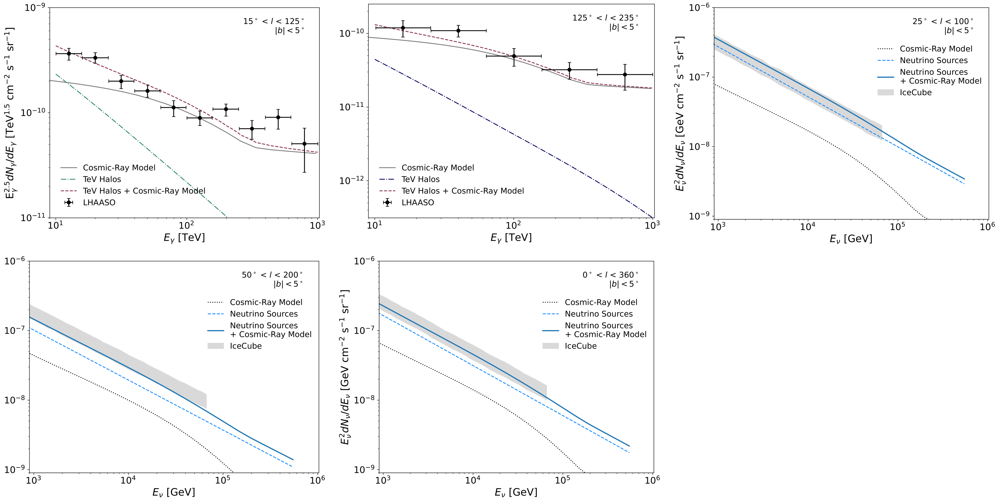
图注：The predictions of our model compared to the gamma-ray and neutrino emission observed from the Galactic Plane. In the upper two panels, we show the gamma-ray spectra from the inner and outer Galactic Plane, including contributions from cosmic-ray interactions in the ISM (adopting cosmic-ray model A) and from unresolved TeV halos. These spectra are compared to the LHAASO data from Ref.~\(\cite{cao_measurement_2023}.\) In the lower three panels, we show the neutrino spectra from the inner, outer, and entire Galactic Plane, including contributions from cosmic-ray interactions in the ISM (again, adopting cosmic-ray model A) and from neutrino source populations. These spectra are compared to the IceCube data from Ref.~\(\cite{icecube_collaboration_observation_2023},\) as derived using the $\pi^0$ template model. The gamma-ray and neutrino spectra shown were calculated using the best-fit model parameters.
对应解读：建议重点查看的图表1；关键图表逐图导读图1；模型拟合段落中关于LHAASO伽马射线与IceCube中微子联合能谱分解的核心讨论。
入选理由：这是最直接支撑论文主结论的多信使能谱分解图，同时给出LHAASO内外银河面伽马射线谱和IceCube内外及全银河面中微子谱，并区分ISM弥散强子、未分辨TeV halo、未分辨中微子源及总模型。它能直接检验日报强调的关键点：纯弥散强子项在中微子端是否低于IceCube数据，以及加入源族群后是否改善拟合。
来源与置信度：\(arxiv_source\)；high；\(arxiv_source\) / \(alisha_first_paper.tex\):figure[2]
Fig08
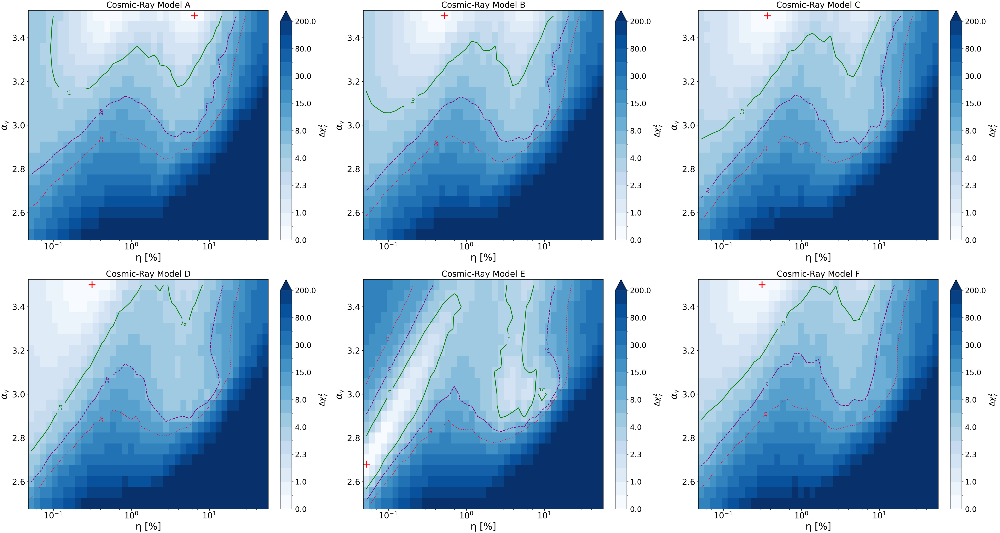
图注：The values of the spectral index ($\alpha_{\gamma}$) and efficiency ($\eta$) of TeV halos, as favored by our fit to the LHAASO measurements of diffuse gamma-ray emission from the Galactic Plane. Results are shown for each of the six cosmic-ray models considered in this study. The color scale reflects the change in $\chi^2_{\gamma}$ relative to the best-fit parameters, as indicated by a red cross. We have fixed the cosmic-ray model normalization, $A_G$, in each panel to its best-fit value. The contours represent the 1$\sigma$, 2$\sigma$, and 3$\sigma$ confidence regions, as evaluated for the three inferred parameters, $\alpha_{\gamma}$, $\eta$ and $A_G$.
对应解读：建议重点查看的图表4和6；关键图表逐图导读图4、图6；模型拟合段落中关于TeV halo效率、谱指数和伽马射线拟合退化的讨论。
入选理由：该图给出TeV halo谱指数alpha_gamma与效率eta的chi^2景观，并包含1、2、3 sigma置信区间，且覆盖六个宇宙线传播模型。它比单个能谱图更适合评估LHAASO端对TeV halo参数的约束、参数退化以及结论对传播模型选择的稳健性。
来源与置信度：\(arxiv_source\)；high；\(arxiv_source\) / \(alisha_first_paper.tex\):figure[8]
Fig09
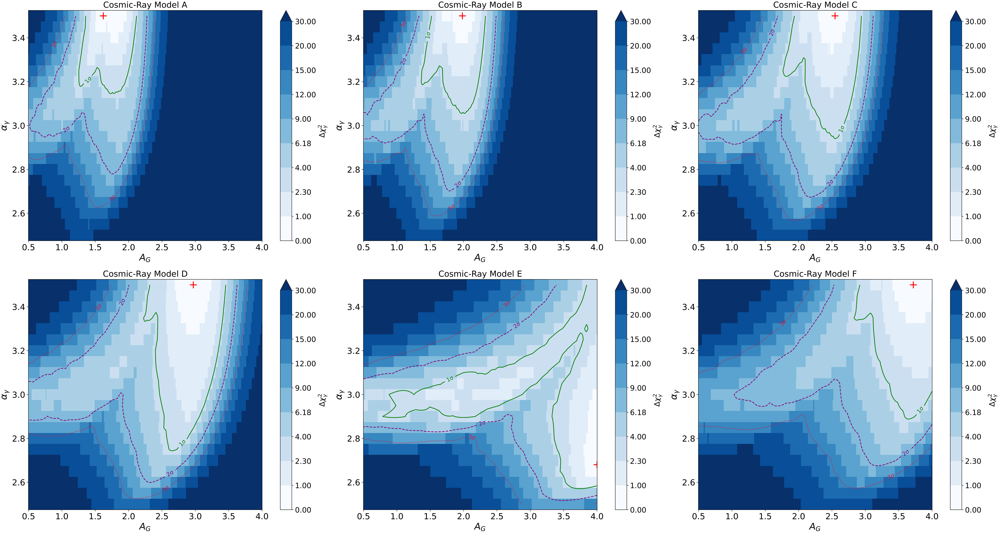
图注：As in Fig.~\(\ref{fig:landscape_constrained_alphaeta},\) but showing the values of the TeV halo spectral index ($\alpha_{\gamma}$) and cosmic-ray model normalization ($A_G$) favored by our fit to the LHAASO data. We have fixed the TeV halo efficiency, $\eta$, in each panel to its best-fit value.
对应解读：建议重点查看的图表4和6；模型拟合段落中关于弥散宇宙线归一化A_G与TeV halo谱指数之间退化的讨论。
入选理由：该图展示alpha_gamma与宇宙线模型归一化A_G的chi^2置信区间，可直接对应日报中关于“提高弥散强子项会受LHAASO伽马射线约束”的解读。它补充Fig08，说明伽马射线数据如何限制普通弥散项，从而间接强化中微子端需要额外源族群的论证。
来源与置信度：\(arxiv_source\)；high；\(arxiv_source\) / \(alisha_first_paper.tex\):figure[9]
Fig03
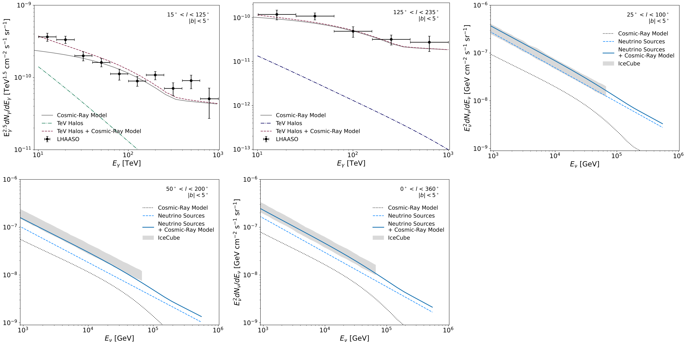
图注：As in Fig.~\(\ref{fig:CR_A_model_panel},\) but adopting cosmic-ray model B.
对应解读：建议重点查看的图表3；关键图表逐图导读图3；模型拟合段落中关于不同宇宙线传播模型下能谱分解是否仍需要中微子源族群的稳健性讨论。
入选理由：该图与Fig02同样给出伽马射线和中微子能谱分解，但采用宇宙线模型B。它用于检验主结论是否只依赖模型A；若在模型B下弥散强子中微子仍不足，就直接支撑日报强调的传播模型稳健性。
来源与置信度：\(arxiv_source\)；high；\(arxiv_source\) / \(alisha_first_paper.tex\):figure[3]
Fig04
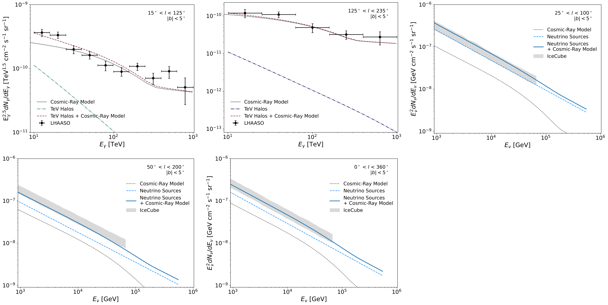
图注：As in Figs.~\ref{fig:CR_A_model_panel}-\ref{fig:CR_B_model_panel}, but adopting cosmic-ray model C.
对应解读：建议重点查看的图表3和6；关键图表逐图导读图3；关于传播假设变化后弥散中微子预测包络是否仍低于IceCube的讨论。
入选理由：该图采用宇宙线模型C，继续以相同观测量和模型成分展示联合拟合结果。与Fig02、Fig03并列阅读，可以判断不同传播设定下LHAASO约束与IceCube中微子缺口是否同时存在。
来源与置信度：\(arxiv_source\)；high；\(arxiv_source\) / \(alisha_first_paper.tex\):figure[4]
Fig10
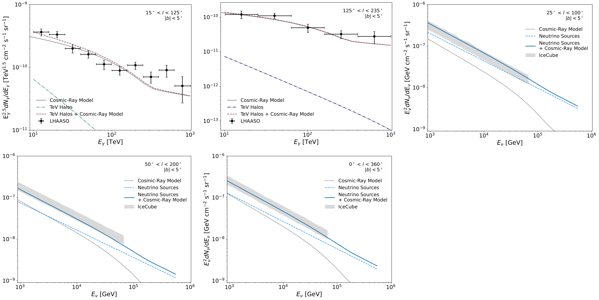
图注：As in Figs.~\ref{fig:CR_A_model_panel}-\ref{fig:CR_F_model_panel}, but adopting cosmic-ray model E$'$.
对应解读：建议重点查看的图表3和6；关键图表逐图导读图6；关于替代宇宙线模型E'下系统稳健性的讨论。
入选理由：该图采用额外的宇宙线模型E'，属于对主传播模型族之外假设的补充检验。它比重复展示所有A到F模型更有系统误差意义，可帮助读者判断“需要未分辨中微子源”是否在替代传播设定下仍成立。
来源与置信度：\(arxiv_source\)；high；\(arxiv_source\) / \(alisha_first_paper.tex\):figure[10]
强相关工作
最直接的同类工作是 IceCube 关于银河盘高能中微子辐射的观测论文，以及 LHAASO 关于银河面超高能弥散伽马射线的测量论文。前者给出本文要解释的中微子信号，后者提供限制强子弥散模型和 TeV halo 贡献的伽马射线基准。建议检索关键词包括 “IceCube Galactic plane neutrino emission”、 “LHAASO diffuse gamma-ray Galactic plane”、 “unresolved TeV halos Galactic diffuse emission” 和 “Galactic neutrino source population”。
在理论背景上，这篇工作与银河宇宙线传播、\\(pp\\) 产生中微子和伽马射线、以及 PeVatron 源族群研究相连。与某些“纯弥散宇宙线海解释 IceCube 银河盘信号”的观点相比，本文更强调未分辨源族群的必要性；与单纯用 TeV halo 解释 LHAASO 弥散伽马射线的工作相比，本文进一步指出 TeV halo 解决的是伽马射线端，不会自动解决中微子端。若要追踪相反观点，应检索 “diffuse cosmic-ray interactions explain Galactic neutrinos” 和 “Galactic cosmic-ray sea neutrino flux”。
同一事件 / 同类源线索：
相似工作：
基础理论 / 方法工作：
相反观点 / 张力线索：
（未提供）
3. Tomography of the gamma-ray sky from cross-correlation with DESI DR2 and unWISE galaxies
- 来源：arXiv / astro-ph.HE
- 链接：https://arxiv.org/abs/2606.16297v1
- 作者：Alex Krolewski, Neal Dalal, Will J. Percival, Elena Pinetti, J. Aguilar, S. Ahlen, S. BenZvi, D. Bianchi
- 评分：novelty 8/10，importance 8/10，relevance 10/10，final 9.70/10
- 推荐理由：Fermi-LAT未解析伽马射线背景与DESI DR2、unWISE的层析互相关，约10σ探测UGRB-LSS相关；对河外伽马射线背景来源、AGN贡献和银河前景污染判断很有价值。
中文题目：Tomography of the gamma-ray sky from cross-correlation with DESI DR2 and unWISE galaxies
做了什么：本文用 DESI DR2 与 unWISE 星系图对 Fermi-LAT 伽马射线天空做红移层析，目标是判断已探测点源和未解析伽马射线背景 UGRB 的偏置加权红移分布。作者先用已探测 Fermi 点源验证方法，得到与已知光学对应体红移分布大体一致的结果和约 b≈2 的偏置；随后对 UGRB 做自相关与交叉相关分析，发现 UGRB-LSS 交叉相关总显著性约 10σ。核心结论是：UGRB 的红移分布大体类似已探测点源，但 z<2 左右的交叉相关振幅偏弱，可能由残余银河弥散前景稀释，也不能排除 z>2 高红移伽马射线源贡献。论文建议用 CMB lensing 和其他高红移示踪体进一步打破退化。
为什么重要：这篇论文重要在于它把 DESI 时代的大尺度结构数据接入了 Fermi UGRB 来源分解问题。相比只看 Fermi 自身的强度谱或各向异性，交叉相关能提供红移信息，并能用 DESI 与 unWISE 的一致性检验降低单一巡天系统误差风险。论文还把一个关键系统误差——残余银河弥散辐射——提升为定量模型比较的一部分，而不是简单背景扣除。其结论对 blazar/AGN 对 UGRB 的贡献、高红移伽马射线源是否存在、以及未来 CMB lensing 与高红移星系样本的科学收益都有直接影响。
理论 / 观测 / 仪器方法价值：理论价值在于把 UGRB 来源问题从光度函数外推转化为可观测的三维结构层析约束，直接测量 \(b(z)df/dz\) 而非只拟合总强度。观测价值在于联合 Fermi、DESI DR2 和 unWISE，利用互相关抑制各自无关噪声，并用两套 LSS 示踪体互相检验系统误差。方法价值在于同时使用点源校准、UGRB 交叉谱、UGRB 自谱和 profile likelihood 诊断，把源红移分布、偏置和前景污染放在同一统计框架下讨论。对未来仪器和巡天而言，它明确指出高红移结构示踪体和 CMB lensing 是区分残余银河污染与 z>2 河外伽马射线发射的关键。
为什么应该关注：值得关注的原因是 UGRB 是高能天体物理中少数仍然混合了普通源族、前景建模和潜在新物理空间的观测量。本文没有只给一个背景强度预算，而是用大尺度结构互相关直接询问伽马射线光子来自哪个红移范围、是否住在类似 AGN 宿主的暗物质晕中。约 10σ 的交叉相关探测说明信号统计上很强，而 z<2 振幅偏弱又暴露出物理解释并不闭合：这正是后续用更好前景模型和高红移示踪体推进的切入点。
展开详细解读：文章讲解、背景、理论、重点章节、图表与相关工作
文章详细讲解
本文的科学问题可以表述为三个连续问题。第一，Fermi 已探测河外点源与光学/红外大尺度结构的交叉相关能否恢复合理的红移分布和偏置？第二，Fermi UGRB 与 DESI DR2、unWISE 星系图之间是否有统计显著的交叉相关，且这种相关在不同能段和不同 LSS 示踪体之间是否一致？第三，交叉相关的幅度与 UGRB 自功率谱能否共同判断 UGRB 中有多少来自 z<2 左右的常规河外结构，又有多少可能是银河残差或 z>2 源。
方法上，作者把 Fermi 数据分为已探测点源部分和未解析背景部分，并在多个能段中构造角向图。对每个伽马图，与 DESI/unWISE 的星系密度图计算角交叉功率谱或等价的 binned \(C_l\) 数据向量，再用红移核模型拟合 b(z) df/dz 或其低维参数化摘要量。点源部分用来校准层析方法，UGRB 部分则同时使用交叉谱和自谱信息；其中自谱还被用来估计残余银河污染和河外聚类/泊松成分的相对贡献。
关键结果之一是点源交叉相关显著，并给出的红移分布与文献中已识别光学对应体的红移分布大体一致，偏置约 b≈2，类似承载明亮 AGN 的大质量星系。这并不意味着每个未识别点源都被确定分类，而是说明交叉相关作为统计红移探针在已解析样本上没有出现明显失真。特别是论文对无确认对应体和 BCU 子样本的约束有方法学价值：这些对象的个体红移最不完整，层析交叉相关正好能提供群体层面的红移信息。
UGRB 部分的主结果是与 LSS 的交叉相关总探测约 10σ，并且 DESI 与 unWISE 都给出高度显著检测。这里的重点不是单一能段的一条曲线，而是多能段、多星系样本的数据向量在同一物理解释下是否一致。Fig08 比较 DESI 和 unWISE 的边缘化参数，Fig09 给出几个最佳探测能段的 b df/dz 摘要约束，Fig10 的 profile likelihood 展示参数约束形状，Fig11 显示完整的 b(z) df/dz 样本，Fig12 则用 UGRB 自谱讨论银河残差。
局限性主要来自系统误差与解释退化。若 UGRB 图中仍有残余银河弥散辐射，它会增加总强度和自功率，却不与河外 LSS 强相关，从而使 z<2 的交叉相关振幅看起来偏弱。作者用 1--2 GeV 能段自谱和弥散模板扣除后的残差拟合来估计污染水平，但该估计依赖模板形状、掩膜、能段和 beam 处理。另一方面，如果真实有大量 z>2 伽马射线源，DESI/unWISE 在相应红移上的示踪能力不足，也会产生类似的低 z 交叉相关稀释。因此下一步最直接的修复不是仅调 UGRB 模板，而是引入高红移示踪体、CMB lensing 以及更细致的前景边缘化模型。
关键结果是怎么做出来的
第一步结果是对已探测 Fermi 点源做交叉相关层析。作者把点源样本与 DESI DR2 和 unWISE 的大尺度结构图相关，得到显著交叉信号，并从中反演点源的偏置加权红移分布。该分布与已有文献中已识别 optical counterparts 的红移分布大致一致，且线性偏置约 \(b\approx2\)。这一步的证据主要对应 Fig06 一类图：不同点源子样本的 \(bdf/dz\) 与 \(bf_{0-2.1}\) 约束能否在误差范围内复现已知 blazar/AGN 宿主的预期。它为 UGRB 分析提供了内部 sanity check，因为同样的 LSS 核和交叉谱估计器在已知对象上没有明显失败。
第二步是 UGRB 与 LSS 的交叉相关探测。摘要给出总显著性约 10σ，并且 DESI 与 unWISE 各自都有高显著检测。严格阅读时应找到正文中定义的空模型、数据向量、多极范围、协方差和 \(\Delta\chi^2\) 或 S/N 计算方法：10σ 应该来自多能段、多红移样本联合的似然比，而不是单个图中某一点偏离。Fig08 是关键一致性检验，因为它比较两套独立程度较高的 LSS 示踪体给出的边缘化参数；若实线 DESI 与虚线 unWISE 一致，说明信号不是由单一巡天 footprint 或测光系统造成。
第三步是红移分布解释。Fig09 和 Fig11 显示 UGRB 的偏置加权红移分布与已探测点源大体相似，这支持常规河外 AGN/blazar 类源对 UGRB 有重要贡献。但论文同时强调，z<2 或 z<2.1 的交叉相关幅度相对偏弱。关键量是 \(b f_{0-2.1}=\int_0^{2.1} b(z)df/dz\,dz\)，它小并不唯一意味着低红移光子少，也可能是平均偏置低，或总 UGRB 中混入了不与该 LSS 样本相关的成分。因此这一步必须结合点源偏置约 b≈2 的校准来判断：若假设 UGRB 源偏置类似点源，则低红移相关成分似乎不足以解释全部 UGRB。
第四步是利用 UGRB 自谱诊断残余银河污染。Fig12 对 1--2 GeV 能段展示了扣除泊松噪声和银河模板后的自功率谱，低多极仍有大残余功率。作者用扣除模板的自谱形状和 beam-squared 类分量组合拟合绿线，并用两个归一化估计 UGRB 图中残余银河污染与河外成分的比例。这个诊断支持一种自然解释：交叉相关振幅偏弱并非一定要求奇异高红移源族，而可能是 UGRB 图中有相当不与河外 LSS 相关的银河残余成分稀释了信号。
第五步是作者没有把结论说死。即便自谱估计的污染水平能让 UGRB 源的平均偏置与已探测点源相近，论文仍不能排除 z>2 的额外伽马射线发射。原因是 DESI/unWISE 对高红移结构的约束有限，而高红移源与低红移星系图的交叉相关天然弱。作者建议用 z>2 示踪体，尤其是 CMB lensing，作为下一步理想检验。对读者而言，最重要的稳健性问题是：改变银河前景模板、能段、天空掩膜和 LSS 样本后，\(bf_{0-2.1}\) 偏弱与约 10σ 探测是否同时保持。
展开背景、理论、公式、模型、章节和图表导读
背景知识
这篇论文关心的是费米 LAT 看到的河外伽马射线天空到底来自哪里，尤其是已解析点源以外的未解析伽马射线背景 UGRB。自 Fermi-LAT 建立全天 GeV 伽马射线图以来，明亮活动星系核、耀变体、星暴星系、毫秒脉冲星、星系团以及潜在暗物质湮灭/衰变都曾被讨论为弥散背景的候选来源。难点在于 UGRB 是许多弱源、仪器点扩散函数、泊松噪声和银河弥散辐射残差叠加后的统计量，单靠伽马射线强度图很难把红移分布、源族偏置和前景污染分开。
历史上，伽马射线背景研究通常有两条路径：一条是直接对点源计数、光度函数和各源族谱能分布建模，向低通量外推；另一条是把伽马射线图与外部大尺度结构示踪体做角相关。后者的优势是红移层析：如果某一红移壳层的星系密度与伽马射线强度同起伏，那么该壳层中的物质结构很可能承载了相应的伽马射线源。早期类似工作常用 2MASS、SDSS、WISE、NVSS、星系团目录或 CMB lensing；本文的进步在于使用 DESI DR2 和 unWISE 这类覆盖面积大、红移范围宽、样本统计强的 LSS 图来做更细的层析约束。
本文的研究对象有两个层次。第一层是已探测的 Fermi 点源，特别是河外点源、没有确认光学对应体的点源以及 BCU blazar candidates of uncertain origin。这一层更像方法校准：如果交叉相关能恢复出与已知光学对应体红移分布大致一致的偏置加权红移分布，并给出类似宿主大质量星系/AGN 的线性偏置 b 约为 2，那么同一套方法用于 UGRB 时就更可信。第二层才是主要科学目标：未解析伽马射线背景的自功率谱与其同 DESI/unWISE 星系图的交叉功率谱。
本文动机并不是简单问“UGRB 是否和星系相关”，而是问“UGRB 在 z<2 左右的大尺度结构中占多少、其偏置加权红移分布是否类似 Fermi 已探测点源、以及弱交叉相关幅度是否说明有额外成分”。摘要给出的核心张力是：UGRB-LSS 交叉相关总显著性约 10σ，说明有明确河外结构相关信号；但在 z<2 的交叉相关幅度偏弱，若照常用 blazar/AGN 类源的偏置解释，则似乎有一部分 UGRB 不随 z<2 LSS 起伏。作者提出自然解释之一是 UGRB 图中仍残留银河弥散前景；另一可能是 z>2 的高红移伽马射线源贡献，需要 CMB lensing 或更高红移示踪体进一步区分。
一个常见误区是把“未解析背景”直接等同于“河外各向同性背景”。实际 Fermi UGRB 图需要先从观测光子图中扣除已探测点源、仪器曝光、银河弥散模板和各向同性模板等成分，任何模板不完备都会留下与银河坐标相关的低多极大尺度功率。另一个误区是把交叉相关的红移分布直接读成源数红移分布 dN/dz；本文实际约束的是偏置加权的伽马射线强度分数 b(z) df/dz，若 b(z)、光度演化或能谱随红移变化未知，则仅靠交叉相关不能唯一恢复真实源族组成。
基础理论 / 方法脉络
基础物理图像是：宇宙中许多弱伽马射线源沿视线叠加，形成一个角向强度场 Iγ(n)。如果这些源居住在暗物质晕和星系所在的大尺度结构中，那么 Iγ 的起伏会追踪物质密度涨落 δm，只是带有源族偏置、光度权重、红移核和仪器响应的投影。星系巡天给出另一个投影场 g(n)，其起伏同样来自 δm。两者的角交叉功率谱 C_l^{γg} 就是用同一个三维密度场把两个二维图联系起来的统计量。
在 Limber 近似和线性偏置模型下，一个投影场 A 的核 \(W_A(z)\) 与另一个投影场 B 的核 \(W_B(z)\) 通过三维物质功率谱 \(P_m(k,z)\) 产生角功率谱。对星系样本来说，核大致是 \(b_g(z)\) \(n_g(z)\)，即星系偏置乘以归一化红移分布；对伽马射线图来说，核是 Iγ 的红移贡献 dfγ/dz 乘以伽马源偏置 bγ(z)。因此交叉相关最直接测到的是 bγ(z) dfγ/dz，而不是未加权的源数或光度函数。
本文的层析思想是把 DESI 和 unWISE 星系分成不同红移或选择函数有效不同的样本，与 Fermi 不同能段的点源图/UGRB 图逐一交叉。若某个红移范围的星系样本给出强 C_l^{γg}，说明伽马射线强度场在该红移范围有较大偏置加权贡献。作者还比较了 Fermi-DESI 与 Fermi-unWISE 的边缘化参数，借此检验结论是否受单一星系巡天选择函数、星-星系分离、测光红移误差或掩膜影响。
对点源样本，伽马射线图可理解为离散源数密度或源强加权点过程，相关函数既有与 LSS 的聚类项，也有泊松/shot-noise 项。对 UGRB，图中还包含光子计数泊松噪声、未扣干净的已知点源尾部、PSF beam 平滑，以及银河弥散辐射模板残差。低 l 的额外功率通常优先怀疑大尺度前景或模板误差，高 l 的白噪声或近似 beam-squared 项则更接近泊松源或光子噪声特征。
该论文的关键退化是“低红移伽马射线分数 \(f_{0-2.1}\)、伽马源偏置 bγ、残余银河污染分数、高红移 z>2 贡献”之间的退化。交叉相关只对与 LSS 同相的河外结构成分敏感；若图中加入一块不与 DESI/unWISE 相关的成分，例如银河残差或超出星系样本红移范围的高 z 辐射，那么总 UGRB 强度可很高，但 z<2 的交叉相关幅度会被稀释。自功率谱可帮助区分一部分情形，因为银河残差在低 l 有特征形状，而高 z 源的投影和 bias 演化会给出不同的角尺度依赖。
公式与推导
从投影强度场开始。某一能段的伽马射线强度可写成沿视线积分
其中 \(dI_\gamma/dz\) 是该能段平均强度对红移的贡献，\(\chi(z)\) 是共动距离，\(\delta_\gamma\) 表示伽马源空间起伏。若只研究归一化强度起伏，可以定义 \(f_\gamma(z)\) 使 \(\int dz\,df_\gamma/dz=1\)。
线性尺度上假设伽马源起伏与物质起伏满足
其中 \(b_\gamma\) 和 \(b_g\) 分别是伽马源和星系偏置。本文层析交叉相关真正约束的是 \(b_\gamma(z)df_\gamma/dz\)，因此偏置和强度分数天然退化。
星系投影过密度可写为
其中 \(i\) 标记 DESI 或 unWISE 的某个样本/红移 bin。测光选择函数或红移分布误差会直接进入 \(W_i^g\)，因而是交叉相关系统误差源。
伽马射线归一化起伏的核可写为
其中 \(E\) 表示 Fermi 能段。若论文给出 \(b f_{0-2.1}\)，它对应
这个量大表示低红移且高偏置的河外结构贡献强，小则可能表示低红移分数小、偏置低，或被不相关成分稀释。
在 Limber 近似下，理论交叉角功率谱为
这条公式说明不同星系样本的红移核像滤波器一样扫描 \(W^\gamma_E(z)\)，也是“tomography”的数学基础。适用条件是角尺度不太大、核函数足够宽、非线性和一晕项处理不主导。
UGRB 自功率谱可分为聚类、泊松和前景残差等项，简化写作
其中 \(B_\ell\) 是 LAT 点扩散函数/beam 窗口，\(C_N\) 是光子计数泊松噪声，\(C_\ell^{\mathrm{fg,res}}\) 是残余银河模板相关功率，\(C_\ell^{\mathrm{src,P}}\) 是未解析离散源泊松项。Fig12 中的 beam-squared 分量和模板分量就是对这些项的经验分解。
若 UGRB 图含有一个与 LSS 不相关的污染分数 \(f_{\rm uncor}\)，观测归一化交叉谱近似被稀释为
其中 \(\mathrm{EG}\) 表示真正河外且被该 LSS 样本红移范围追踪的成分。这个关系解释了为什么残余银河前景或 z>2 成分都会使 z<2 的交叉相关幅度偏低。
数据拟合通常可用高斯近似似然表示为
其中 \(\mathbf d\) 是所有能段、星系样本和多极 bin 的交叉/自谱数据向量，\(\mathbf m\) 是由 \(bdf/dz\)、污染幅度等参数生成的模型，\(\mathbf C\) 是协方差矩阵。探测显著性可用空模型与最佳模型的似然比近似估计
这对应摘要中总交叉相关约 10σ 的统计表述，但实际自由度、look-elsewhere 和系统误差边缘化需要看正文定义。
模型拟合 / 应用方法
本文拟合的核心数据向量包括 Fermi 伽马射线图与 DESI/unWISE 星系图的角交叉功率谱，以及 UGRB 自功率谱的若干诊断量。交叉谱部分的主要拟合量是每个 Fermi 能段的 \(b(z)df/dz\) 或其参数化摘要，例如平均偏置加权红移 \(\bar z\)、峰值红移 \(z_{\rm peak}\) 和 \(bf_{0-2.1}\)。点源部分还拟合或推断平均线性偏置，摘要给出约 b≈2；UGRB 部分则比较其偏置和红移分布是否类似点源。
似然层面可理解为对 binned \(C_\ell^{\gamma g}\) 使用协方差加权的高斯似然，并对不关心参数边缘化。Fig10 的 profile likelihood 说明作者不只给 MCMC 均值，还检查了参数方向上的相对似然形状。读者应关注 profile 曲线是否对称、是否触碰参数边界、不同能段是否有一致最优区间；这些特征决定置信区间能否用简单高斯误差解释。
残差诊断有两类。交叉谱残差应检查模型是否在所有多极 bin、所有星系样本和所有能段中随机分布，特别是低 l 大尺度处是否系统偏高或偏低；若残差与 DESI/unWISE footprint 或银河纬度相关，则可能是掩膜和前景问题。自谱残差集中在 Fig12：扣除泊松噪声与银河模板后，低 l 残余仍大，作者用残余模板形状加 beam-squared 分量拟合，并在底部面板显示归一化残差。这是判断污染模型是否足够的关键，而不是附属图。
主要参数退化包括 \(b_\gamma\) 与 \(df/dz\) 的乘积退化、低红移分数与不相关污染分数的稀释退化、z>2 源贡献与 z<2 LSS 覆盖不足的退化、以及银河前景模板形状与真实河外大尺度聚类的低 l 退化。单靠交叉谱无法区分“低偏置低红移源”和“高偏置源但被污染稀释”；因此作者才需要点源校准和 UGRB 自谱辅助。
系统误差应从四个方向检查。第一是 Fermi 侧：能量依赖 PSF、曝光、点源掩膜半径、弥散银河模型和 photon shot noise。第二是 LSS 侧：DESI/unWISE 的选择函数、星污染、测光零点、红移分布和 survey depth。第三是统计侧：掩膜耦合矩阵、协方差矩阵估计、能段间相关和多重检验。第四是模型侧：线性偏置与 Limber 近似在所用多极范围是否足够，一晕项或非线性聚类是否会改变高 l 振幅。
模型可能失败的情形包括：UGRB 中存在多个源族且红移分布和能谱差异很大，用单一平滑 \(bdf/dz\) 参数化会过度平均；银河残差模板与真实残差形状不匹配，导致污染分数估计偏低或偏高；高红移源贡献显著但没有相应示踪体，导致所有 z<2 交叉相关解释都不闭合。最有力的外部检验是加入 CMB lensing、Lyman-break/quasar 等高 z 样本，并在不同银河前景模型下重复 profile likelihood。
重点章节 / 结果段落怎么读
-
引言与相关工作部分：重点提取作者如何定义 UGRB、IGRB、已解析点源和残余银河前景，以及他们如何定位相对于 Fermi 点源光度函数、各向异性自谱和先前 LSS 交叉相关研究的增量。不要只看背景叙述，要找出本文声称新增的是 DESI DR2/unWISE 层析精度、能段划分还是系统误差处理。
-
数据与地图构造部分：逐项检查 Fermi-LAT 能段、曝光校正、点源掩膜、银河纬度切除、UGRB 模板扣除、DESI/unWISE 星系样本选择和红移分布估计。任何交叉相关论文的结论都高度依赖 map-making；若该节中掩膜或权重选择较复杂，应在读图前先画出有效天空和模式投影。
-
角功率谱估计与协方差部分：重点看多极范围、binning、beam/PSF 校正、shot noise/Poisson noise 扣除、jackknife 或模拟协方差的构造。约 10σ 探测的可信度取决于协方差是否包含星系样本方差、伽马光子噪声、掩膜耦合和能段间相关。
-
点源交叉相关结果部分：把它当作方法验证章节阅读。关注 Fig06 类结果是否能复现已知光学对应体分布和 b≈2 偏置；若这里已经出现显著偏差，UGRB 结论应降权。还要看无红移点源和 BCU 的约束是否提供了新的群体红移信息。
-
UGRB 交叉相关与红移重建部分：这是主结果章节，应将 Fig08、Fig09、Fig10、Fig11 串起来读。先看 DESI/unWISE 一致性，再看每个能段的 profile likelihood，最后看 \(bdf/dz\) 形状与 \(bf_{0-2.1}\) 幅度。避免只摘取“10σ”一句，因为物理解释来自振幅和红移分布，而不仅是探测存在。
-
自谱、前景污染与讨论/结论部分：重点读 Fig12 周围的文字，看作者如何从自谱分解估计残余银河污染，以及该估计如何改变 UGRB 平均偏置的解释。最后核查作者对 z>2 成分和 CMB lensing 后续检验的表述是否是定量预测还是定性建议。
建议重点查看的图表
-
点源层析约束图：重点看已探测河外 Fermi 点源、未确认对应体和 BCU 的 b(z) df/dz 或 b \(f_{0-2.1}\) 约束是否与已知光学对应体红移分布一致。应检查置信区间是否宽到允许多种源族，以及是否有低红移或高红移尾部被先验截断。
-
UGRB-DESI 与 UGRB-unWISE 参数比较图：重点看同一 Fermi 能段下两套 LSS 示踪体给出的边缘化参数是否相容。若 DESI 与 unWISE 系统偏离，可能指向星系选择函数、测光红移、掩膜或星污染问题；若一致，则交叉相关探测更稳健。
-
四个最佳能段的红移分布摘要图：检查平均偏置加权红移、峰值红移 \(z_peak\) 和 b \(f_{0-2.1}\) 的能量依赖。不要把 b \(f_{0-2.1}\) 直接当作光子分数；它还乘了源偏置，必须结合 b≈2 或其他偏置假设解释。
-
Profile likelihood 图：看似然曲线是否近似二次型，是否存在平顶、边界截断或多峰。平顶说明参数未被数据强约束，多峰可能说明不同红移壳层或污染模型之间有退化；这比只看最佳拟合值更重要。
-
b(z)×df/dz 后验样本图：检查完整分布形状，而不仅是均值线。若样本在某些红移区间大幅散开，说明该处由先验或少量星系样本驱动；若不同能段的均值形状相似，可支持 UGRB 红移分布与点源类似的说法。
-
UGRB 自功率谱与前景残差图：重点看泊松噪声扣除、银河模板扣除、低 l 残余、beam-squared 分量以及底部残差面板。若低 l 残差显著高于模型误差，说明残余银河污染估计仍可能不足。
-
能段依赖与掩膜/系统检验表：应查论文中是否改变银河纬度掩膜、点源掩膜、能段边界、星系权重或多极范围后重复测量。主结论若只在某一掩膜或某一能段成立，需要谨慎解释。
关键图表逐图导读
图 1/早期数据与掩膜类图应先看 Fermi 能段图、点源/UGRB 掩膜、DESI 与 unWISE 覆盖区域是否在同一有效天空内。横纵坐标若是天球投影，重点不是局部亮斑，而是银河面切除、亮点源遮挡和 survey footprint 的重叠。陷阱是把掩膜边缘或扫描深度变化误认为物理相关；这些模式若与星系密度图共享系统误差，会污染交叉谱。
图 6 是点源层析的关键验证图。它比较河外 Fermi 点源、无确认对应体点源和 BCU 子样本的红移分布约束以及 \(b f_{0-2.1}\)。读图时应看曲线或点的中心值是否落在已知 optical counterpart 红移分布附近，同时看误差条是否允许明显不同的高红移尾。这里的模型线不是单个源的红移判定，而是群体的偏置加权分布；若 BCU 的置信区间很宽，说明层析只能改善统计认识，不能替代个体光谱红移。
图 8 比较 Fermi 与 DESI 交叉、Fermi 与 unWISE 交叉得到的边缘化参数。横轴/纵轴应是 UGRB 红移分布或低红移贡献的参数，实线和虚线代表不同 LSS 数据集。若两者在 1σ 或 2σ 范围内一致，说明约 10σ 探测不太可能完全由某一个星系目录系统误差造成；若某能段偏离，则要回到该能段的 PSF、背景模板和星系选择函数检查。
图 9 是 UGRB 主结论的摘要图，给出四个最高显著性能段的平均偏置加权红移、峰值红移和 \(b f_{0-2.1}\)。读法是先比较不同能段是否显示相似的红移峰值，再看 \(b f_{0-2.1}\) 是否低于点源类比预期。陷阱是把 \(\bar z\) 和 \(z_{\rm peak}\) 过度物理化：它们是 \(bdf/dz\) 的摘要，不是源数分布的真实均值和峰值。
图 10 的 profile likelihood 是拟合诊断图。横轴通常为某个参数值，纵轴为相对负对数似然或 \(\Delta\chi^2\)。若曲线近似抛物线，误差条解释较稳；若曲线在边界附近变平或非对称，说明该参数与其他参数退化或受先验限制。读者应特别检查四个能段的似然宽度是否一致，以及是否存在某一能段主导总显著性的情况。
图 11 展示四个最佳约束能段的 \(b(z)\times df/dz\) 后验样本，并归一化到 \(0 图 12 是系统误差讨论的核心。上面板中蓝线是扣除光子泊松噪声后的自谱，绿线是图层面扣除银河弥散模板后的 UGRB 自谱，橙线是被扣模板的自谱，黑色点划/点线是拟合出的残余银河模板分量和 beam-squared 河外/泊松式分量，灰线是总模型。下面板残差若在低多极仍系统偏离零，说明银河残差模型未完全捕捉前景；这会直接影响“交叉相关幅度偏弱是否由污染解释”的可信度。
论文原图 / 可嵌入图片
Fig09
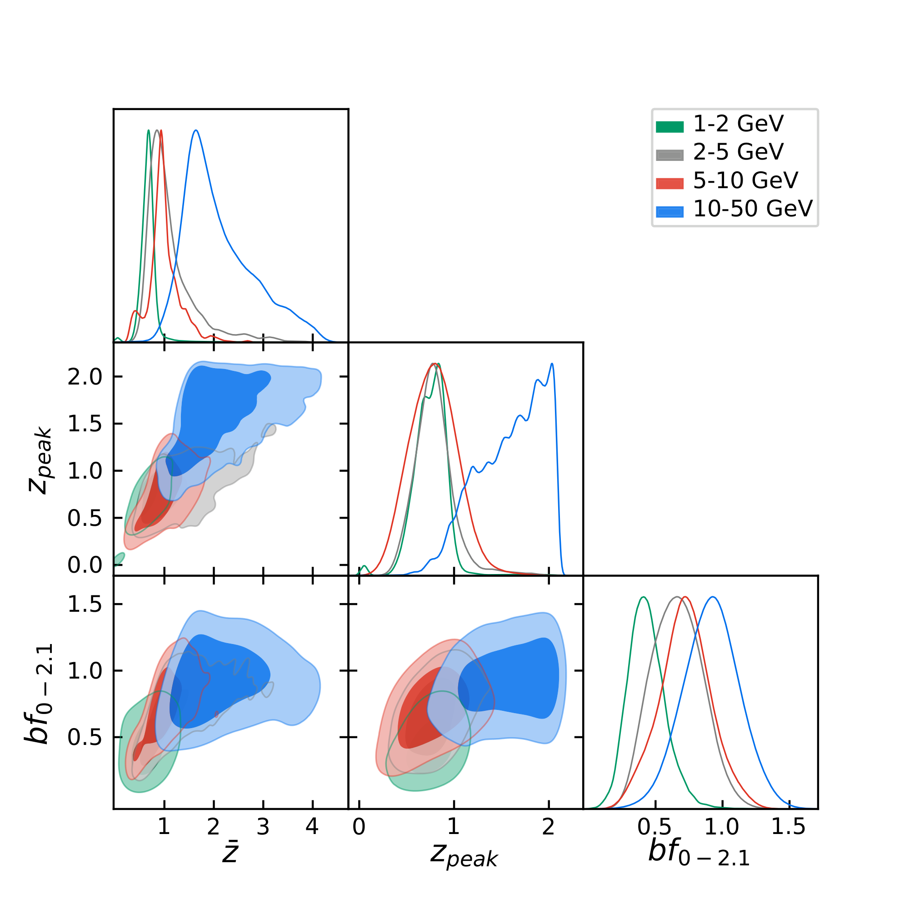
图注：Comparison of constraints on the redshift distribution and the product of the Fermi UGRB bias times the fraction at $0 < z < 2.1$, for the four UGRB energy bins with the best detection significance. Here, $\bar z$ refers to the mean (bias-weighted) redshift of the $b\,df/dz$ distribution, $z_{\rm peak}$ is the location of the maximum of $b\,df/dz$, and $b\,f_{0-2.1}=\int_0^{2.1} dz\, b\, df/dz$.
对应解读：对应核心结果：UGRB 与 DESI/unWISE 大尺度结构交叉相关后得到的红移分布、平均红移/峰值红移以及 b \(f_{0-2.1}\) 参数约束。
入选理由：这是最直接支撑论文主要结论的参数约束图，比较四个高显著性 UGRB 能段的 b df/dz 红移分布摘要量和低红移贡献幅度，可用于判断 UGRB 是否主要来自 z<2.1 的大尺度结构。
来源与置信度：\(arxiv_source\)；high；\(arxiv_source\) / main.tex:figure[9]
Fig10
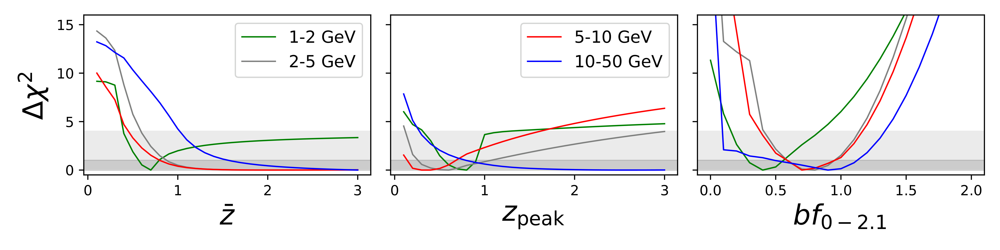
图注：Profile likelihoods for the Fermi UGRB parameters for the four energy bins with the best detection significance.
对应解读：对应模型拟合与统计约束诊断：四个最佳探测能段的 UGRB 参数 profile likelihood。
入选理由：该图展示参数似然形状、约束强弱和潜在退化，是检查模型拟合可靠性与置信区间的关键图，比单纯地图或样本示意更能支持定量解读。
来源与置信度：\(arxiv_source\)；high；\(arxiv_source\) / main.tex:figure[10]
Fig12
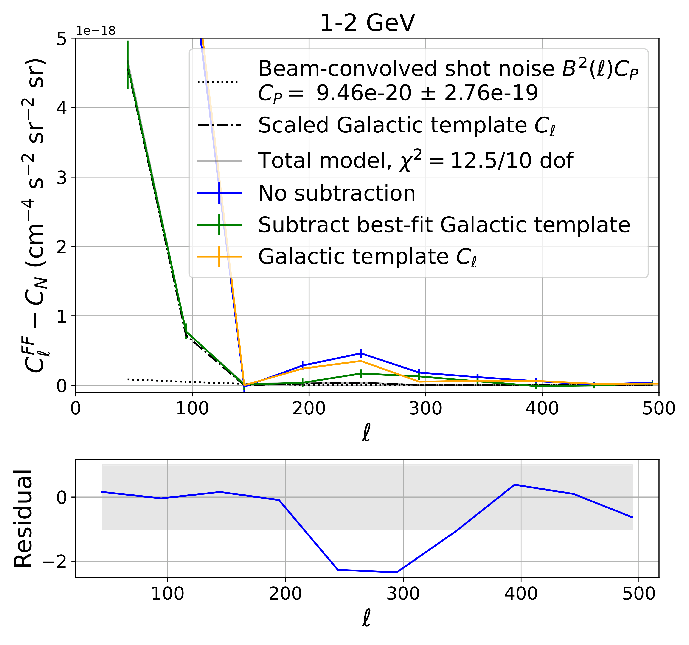
图注：Auto-spectrum for UGRB energy bin 1-2 GeV. The blue curve shows the autospectrum after subtracting the Poisson spectrum $C_N$ for the observed number of photons. The green curve shows the auto-spectrum of the UGRB after subtracting a diffuse Galactic template \(\emph{at the map level}.\) The orange curve shows the auto-spectrum of this subtracted template. As discussed in the text, the large residual low-$\ell$ power in the green curve indicates that this subtraction does not remove all Galactic emission. We estimate the amplitude of the residual Galactic contamination by fitting the green curve as a sum of a scaled version of the orange curve and scaled version of the square of the beam, shown in the black dash-dot and black dotted curves respectively. The total model for $C_\ell$ (sum of two black curves) is shown in the grey curve, and the bottom panel shows the residuals between this total model and the green curve, scaled by the uncertainties. We use the normalizations of the two black curves to estimate the fraction of the UGRB map arising from residual Galactic contamination and from extragalactic emission.
对应解读：对应系统误差与残差诊断：UGRB 自功率谱、银河弥散模板残余、泊松噪声扣除和拟合残差。
入选理由：论文关于残余银河前景污染会削弱低红移交叉相关幅度的解释高度依赖此图；图中同时包含模型分量、总模型和残差面板，是系统误差评估的核心证据。
来源与置信度：\(arxiv_source\)；high；\(arxiv_source\) / main.tex:figure[12]
Fig08
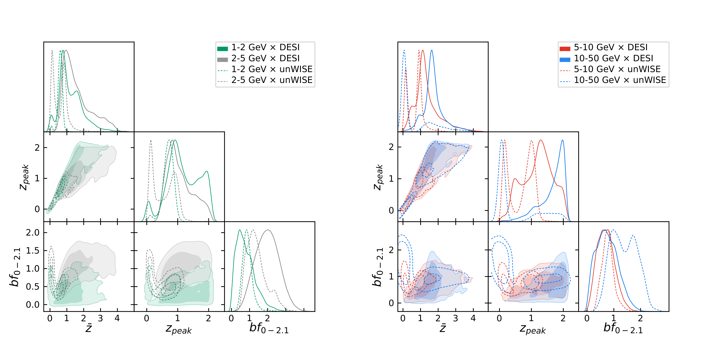
图注：Comparison of marginalized parameters for cross-correlations between Fermi and DESI (solid) and Fermi cross unWISE (dashed). Left panel shows the 1--2 GeV and 2--5 GeV bins, and the right panel shows 5--10 GeV and 10--50 GeV.
对应解读：对应 DESI 与 unWISE 交叉相关的一致性比较，以及不同 Fermi 能段的边缘化参数对比。
入选理由：该图直接比较两套大尺度结构示踪样本给出的参数约束，有助于判断约 10σ 探测是否由单一巡天系统误差驱动，并展示能量依赖性。
来源与置信度：\(arxiv_source\)；high；\(arxiv_source\) / main.tex:figure[8]
Fig06
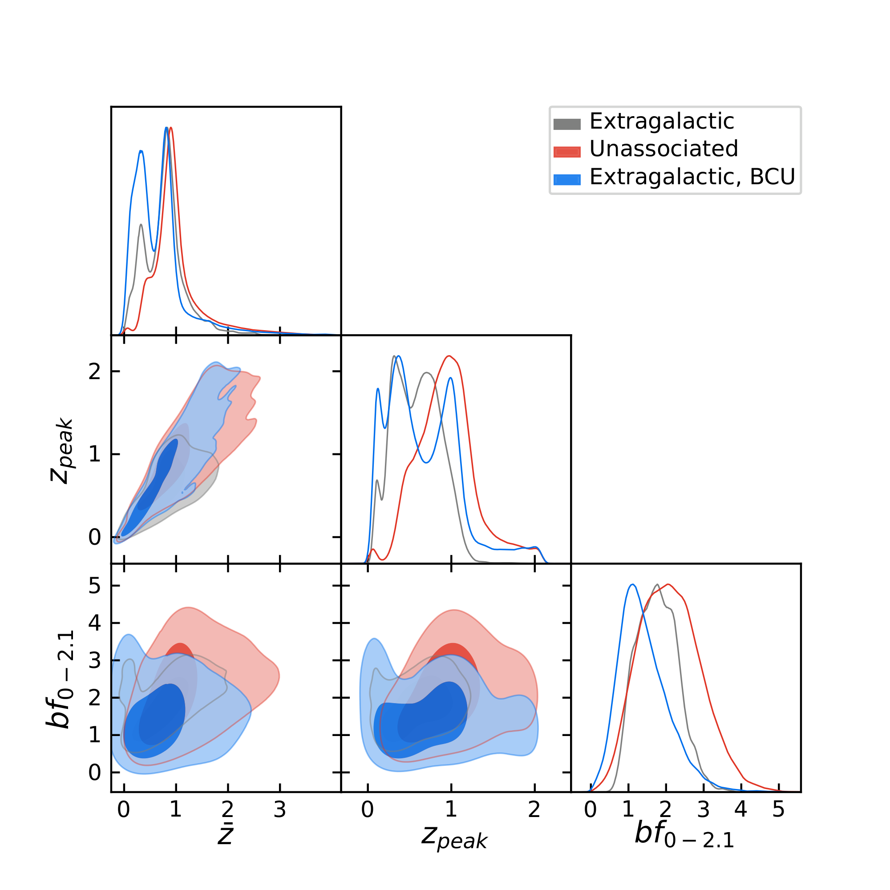
图注：Constraints on redshift distribution and product of the Fermi bias times the fraction at $0 < z < 2.1$, for extragalactic Fermi point sources (gray), sources without a confirmed counterpart and redshift (red), and ``blazar candidates of uncertain origin'' (BCU), a subset of the extragalactic sources with especially uncertain $dN/dz$ due to a smaller fraction of optical counterparts compared to confirmed blazars or flat-spectrum radio quasars.
对应解读：对应点源层析检验：已探测 Fermi 点源、无确认对应体源和 BCU 的红移分布及 b \(f_{0-2.1}\) 约束。
入选理由：论文先用已探测伽马射线点源验证层析方法，再将其用于 UGRB；此图是方法校准和与光学对应体红移分布相联系的关键结果。
来源与置信度：\(arxiv_source\)；high；\(arxiv_source\) / main.tex:figure[6]
Fig11
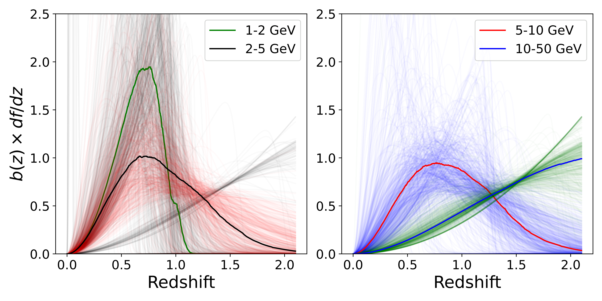
图注：Samples of $b(z) \times df/dz$ for the four best-constrained Fermi energy bins, normalized to integrate to unity over $0 < z < 2.1$. The solid lines give the mean of the samples.
对应解读：对应 UGRB 红移分布重建的逐图导读：四个最佳约束能段的 b(z)×df/dz 后验样本。
入选理由：相比只给摘要参数的图，Fig11展示完整的重建分布形状及后验样本散布，可直观看出不同能段的红移贡献范围和不确定性。
来源与置信度：\(arxiv_source\)；high；\(arxiv_source\) / main.tex:figure[11]
强相关工作
这篇论文属于“同类问题/同类方法”脉络，而非某个单一天体事件的后续。相关源类包括 Fermi-LAT 河外伽马射线背景、UGRB/IGRB、blazar/AGN 点源、星形成星系以及可能的暗物质贡献；相关示踪体包括 DESI、unWISE、WISE、2MASS、SDSS、NVSS 和 CMB lensing。可靠检索入口包括 Fermi-LAT collaboration 的各向同性伽马射线背景与源目录论文、Fermi-LAT 4FGL 目录、DESI DR2 官方页面和 unWISE 星系样本论文。可用公开链接检索：arXiv:1002.3603（早期 Fermi-LAT 各向同性弥散背景测量）、arXiv:1410.3696（Fermi-LAT IGRB 谱测量）、arXiv:1501.02003（Fermi-LAT 3FGL 目录）、arXiv:1902.10045（4FGL 目录）、https://fermi.gsfc.nasa.gov/ssc/data/access/lat/ 、https://www.desi.lbl.gov/ 、https://catalog.unwise.me/ 。这些链接应作为背景入口，具体版本和本文引用关系仍需以原文 bibliography 为准。
相似工作检索可用关键词 “Fermi unresolved gamma-ray background cross correlation large-scale structure”, “gamma-ray anisotropy WISE galaxies”, “Fermi CMB lensing cross-correlation”, “UGRB tomography”, “blazar redshift distribution cross-correlation”。基础方法应追溯到 Limber 投影、角功率谱估计、星系 bias 和多探针互相关；张力线索则集中在 UGRB 来源分解：点源计数是否已解释大部分背景、各向异性是否允许大量星形成星系或暗物质、以及银河弥散模型不确定性是否主导低能段大尺度功率。
与本文最直接的历史类比是先前用 WISE/2MASS/SDSS 等低红移星系样本与 Fermi maps 交叉相关的工作，以及用 CMB lensing 与伽马射线图交叉来探测更宽红移核的工作。若要验证本文“z>2 贡献不能排除”的说法，应特别查找 CMB lensing-UGRB 交叉相关和高红移 quasar/Lyman-break galaxy 交叉相关的论文。若要验证“残余银河污染可解释弱交叉振幅”，应查 Fermi 弥散银河模型、IGRB/UGRB 前景系统误差和各向异性自谱测量的文献。
同一事件 / 同类源线索：
（未提供）
相似工作：
（未提供）
基础理论 / 方法工作：
（未提供）
相反观点 / 张力线索：
（未提供）
4. Gamma-Ray Periodicity in Jetted AGN: Revisiting Periodicity Candidates with >17 years of Fermi-LAT Data
- 来源：arXiv / astro-ph.HE
- 链接：https://arxiv.org/abs/2606.15676v1
- 作者：P. Peñil, A. Rico, A. Domínguez, M. Ajello, S. Buson, S. Adhikari
- 评分：novelty 8/10，importance 8/10，relevance 10/10，final 9.70/10
- 推荐理由：用超过17年Fermi-LAT数据系统复查喷流AGN伽马射线周期候选，发现多数不成立且全局显著性很低；对blazar周期性、SMBH双星候选和红噪声方法论有直接重要影响。
中文题目：喷流活动星系核中的伽马射线周期性：用超过 17 年 Fermi-LAT 数据重新检验候选周期源
做了什么：这篇文章重新检验了文献中曾被报告具有伽马射线周期性或准周期振荡的喷流活动星系核，使用了超过 17 年的 Fermi-LAT 光变曲线，而不是早期常见的 6–10 年时间基线。作者把广义 Lomb-Scargle 周期图、相位离散最小化和奇异谱分析放在同一套检验框架下，并用红噪声、弯折功率谱、ARIMA 和 ARFIMA 等随机光变模型生成模拟光变来估计显著性。主要结论很直接：绝大多数早期候选周期在更长数据中不能维持，只有 8 个源还保留超过 \(2\sigma\) 的局部提示，其中 PG 1553+113 和 S5 1044+71 最突出，局部显著性超过 \(3\sigma\)，但考虑大量试验因子后全局显著性约等于 \(0\sigma\)。
为什么重要：喷流 AGN 的伽马射线周期性常被联系到超大质量双黑洞、喷流进动、盘-喷流耦合或几何多普勒调制，但这些解释只有在周期信号能跨越足够多周期并经受红噪声检验时才站得住。这篇工作的价值在于把“看起来有周期”的候选源放到更长时间基线和更严格的随机过程零假设下重测，显示许多过去的声明可能是有限基线、红噪声泄漏和瞬态准周期结构共同造成的假阳性。
理论 / 观测 / 仪器方法价值：对理论而言，本文降低了把少数周期候选直接解释为超大质量双黑洞轨道周期的可信度，提醒模型必须解释信号的非持久性和相位漂移。对观测而言，它提供了一套更稳健的伽马射线长时标周期搜索流程，包括多方法交叉验证、不同功率谱零假设、预测窗口检验和局部/全局显著性区分。对方法学而言，本文强调在强红噪声源中不能只看周期图峰值，而要把采样、曝光、噪声颜色、候选源数量和频率搜索范围都纳入显著性评估。
为什么应该关注：如果你关心喷流 AGN 是否能作为亚秒差距超大质量双黑洞的电磁信标，这篇文章相当于一次必要的“压力测试”：它没有否认所有周期线索，但把可信候选压缩到很少几个，并指出即使最好的案例也尚未达到强全局证据。若你做时域天文学、Fermi-LAT 光变、红噪声统计或多信使候选筛选，本文的实用信息是：周期搜索的主要难点不是算法能否找到峰，而是如何证明这个峰不是随机变率和多重检验的产物。
展开详细解读：文章讲解、背景、理论、重点章节、图表与相关工作
文章详细讲解
科学问题：喷流活动星系核，尤其是 blazar，在伽马射线波段具有强烈、非平稳、红噪声型的长期变率。过去十多年中，随着 Fermi-LAT 连续巡天积累，多个源被报告存在几年量级的周期或准周期信号。这类信号很诱人，因为它们可能指向超大质量双黑洞、喷流进动、螺旋喷流结构、吸积盘不稳定性或多普勒因子周期调制。但核心难题是，AGN 光变本身就是强随机过程，有限时间基线下的红噪声经常会在周期图中制造貌似显著的峰。因此本文要回答的不是“能不能找到峰”，而是“这些早期周期候选在更长数据和更严格零假设下是否仍然存在”。
作者怎么做：论文收集并重新分析了文献中已报告的伽马射线周期候选喷流 AGN，使用超过 17 年的 Fermi-LAT 数据构建更新光变曲线。周期搜索不是依赖单一算法，而是并行使用广义 Lomb-Scargle 周期图、相位离散最小化和奇异谱分析。更重要的是，作者没有把白噪声作为主要零假设，而是用多种随机变率模型生成大量人工光变，包括简单功率律功率谱、弯折功率律功率谱，以及 ARIMA 和 ARFIMA 自回归模型。这样可以检验候选周期在不同噪声假设下是否稳健。
关键结果：大多数早期候选在 17 年以上基线中没有得到确认。换句话说，早期报告的周期峰很多并没有随着新周期的到来继续按相位出现，也没有在多种算法和多种噪声零假设下保持显著。只有 8 个源仍有超过 \(2\sigma\) 的局部统计提示，其中 PG 1553+113 和 S5 1044+71 是最强的两个案例，局部统计超过 \(3\sigma\)。但论文强调，局部显著性不能等同于发现；在考虑搜索了多个源、多个频率、多个方法和多个模型之后，全局显著性被试验因子强烈稀释，最强案例的全局显著性仍与 \(0\sigma\) 相容。
局限和下一步：本文的结论不是“喷流 AGN 不可能有周期”，而是“目前多数已报道候选不能被视为持久周期”。有限光子统计、太阳约束、曝光非均匀、背景建模、能段选择、时间分箱和非平稳 flare 都仍会影响光变曲线。下一步需要更长基线、更严格的先验注册式预测检验、跨波段相位一致性、独立仪器验证，以及把周期模型从纯正弦扩展到相位漂移、间歇性和非线性准周期过程。对 PG 1553+113 和 S5 1044+71 这类保留提示的源，最有价值的是继续跟踪其下一轮预测峰谷是否按时出现，并检查光学、射电和高能伽马射线中是否存在相干对应。
关键结果是怎么做出来的
本文的证据链从样本定义开始：作者不是盲搜所有 Fermi-LAT AGN，而是针对文献中已被提出的伽马射线周期候选做再检验。这一点很关键，因为问题变成了“已声明周期能否经受新数据检验”。数据时间基线扩展到超过 17 年，显著长于许多早期周期报告使用的基线；对于几年量级候选周期，这意味着新增数据通常覆盖了至少一个额外周期，足以检验相位预测是否继续成立。
统计检验方面，作者使用广义 Lomb-Scargle 周期图寻找非均匀采样或带误差光变中的正弦型周期峰，用相位离散最小化检验折叠相位后是否更集中，用奇异谱分析分离趋势、振荡成分和噪声成分。三类方法对信号形状和噪声结构的敏感性不同；如果一个候选只在一种方法中出现，而在其他方法中消失，就很难声称其为稳定物理周期。论文的核心强项正是这种交叉检验，而不是单个周期图峰的展示。
显著性计算不是用简单白噪声 false-alarm probability，而是通过人工光变估计检验统计量分布。模拟零假设包括简单功率律功率谱、弯折功率律功率谱、ARIMA 和 ARFIMA 模型。这样做的原因是喷流 AGN 的功率谱通常在低频增强，红噪声本身会产生宽峰和长时标起伏。作者报告的 \(>2\sigma\) 或 \(>3\sigma\) 主要是局部统计，即在给定源和候选周期附近看峰值有多异常；一旦纳入多源、多频率和多方法搜索的试验因子，全局显著性显著下降。
最重要的结果是负结果：大多数候选不再被确认。这通常表现为峰值功率下降、最优周期漂移、相位预测失效，或在更现实的随机模型下显著性不足。保留提示的 8 个源不是强发现样本，而是后续重点监测对象。PG 1553+113 和 S5 1044+71 仍是最值得关注的两个，因为它们在局部统计上超过 \(3\sigma\)，并且部分先前预测与新观测相容；但论文明确指出，全局意义上仍不能排除它们是随机变率的高端尾部。
支撑结论的图表应包括每个候选源的长期光变曲线、周期图或相位离散谱、模拟零假设下的显著性阈值、以及新数据相对于旧预测的对比。系统误差主要来自 Fermi-LAT 长期曝光和仪器响应变化、背景源混淆、弥散背景建模、时间分箱选择、能量范围选择，以及光变过程本身的非平稳性。稳健性检验体现在使用不同变率模型和不同计时方法后，结论是否一致；本文的总体结论正是：一旦这些稳健性要求被加入，大多数文献候选不再令人信服。
展开背景、理论、公式、模型、章节和图表导读
背景知识
研究对象是喷流活动星系核，即具有相对论喷流且喷流方向接近视线方向的 AGN。其伽马射线辐射通常由喷流中高能粒子通过同步自康普顿或外康普顿过程产生，并被相对论多普勒增强。由于喷流内部激波、磁重联、湍流团块和几何方向变化都能改变辐射强度，blazar 光变天然复杂，既有小时到天的 flare，也有年尺度趋势。
周期性问题的历史背景可以追溯到光学和射电 AGN 周期搜索，例如 OJ 287 常被讨论为双黑洞候选。Fermi-LAT 开启全天高能巡天后，研究者开始在伽马射线光变中寻找几年量级周期。PG 1553+113 是最著名的候选之一，曾被报告在伽马射线和多波段中存在约几年量级准周期信号。类似声明推动了大量关于双黑洞、喷流摆动和吸积盘调制的解释。
为什么现在值得重看？因为周期搜索对时间基线极其敏感。若候选周期为几年，早期 6–8 年数据只覆盖两三个周期，任何一个强 flare 或长期趋势都可能显著影响周期图。到 17 年以上基线时，一个真实持久周期应当更清楚地重复；相反，如果峰来自偶然 flare 组合或非平稳红噪声，它往往会相位漂移或显著性下降。因此新增数据是对早期声明的天然预注册检验。
该领域常见误区之一是把周期图最高峰等同于物理周期。对于红噪声光变，低频功率强，有限长度截断会造成谱泄漏，窗口函数和时间分箱也会引入伪结构。另一个误区是只报告局部显著性而忽略全局试验因子：如果搜索了许多源、许多频率和多种算法，出现几个 \(2\sigma\) 或 \(3\sigma\) 局部峰并不罕见。第三个误区是把准周期信号过早解释为双黑洞轨道周期，而忽略喷流几何、吸积盘不稳定和随机过程也能产生类似现象。
基础理论 / 方法脉络
从物理图像看，喷流 AGN 的观测伽马射线通量受内禀辐射功率和相对论多普勒因子共同控制。若喷流方向、洛伦兹因子或辐射区条件发生周期性变化，观测通量可能出现周期调制。但如果辐射区由湍流和随机能量注入主导，光变曲线也会显示强红噪声特征，即低频起伏比高频更强，有限数据中很容易伪装成年尺度周期。
本文实际检验的是时间序列中的周期证据。广义 Lomb-Scargle 方法等价于在每个试验频率上拟合带偏置项的正弦模型，并比较其相对于常数模型改善了多少。相位离散最小化不要求信号是正弦，而是把数据按候选周期折叠后检查同相位点是否更集中。奇异谱分析则把时间序列嵌入到延迟空间中，通过主成分分解寻找成对振荡模式。
关键量包括候选周期 \(P\)、频率 \(f=1/P\)、周期图功率、局部 false-alarm probability、局部等效 \(\sigma\)、以及考虑试验因子后的全局显著性。对 Fermi-LAT 光变而言，还要关注每个时间 bin 的通量误差、检测显著性、上限处理和曝光变化。若时间分箱过粗，可能抹平短时 flare；若过细，低信噪比点和上限会增多，影响周期搜索。
本文的模型假设重点不在某个特定喷流辐射模型，而在零假设的随机过程建模。简单功率律功率谱假设变率功率随频率按幂律下降；弯折功率律允许某个频率处斜率改变；ARIMA 用有限阶自回归和移动平均捕捉相关性；ARFIMA 进一步允许长记忆过程。这些零假设越接近真实 AGN 红噪声，周期峰的显著性评估越保守也越可信。
常见退化包括：长期趋势与长周期正弦的退化，单个强 flare 与相位峰的退化，功率谱弯折频率与候选周期的退化，以及光变非平稳性与持久周期的退化。系统误差还包括 Fermi-LAT 仪器响应随时间变化、邻近源污染、银河弥散背景不确定性和太阳/月亮邻近效应。因此本文用多算法、多噪声模型和预测检验来降低单一假设导致的误判。
公式与推导
第一步是把观测光变写成信号、随机变率和测量噪声的和：
其中 \(y_i\) 是第 \(i\) 个时间 bin 的伽马射线通量或能流，\(s(t_i;\theta)\) 是待检验的周期成分，\(x(t_i)\) 是随机喷流变率，\(\epsilon_i\) 是测量误差。本文的关键在于不能把 \(x(t_i)\) 当成白噪声，而要允许它具有红噪声或长记忆相关性。
在广义 Lomb-Scargle 框架中，每个角频率 \(\omega\) 上拟合带常数项的正弦模型：
其中 \(a\)、\(b\) 和 \(c\) 由加权最小二乘给出，\(\omega=2\pi/P\)。若某个 \(P\) 对应的拟合显著降低残差，就会在周期图中出现峰。
加权残差平方可写为：
其中 \(\sigma_i\) 是通量误差。周期图功率本质上衡量相对于常数模型 \(\chi_0^2\) 的改善，例如可写成比例量：
这个量越大，说明该频率的正弦项解释了越多方差，但它本身不说明峰是否能战胜红噪声。
红噪声零假设通常由功率谱密度描述：
其中 \(A\) 是归一化，\(\alpha\) 是红噪声斜率，\(C\) 表示白噪声平台。若允许弯折功率谱，可用：
其中 \(f_{\rm b}\) 是弯折频率，\(\alpha_{\rm l}\) 和 \(\alpha_{\rm h}\) 分别是低频和高频斜率。若 \(f_{\rm b}\) 接近候选频率，周期证据会与噪声模型强烈退化。
ARIMA 型零假设可写为：
其中 \(B\) 是滞后算符，\(d\) 是差分阶数，\(\Phi(B)\) 和 \(\Theta(B)\) 分别表示自回归和移动平均多项式，\(\eta_t\) 是创新噪声。ARFIMA 允许 \(d\) 为非整数，从而描述长记忆过程；这对 AGN 年尺度相关变率特别重要。
局部显著性来自模拟零假设下峰值统计量的尾概率：
其中 \(H_0\) 是无周期随机变率模型，\(\omega_0\) 是候选频率。等效高斯显著性可写为：
其中 \(\Phi^{-1}\) 是标准正态分布累积分布函数的反函数。
但全局检验必须考虑搜索了多个频率和多个源。若有效独立试验数为 \(N_{\rm eff}\)，近似有：
适用于 \(p_{\rm loc}\ll1\) 且相关性不太强的情形。本文中 PG 1553+113 和 S5 1044+71 的局部峰较强，但多重试验后全局显著性被大幅削弱，这正是最终结论的统计核心。
若从物理解释角度把周期归因于几何多普勒调制，观测通量可近似写为：
其中 \(\delta(t)=[\Gamma(1-\beta\cos\theta(t))]^{-1}\) 是多普勒因子，\(\Gamma\) 是喷流洛伦兹因子，\(\beta c\) 是速度，\(\theta(t)\) 是视线夹角，\(\alpha_{\nu}\) 是谱指数。这个公式说明小角度几何变化能放大成大通量调制，但它也提醒我们：一个光变周期峰并不能唯一指向双黑洞轨道，喷流摆动或随机几何扰动也可产生类似现象。
模型拟合 / 应用方法
本文这类工作的拟合对象首先是光变曲线本身：每个源在固定时间 bin 中的 Fermi-LAT 通量、误差和可能的上限。周期模型通常可从简单正弦开始，参数包括周期 \(P\)、振幅、相位和常数基线；但真实 AGN 光变常有非正弦 flare 和长期趋势，因此单纯正弦拟合只应被看作检验统计量，而不是完整物理模型。
参数估计的关键不是得到一个最佳周期，而是估计在无周期零假设下同样强的峰有多常见。为此需要先拟合或假定随机变率模型，例如功率谱斜率、弯折频率、ARIMA 阶数或 ARFIMA 长记忆参数，再从这些模型生成具有相同采样和误差性质的模拟光变。每条模拟光变都通过同样的周期搜索流程，得到峰值分布；观测峰在该分布中的位置才给出局部显著性。
退化关系很突出。候选周期越接近数据总长度，越容易和长期趋势混淆；候选周期若只覆盖两三个循环，任何相位稳定性判断都很脆弱。功率谱斜率 \(\alpha\) 越陡，低频随机峰越强，周期显著性越低。弯折功率谱中的 \(f_{\rm b}\) 若落在几年尺度附近，会显著改变 false-alarm probability。ARFIMA 的长记忆参数也会把原本看似独立的峰变成相关起伏。
残差诊断应看折叠光变是否在不同时间段保持同相位，而不是只看全数据折叠后的漂亮曲线。若前半段和后半段的峰谷相位不同，或新增数据系统性偏离旧模型预测，则更像瞬态准周期或随机 flare 组合。还应检查周期图峰的宽度和稳定性：窄而稳定的峰比宽而漂移的低频隆起更可信。
模型可能失败的地方包括零假设仍不够真实、源样本选择带有发表偏差、时间 bin 和能段选择影响峰值，以及多方法之间并非完全独立导致试验因子难以精确定义。因此本文把结论表述为“局部提示”和“全局不显著”是合理的。实际应用中，最稳妥的策略是把本文保留的少数候选作为后续预测检验目标，而不是把它们立即纳入双黑洞人口统计。
重点章节 / 结果段落怎么读
数据/样本部分应首先阅读作者如何定义“previously reported candidates”。这里决定了论文是在做再检验而非全盲搜，也决定了全局试验因子的含义。读者应特别注意每个源的时间覆盖、时间分箱、能量范围、光变点的质量控制以及是否处理低显著性 bin 或上限。
方法部分是全文核心。广义 Lomb-Scargle、相位离散最小化和奇异谱分析分别对应不同的周期性定义：正弦拟合、相位相干性和数据驱动振荡分解。建议读者比较这些方法在同一源上的结果是否一致，而不是只摘取最显著的一个。
模拟和显著性部分应细读。作者使用简单功率律、弯折功率律、ARIMA 和 ARFIMA 模型生成伪光变，这一段决定了 \(2\sigma\) 或 \(3\sigma\) 的含义。尤其要看模拟是否保留真实采样、误差和观测窗口；如果保留得越完整，显著性越可信。
主结果部分要按源逐个读。重点不是候选周期的数值是否与旧文献相近，而是新增数据是否按旧预测相位出现、峰值显著性是否随时间基线增加而增强、不同方法是否支持同一周期。PG 1553+113 和 S5 1044+71 应重点读，因为它们是少数局部显著性仍较高的案例。
讨论和结论部分给出物理含义。作者把多数候选解释为有限覆盖、红噪声或瞬态准周期特征，而不是持久周期。这一结论对双黑洞候选筛选非常重要。若有附录或稳健性检验，建议检查不同 binning、不同零假设、不同频率范围下候选是否仍存在。
建议重点查看的图表
-
全部候选源的长期 Fermi-LAT 光变曲线：重点看新增 17 年基线中候选周期的峰谷是否按旧相位延续，是否由少数大 flare 主导。
-
广义 Lomb-Scargle 周期图：重点看最高峰位置、峰宽、与模拟显著性阈值的相对位置，以及峰是否接近搜索频率下限。
-
相位离散最小化结果：重点看候选周期处是否有清楚的离散度谷值，以及该谷值是否比邻近周期明显更稳定。
-
奇异谱分析分解图或重构分量：重点看被识别为振荡的成分是否跨越全时间基线，还是只在某几个年份强。
-
模拟零假设下的检验统计量分布：重点看观测峰位于分布尾部的程度，并区分局部和全局显著性。
-
旧预测与新观测对比图：重点看先前周期模型预测的峰或谷在新增数据中是否命中，以及误差带是否过宽。
-
源列表或结果表：重点看 8 个超过 \(2\sigma\) 局部提示的源、PG 1553+113 和 S5 1044+71 的局部/全局显著性、候选周期和不同方法一致性。
-
稳健性检验表：重点看改变功率谱模型、ARIMA/ARFIMA 假设或时间分箱后，显著性是否大幅波动。
关键图表逐图导读
图 1：若论文给出样本总览或示例光变，横轴通常是观测时间，纵轴是 Fermi-LAT 伽马射线通量或能流，数据点带误差棒。读图时不要只看是否有“波浪形”，而要数候选周期覆盖了几个完整循环，并检查新增年份是否延续旧相位。若周期外观主要由两三个强 flare 决定，可信度要降低。
图 2：周期图类图通常横轴为周期或频率，纵轴为 GLS 功率或类似统计量，水平线给出不同显著性阈值。关键是看最高峰是否同时超过基于红噪声模拟的阈值，而不是白噪声阈值。读图陷阱是把局部 \(3\sigma\) 线理解成全局发现线；多源多频搜索会显著降低全局意义。
图 3：PDM 图通常横轴为试验周期，纵轴为相位折叠后的离散度统计量，候选周期表现为谷值而非峰值。应检查谷值是否尖锐、是否与 GLS 峰对应、是否在不同时间子样本中重复出现。宽而浅的谷值往往表示长期趋势或红噪声，而非稳定周期。
图 4：SSA 或时间-频率诊断若存在，通常展示主成分、重构振荡分量或随时间变化的周期功率。最值得看的是振荡分量是否贯穿全部 17 年，还是只在早期数据中强。若一个信号只在旧数据段出现，新增数据后消失，更适合称为瞬态准周期而非持久周期。
图 5：模拟显著性或统计量分布图通常以直方图或累积分布展示零假设下最大峰值分布，并标出观测值。读者应看采用的是哪种零假设：简单功率律、弯折功率律、ARIMA 还是 ARFIMA。若观测值只在较乐观模型下显著、在更保守长记忆模型下不显著，物理解释必须谨慎。
图 6：预测检验图若存在，通常叠加旧文献给出的周期模型和新增 Fermi-LAT 数据。横轴为时间，纵轴为通量，模型线可能给出预期峰谷位置。关键是新增数据点是否落在预测相位附近；但也要警惕模型误差带过宽导致“事后看起来相容”。
论文原图 / 可嵌入图片
Fig05
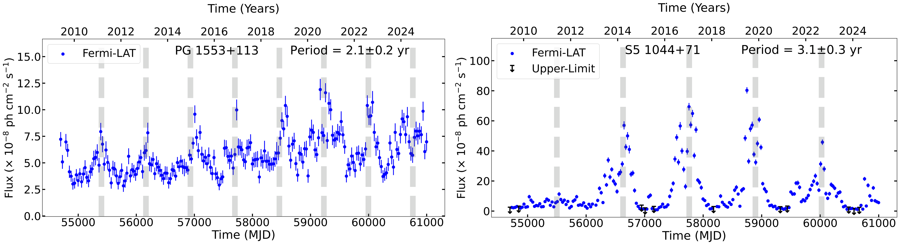
图注：\(\textit{Left}\): Light curve of the blazar PG 1553+113. \(\textit{Right}\): Light curve of the blazars S5 1044+71. The gray vertical bars approximate high-flux periods inferred by the methodology for the given blazar. The width of the gray bars indicates the uncertainty in the period value.
对应解读：对应“建议重点查看的图表”第1项长期 Fermi-LAT 光变曲线，以及第6项旧预测/高通量窗口与新观测对比；也直接支撑关键结果中 PG 1553+113 和 S5 1044+71 是最强两个案例。
入选理由：这张图同时给出 PG 1553+113 和 S5 1044+71 的长期光变曲线，并用灰色竖条标出由周期方法推断的高通量时段及周期不确定性，是判断新增 17 年基线中峰谷是否延续旧相位、是否由少数 flare 主导的最核心图。相比只展示单一方法诊断的图，它最直接连接论文主要天体物理结论。
来源与置信度：\(arxiv_source\)；high；\(arxiv_source\) / main.tex:figure[5]
Fig01
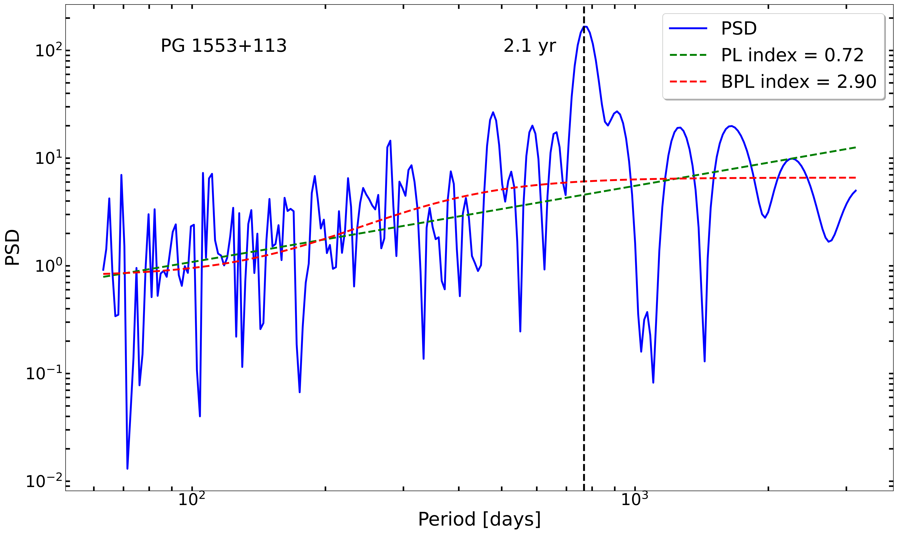
图注：PSD of the PG 1553+113 LC as a function of period. The blue curve shows the PSD, while the green and red dashed curves represent the best-fit PL and BPL models, respectively. The vertical dashed black line marks the dominant peak at 2.1 yr. The fitted spectral indices are reported in the legend.
对应解读：对应“建议重点查看的图表”第2项周期图/功率谱，以及模型拟合段落中关于功率谱斜率、弯折功率谱和低频红噪声的讨论。
入选理由：该图展示 PG 1553+113 光变曲线的 PSD 随周期变化，并叠加简单功率律和弯折功率律最佳拟合模型，且明确标出 2.1 年主峰。它能直接说明候选周期峰与红噪声零假设模型的关系，是理解为何不能把峰值简单解释为真实周期的关键诊断图。
来源与置信度：\(arxiv_source\)；high；\(arxiv_source\) / main.tex:figure[1]
Fig02
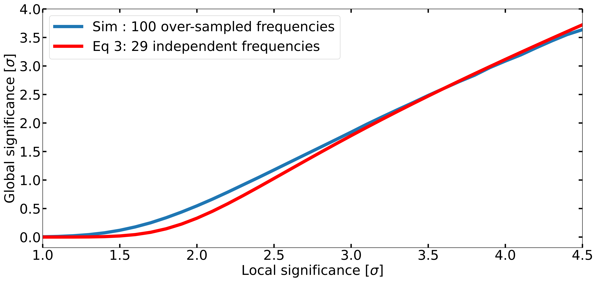
图注：Estimation of the independent frequencies {\(\it\) P} according to the the experimental relationship between local-global significance. {\(\it\) Eq. 3} represents the results obtained by applying Eq. \(\ref{eq:trial}\) for a particular number of independent frequencies, reporting 29. The $P$ is chosen to adjust the test statistics of $\approx$3.5$\sigma$, thereby improving the correction of the most significant blazars listed in Table \(\ref{tab:final_candidates}.\)
对应解读：对应“建议重点查看的图表”第5项模拟零假设下局部/全局显著性区分，以及详细解读中“局部显著性不能等同于发现、全局显著性被试验因子稀释”的段落。
入选理由：该图专门用于估计独立频率数并校正 local-global significance，直接支撑论文最重要的统计结论：即使 PG 1553+113 和 S5 1044+71 有局部超过 3σ 的提示，全局显著性仍会因多重试验显著降低。它比普通光变图更能解释本文结论为何谨慎。
来源与置信度：\(arxiv_source\)；high；\(arxiv_source\) / main.tex:figure[2]
Fig04
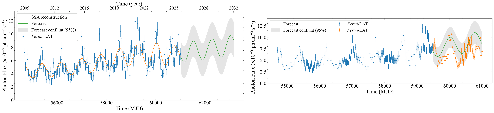
图注：{\(\it\) Top}: SSA-R prediction for the expected emission of PG 1553 over the next 6 yr. {\(\it\) Bottom }: Validation test in which one cycle is removed from the end of the LC, the forecasting is repeated, and the predicted cycle is compared with the observed data.
对应解读：对应“建议重点查看的图表”第4项 SSA/重构分量和第6项预测检验图；也对应关键图表导读中关于预测峰谷是否在新增数据中命中的讨论。
入选理由：图中上半部分给出 PG 1553+113 未来 6 年 SSA-R 预测，下半部分做移除一个周期后的验证检验并与观测比较。它是少数直接检验周期模型预测能力的图，适合说明保留候选是否能通过真正的前瞻式或半前瞻式测试。
来源与置信度：\(arxiv_source\)；high；\(arxiv_source\) / main.tex:figure[4]
Fig08
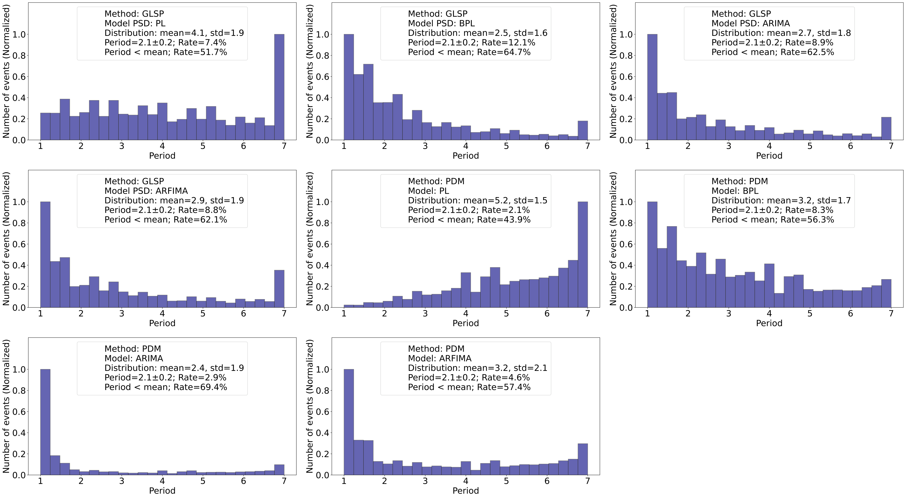
图注：Distribution of periods recovered from artificial LCs generated with four stochastic-noise models: a simple power law (PL), a bending power law (BPL), ARIMA, and ARFIMA. For each surrogate ensemble, we apply the GLSP and PDM and report the mean period and standard deviation of the recovered-period distribution. We also indicate (i) the fraction of surrogates whose recovered period falls within the candidate-period interval of PG 1553+113, 2.1$\pm$0.2 yr, and (ii) the fraction with recovered periods shorter than the ensemble mean. Overall, PL surrogates yield an approximately uniform distribution across the searched range, whereas BPL, ARIMA, and ARFIMA preferentially populate periods $\lesssim$ mean period. The period is in years.
对应解读：对应“建议重点查看的图表”第5项模拟零假设统计分布、第8项稳健性检验，以及模型拟合段落中 PL、BPL、ARIMA、ARFIMA 零假设的比较。
入选理由：该图比较四类随机噪声模型生成的人工光变在 GLSP 和 PDM 下恢复的周期分布，并标出落入 PG 1553+113 候选周期区间的比例。它直接展示不同零假设会如何改变候选周期的偶然出现概率，是评估周期显著性稳健性的核心证据。
来源与置信度：\(arxiv_source\)；high；\(arxiv_source\) / main.tex:figure[8]
Fig11
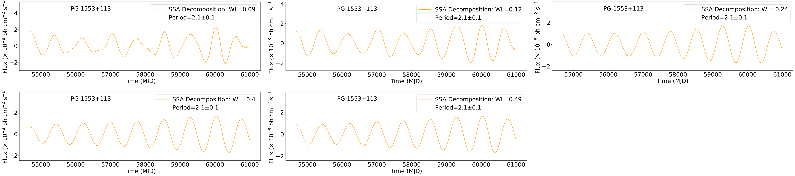
图注：SSA decomposition of the oscillatory component for PG~1553+113, shown for five different window lengths ($WL$): 0.09 and 0.49, corresponding to the limits of the explored range; 0.12 and 0.24, being the optimal $WLs$; and 0.4, the value used to estimate the test statistics reported in Table~\(\ref{tab:periodicity_results}.\) The decomposition varies significantly with $WL$: smaller values enhance high-frequency features relative to the case of $WL=0.49$.
对应解读：对应“建议重点查看的图表”第4项 SSA 分解图，以及关键图表导读中关于振荡成分是否跨越全时间基线、是否依赖分析参数的讨论。
入选理由：该图展示 PG 1553+113 的 SSA 振荡分量在不同窗口长度下的分解结果，能直观看出所谓振荡成分对 SSA 参数选择的敏感性。它有助于判断信号是稳健的长期周期，还是由窗口长度和局部高频结构影响得到的准周期特征。
来源与置信度：\(arxiv_source\)；high；\(arxiv_source\) / main.tex:figure[11]
强相关工作
这篇工作直接处在 Fermi-LAT blazar 周期性研究的后续检验线上。同一类工作包括 PG 1553+113 的多波段准周期报告、对 S5 1044+71 等源的伽马射线周期候选研究，以及 Fermi-LAT 长期光变目录中的系统性变率分析。检索关键词可用“Fermi LAT blazar periodicity”、“PG 1553+113 quasi periodicity”、“S5 1044+71 gamma-ray periodicity”、“red noise false alarm AGN light curves”。
基础方法方面，它与 Lomb-Scargle 周期图、PDM、红噪声模拟、Timmer-Koenig 光变生成、ARIMA/ARFIMA 时间序列建模密切相关。相反观点或张力主要来自早期声称较高显著性的周期候选论文；本文的更长基线结果说明，那些局部显著峰未必是持久物理周期。建议读者同时检索“look-elsewhere effect periodicity AGN”、“trial factor QPO blazar”、“stochastic variability supermassive black hole binary candidates”，以理解为什么从周期候选到双黑洞证据之间还有很长统计距离。
同一事件 / 同类源线索：
相似工作：
基础理论 / 方法工作：
- https://ui.adsabs.harvard.edu/abs/1976Ap%26SS..39..447L/abstract
- https://ui.adsabs.harvard.edu/abs/1982ApJ...263..835S/abstract
- https://ui.adsabs.harvard.edu/abs/1978ApJ...224..953S/abstract
- https://ui.adsabs.harvard.edu/abs/1995A%26A...300..707T/abstract
相反观点 / 张力线索：
5. Line-of-sight magnetic-field propagation effects on axion-like particle constraints from GRB 221009A
- 来源：arXiv / astro-ph.HE
- 链接：https://arxiv.org/abs/2606.15269v1
- 作者：Chengcheng Han, Zhanhong Lei, Jiajie Yang, Shutong Zhao
- 评分：novelty 7/10，importance 8/10，relevance 10/10，final 9.40/10
- 推荐理由：围绕LHAASO观测GRB 221009A的高能光子重新评估ALP约束，重点分析宿主、IGMF和银河磁场传播不确定性；直接关联TeV伽马射线、GRB和新物理约束。
中文题目：视线方向磁场传播效应如何影响用 GRB 221009A 约束轴子样粒子
做了什么：这篇文章重新评估了用 GRB 221009A 的高能伽马射线，尤其是 LHAASO 探测到的甚高能光子，约束轴子样粒子时对宇宙磁场传播模型的依赖。作者把宿主星系、星系际介质和银河系磁场都放进光子–轴子样粒子振荡计算，比较不同磁场强度、相干长度和随机实现下的光子存活概率以及由此得到的 \(m_a-g_{a\gamma}\) 排除区。核心结论是：宿主星系和银河磁场模型的选择通常只带来温和变化，而星系际磁场是主导不确定性；改变其强度、相干尺度或随机结构可以显著移动排除轮廓，甚至产生明显的振荡状结构。
为什么重要：GRB 221009A 是极少数把瞬时宇宙高能光源、超高统计量观测和极长传播路径同时结合起来的事件，因此常被用来检验新物理。但这类约束不是只由粒子物理参数决定，沿途磁场同样进入光子–轴子样粒子混合概率。本文的重要性在于，它把“看见或没看见高能光子能否排除某块 \(m_a-g_{a\gamma}\) 参数空间”这个问题，从理想化磁场假设拉回到真实天体传播环境。
理论 / 观测 / 仪器方法价值：对理论侧，文章提醒使用 GRB 约束轴子样粒子时不能把磁场当作无害背景参数；对观测侧，它说明不同磁场层的贡献和误差预算如何进入排除图；对方法侧，它提供了一个多区域传播建模框架，可用于未来 GRB、AGN flare 或其他瞬变高能源的新物理检验。
为什么应该关注：如果你关心 GRB 221009A 是否真的能给出强 ALP 约束，或者想把 LHAASO、CTA、HAWC 等高能观测用于基本物理，这篇文章值得读。它的主要信息不是“某个参数点被排除”，而是“这些排除有多依赖我们对星系际磁场的无知”。这直接影响未来论文中 ALP 限制曲线的可信度、可复现性和跨事件合并方式。
展开详细解读：文章讲解、背景、理论、重点章节、图表与相关工作
文章详细讲解
科学问题：GRB 221009A，也即俗称 BOAT 的极亮伽马暴，红移约为 \(z\simeq 0.151\)，在 keV 到 TeV 能段都有极高信噪比观测。LHAASO 报告的高能光子使它成为研究光子传播、新物理和宇宙背景辐射吸收的标志性事件。若存在轴子样粒子，光子可在外磁场中与 ALP 相互转化；这种转化会改变高能伽马射线穿过宿主星系、星系际介质和银河系后的存活概率。过去许多 GRB 约束工作会采用较简化的磁场配置，本文要问的是：这些 ALP 排除区到底有多少来自数据本身，有多少来自沿视线磁场假设。
作者怎么做：文章把传播路径分成若干物理区域，包括 GRB 宿主星系磁场、星系际磁场和银河系磁场。对每一区域，作者计算光子–ALP 三态系统的传播，并把常规的 EBL 吸收也纳入光子存活概率。然后在 ALP 质量 \(m_a\) 与光子耦合 \(g_{a\gamma}\) 的二维参数平面上扫描，比较不同磁场模型下的 \(P_{\gamma\to\gamma}(E)\) 以及由此得到的排除轮廓。重点不是重新发现一个全新的统计样本，而是在同一 GRB 221009A 观测事实下，系统改变磁场环境，观察结论如何漂移。
关键结果：作者发现，宿主星系磁场模型和银河磁场模型的变化对最终约束有影响，但通常是次级的；真正能显著改变 ALP 排除区形状和位置的是星系际磁场。星系际磁场的强度 \(B_{\rm IGMF}\)、相干长度 \(l_{\rm coh}\) 和随机域结构都会改变混合相位与有效转化概率，从而在 \(m_a-g_{a\gamma}\) 图上留下可见印记。在某些随机磁场实现中，排除轮廓会出现振荡状或锯齿状结构，这说明它们不是单纯由光谱统计误差控制，而包含强传播模型依赖。
局限和下一步：本文的局限不是计算框架无用，而是所有这类工作共同面对的磁场不可观测性。星系际磁场目前主要由 TeV blazar 级联、CMB、法拉第旋转和大尺度结构模拟间接限制，不同方法给出的允许范围仍宽。下一步需要把磁场不确定性从“几个代表模型”推进到层级贝叶斯或模型平均，联合多个 GRB、AGN flare 和 TeV blazar 视线，并把 LHAASO/CTA 能谱、EBL 模型、内禀谱假设和磁场先验同时纳入统计框架。
关键结果是怎么做出来的
本文最重要的证据链围绕同一个问题展开：在 GRB 221009A 的 LHAASO 高能观测给定时，改变沿视线磁场会怎样改变 \(P_{\gamma\to\gamma}(E)\) 和最终 \(m_a-g_{a\gamma}\) 排除图。样本不是大样本 GRB 目录，而是一个极端明亮的单事件；它的优势是高能端统计显著、传播路径长、对 EBL 吸收和 ALP 再生效应敏感。读者应把本文看作单源强约束的系统误差剖析，而不是人口统计研究。
数据选择上，论文围绕 GRB 221009A 的高能伽马观测建立光子传播模型，核心观测约束来自 LHAASO 看到的甚高能光子与相应能谱/光子存活要求。实际判断一个 ALP 参数点是否被排除，通常需要比较该参数点预测的到达地球光谱与观测允许范围：如果某些 \(m_a\) 和 \(g_{a\gamma}\) 组合会导致过强的振荡、异常透过率或与观测能谱不相容，就会进入排除区。本文强调，预测光谱的差异不只来自 ALP 参数，也来自 \(B_{\rm IGMF}\)、\(l_{\rm coh}\) 和随机磁场方向。
统计或模型比较方面，文章的关键不是给出一个单一“最终真值”排除曲线，而是比较多组传播假设下排除轮廓的稳定性。你应重点看不同磁场设定对应的 \(P_{\gamma\to\gamma}(E)\) 曲线和 \(m_a-g_{a\gamma}\) 平面轮廓：若宿主或银河磁场改变时轮廓只轻微移动，而星系际磁场改变时轮廓大幅重塑，那么主导系统误差就被定位到了 IGMF。若某些曲线出现快速振荡，应检查它们是否对应随机域相位累积，而不是被误读为数据中的真实谱线结构。
支撑结论的图表通常应包括三类：一是不同磁场区域下的光子存活概率随能量变化；二是不同 \(B_{\rm IGMF}\) 和 \(l_{\rm coh}\) 下的排除轮廓；三是随机磁场实现或不同场模型之间的比较。本文最核心的稳健性检验是“固定 ALP 参数扫描磁场”和“固定磁场扫描 ALP 参数”的双向比较。若结论只在一个特定随机种子或一个特定相干长度下出现，就不能称为稳健排除；若在宽范围宿主/银河模型下保持类似而在 IGMF 变化下显著漂移，才说明误差预算定位清楚。
主要系统误差包括星系际磁场先验、EBL 模型、GRB 内禀高能谱、LHAASO 能量重建和有效面积、以及宿主环境的未知磁场尺度。本文的论点是，在这些误差中，IGMF 对 ALP 传播相位和转化概率的影响最容易被低估。对专业读者来说，关键不是记住某条排除线，而是看作者如何证明“磁场不确定性足以改变排除线形状”，以及这种变化是否大于观测统计误差或其他天体物理误差。
展开背景、理论、公式、模型、章节和图表导读
背景知识
轴子样粒子是许多超出标准模型理论中自然出现的轻赝标量粒子。与 QCD 轴子不同，ALP 的质量 \(m_a\) 和光子耦合 \(g_{a\gamma}\) 不必满足固定关系，因此 \(m_a-g_{a\gamma}\) 平面很大一部分需要由实验、太阳轴子搜索、恒星演化、实验室光穿墙以及天体高能光子传播来限制。天体传播的优势是基线极长、磁场尺度巨大，劣势是环境不可控。
GRB 221009A 是近年最特殊的伽马暴之一。它极亮、距离相对不远，并且有从低能伽马到甚高能伽马的多波段观测。对普通 GRB 物理而言，它用于研究喷流结构、余辉动力学、辐射机制和中心引擎；对新物理而言，它提供了一个高能光子在宇宙尺度传播的实验。尤其在 TeV 能段，EBL 吸收已经很强，任何改变光子存活概率的机制都会被放大。
光子–ALP 振荡的历史可追溯到外磁场中混合传播的经典理论。基本想法类似中微子振荡，但混合项来自 \(g_{a\gamma}a\mathbf{E}\cdot\mathbf{B}\)，只有与光子偏振方向相匹配的横向磁场参与混合。在高能天体应用中，人们常利用 AGN、blazar、星系团、银河磁场或 GRB 来寻找光谱不规则、透明度异常或偏振特征。
为什么现在值得重新看？因为 GRB 221009A 的数据质量和高能覆盖让它很容易被用于给出“强限制”，而强限制往往对隐含先验更敏感。星系际磁场是宇宙磁学中最不确定的量之一，其强度、相干尺度、填充因子和与大尺度结构的相关性都没有精确测定。若在这种情况下给出单条排除曲线，读者容易误以为限制主要由观测决定，而忽略传播模型。
该领域常见误区有三个。第一，把“ALP 可以增加宇宙透明度”简单理解为总会增加光子数；实际上混合会随能量和磁场相位产生振荡，既可能增强也可能削弱某些能段的光子存活率。第二，把银河磁场当成唯一重要磁场；对短距离源或某些参数区这可能近似成立，但对 GRB 221009A 这样的宇宙距离源，IGMF 的相位累积可能主导。第三，把排除轮廓的锯齿结构当成高精度特征；许多细结构可能只是随机磁场实现的产物。
基础理论 / 方法脉络
物理图像从一个简单事实开始：ALP 与两个光子耦合，因此在外部磁场存在时，一个传播中的高能光子可以把外磁场看成“虚光子背景”，转化为 ALP；ALP 也可以在之后的磁场区转回光子。由于 ALP 不受 EBL 吸收，光子到 ALP 再到光子的通道会改变宇宙高能伽马射线的有效透明度。这个效应的大小取决于 \(g_{a\gamma}\)、\(m_a\)、光子能量 \(E\)、等离子体频率 \(\omega_{\rm pl}\)、横向磁场 \(B_T\) 和传播距离。
本文的传播模型可理解为多层介质问题：光子从 GRB 宿主区出发，进入星系际空间，最后穿过银河系到达探测器。每一层有不同的 \(B_T\)、相干长度和电子密度；星系际磁场还可能被建模为许多随机取向的磁场域。由于混合矩阵在不同域中改变，最终光子存活概率不是各层概率简单相乘，而是密度矩阵或传输矩阵的有序乘积。
观测上，LHAASO 给出的高能光子能谱或光子事件约束，需要与源内禀谱和传播衰减一起比较。没有 ALP 时，观测通量大致是内禀通量乘以 \(\exp[-\tau_{\rm EBL}(E,z)]\)。有 ALP 时，这个指数吸收被替换为更一般的 \(P_{\gamma\to\gamma}(E)\)，其中同时包含 EBL 吸收和光子–ALP 转化/再转化。本文关注的是，不同磁场模型如何改变这个 \(P_{\gamma\to\gamma}(E)\)。
主要退化关系来自两个方面。第一，ALP 参数与磁场参数退化：增大 \(g_{a\gamma}\) 和增大 \(B_T\) 都可增强混合，因此仅凭单源光谱很难区分。第二，传播效应与内禀谱退化：若观测到某种谱形弯曲，它可能来自 ALP 振荡，也可能来自源物理、EBL 模型、仪器能量响应或统计涨落。本文通过固定事件、比较多种磁场假设，突出其中磁场不确定性对约束的影响。
系统误差的核心在星系际磁场。其强度可能非常弱，也可能在丝状结构或团簇周围增强；相干长度可能从远小于 Mpc 到 Mpc 量级；方向可近似随机，也可能与宇宙大尺度结构相关。这些差别会改变振荡长度与磁场域长度之间的相对关系，进而改变能量依赖结构。
公式与推导
第一步是写出 ALP 与电磁场的相互作用。低能有效拉氏量通常包含
这里 \(a\) 是 ALP 场，\(g_{a\gamma}\) 是光子耦合常数，\(F_{\mu\nu}\) 和 \(\tilde{F}^{\mu\nu}\) 是电磁场张量及其对偶。只有外磁场中与传播方向垂直的分量 \(B_T\) 参与混合。
第二步，把传播写成类薛定谔方程。对沿 \(s\) 方向传播、能量为 \(E\) 的态矢量 \(\Psi=(A_1,A_2,a)^T\)，有
\(A_1\) 和 \(A_2\) 是两个光子偏振态，\(\mathcal{M}\) 是混合矩阵。去掉整体相位 \(E\) 后，观测概率由 \(\mathcal{M}\) 的本征值差决定。
第三步，在单个均匀磁场域中，若只考虑与 \(B_T\) 平行的光子偏振 \(A_\parallel\)，混合矩阵可简化为
其中 \(\Delta_{a\gamma}=g_{a\gamma}B_T/2\)，\(\Delta_a=-m_a^2/(2E)\)，\(\Delta_\parallel\) 包含等离子体项、QED 真空双折射和吸收项。对 GRB 传播，常需把 EBL 吸收写成虚部贡献。
第四步，等离子体给光子一个有效质量，其贡献常写为
这里 \(n_e\) 是自由电子数密度，\(\alpha\) 是精细结构常数，\(m_e\) 是电子质量。该项决定低能端混合是否被等离子体效应抑制。
第五步，单域内的混合角满足
振荡波数为
当 \(|\Delta_\parallel-\Delta_a|\lesssim 2\Delta_{a\gamma}\) 时进入强混合，概率对 \(m_a\) 和介质项的敏感性降低。
第六步，均匀域长度为 \(L\) 时的光子到 ALP 转化概率近似为
这条公式展示了为什么相干长度 \(l_{\rm coh}\) 重要：若磁场方向在一个振荡周期内频繁变化，相位累积会被重置；若多个域相干叠加，则可能出现强能量振荡。
第七步，把 EBL 吸收纳入光子通道，可用光深 \(\tau_{\rm EBL}(E,z)\) 表示无 ALP 情况下的透过率
有 ALP 时，\(P_{\gamma\to\gamma}(E)\) 不再只是指数，而是由含吸收的传播矩阵给出。
第八步，多磁场域传播写成有序乘积
其中 \(\mathcal{T}_k\) 是第 \(k\) 个磁场域的传输矩阵。随机 IGMF 的不同实现对应不同的 \(B_k\) 方向和相干长度序列，因此会导致不同排除轮廓。
第九步，观测通量可写为
这里 \(\Phi_{\rm int}\) 是 GRB 内禀通量，\(\mathbf{B}\) 表示宿主、星系际和银河磁场模型的集合。本文比较的正是同一 \((m_a,g_{a\gamma})\) 在不同 \(\mathbf{B}\) 下给出的 \(\Phi_{\rm obs}\) 差异。
第十步，若用似然评估参数点，可写成示意形式
其中 \(F_i\) 和 \(\sigma_i\) 是第 \(i\) 个能量 bin 的观测通量及误差，\(\boldsymbol{\eta}\) 表示内禀谱、EBL 或仪器响应等 nuisance 参数，\(\Pi\) 是先验或惩罚项。排除区实质上来自不同 \((m_a,g_{a\gamma})\) 下似然或检验统计量的变化；本文强调 (
\(\mathbf{B}\)) 的先验会强烈影响这一结果。
模型拟合 / 应用方法
这类分析的拟合对象不是直接“拟合 ALP 粒子”，而是拟合或检验一个包含源内禀谱、EBL 吸收、磁场传播和仪器响应的前向模型。模型参数可分为物理参数 \((m_a,g_{a\gamma})\)、传播 nuisance 参数如 \(B_{\rm IGMF}\) 和 \(l_{\rm coh}\)、源谱参数如谱指数和截断能量，以及观测响应参数。本文主要聚焦传播 nuisance 参数如何改变 \((m_a,g_{a\gamma})\) 的排除。
似然通常可以建立在能谱 bin 的通量残差、事件数泊松统计或未分箱事件概率上。若使用 binned flux，残差应看观测点与 \(\Phi_{\rm int}P_{\gamma\to\gamma}\) 的差异；若使用事件数，应把有效面积、曝光时间、能量分辨率和背景模型卷积进去。GRB 221009A 的高能观测特别敏感于能量重建和时间窗选择，因为余辉快速演化会把时间平均谱与瞬时谱混合。
参数退化非常关键。\(g_{a\gamma}B_T\) 控制混合强度，因此较弱耦合加较强磁场，和较强耦合加较弱磁场，可能在某些能段给出相似效应。\(m_a\) 与 \(n_e\) 通过 \(m_a^2-\omega_{\rm pl}^2\) 进入相位差，也可在低能或中能段产生退化。内禀谱的曲率、EBL 模型差异和 ALP 振荡产生的谱不规则也可能相互混淆。
残差诊断应优先检查能量相关结构。ALP 引起的特征往往不是单调软化或硬化，而是随能量振荡或局部起伏；如果模型只在一两个能量 bin 改善，而相邻 bin 残差恶化，就应警惕过拟合随机噪声或磁场随机实现。相反，如果多个独立能段、多个时间窗或多个源都支持同一 \((m_a,g_{a\gamma})\) 区域，可信度会显著提高。
本文的实际应用价值在于误差预算。与其给出一条看似精确的排除线，作者展示了磁场先验如何把排除线变宽、移动或产生细结构。未来更合理的做法可能是对 \(B_{\rm IGMF}\)、\(l_{\rm coh}\) 和随机实现做边缘化，报告磁场模型平均后的后验或保守包络，而不是只给出单一 benchmark 场模型下的曲线。
重点章节 / 结果段落怎么读
数据/源与物理动机部分：读者应先确认文章如何使用 GRB 221009A 的 LHAASO 高能观测，以及作者把哪些观测事实当作约束输入。关键是理解本文不是重新构建 GRB 余辉模型，而是检验传播效应如何影响 ALP 限制。
传播模型部分：这是全文最需要细读的部分。应检查作者如何设置宿主星系磁场、星系际磁场和银河磁场；每个区域的场强、相干尺度、电子密度、路径长度以及随机化方式是什么。尤其要看 IGMF 的 benchmark 选择是否覆盖了当前观测允许范围。
光子存活概率计算部分：这里应跟踪 \(P_{\gamma\to\gamma}(E)\) 如何从传输矩阵得到，EBL 吸收如何加入，以及不同磁场区域是否按正确顺序串联。对专业读者而言，判断结果可信度的关键是传播矩阵实现、随机磁场平均和能量网格是否足够细。
ALP 排除轮廓部分：应把不同图中的 \(m_a-g_{a\gamma}\) 曲线放在一起看，而不是只看最强的一条。重点比较宿主模型变化、银河模型变化和 IGMF 变化带来的差异幅度。若 IGMF 改变造成的位移超过其他模型变化，就支持作者的主结论。
讨论与稳健性部分：读者应关注作者如何解释振荡状轮廓、是否讨论随机场 realization dependence、是否说明 EBL 和内禀谱假设的影响。若文章附录给出额外磁场模型或随机种子测试，应优先阅读，因为这些内容直接决定“IGMF 是主导不确定性”是否稳健。
建议重点查看的图表
-
光子存活概率 \(P_{\gamma\to\gamma}(E)\) 对能量的曲线：看不同磁场模型下曲线是否只整体平移，还是出现相位不同的振荡；高能端差异最能说明传播效应。
-
宿主星系磁场模型比较图：看改变宿主场强或尺度后排除轮廓移动有多大，判断宿主区是否真的次要。
-
银河磁场模型比较图：看不同银河磁场模型在 \(m_a-g_{a\gamma}\) 平面上的差异，特别是低质量强混合区是否稳定。
-
IGMF 场强扫描图：看 \(B_{\rm IGMF}\) 增减时排除区是否系统性扩大、缩小或重塑；这是本文主结论的核心证据。
-
IGMF 相干长度扫描图：看 \(l_{\rm coh}\) 改变时振荡结构如何变化，注意不要把随机相位造成的细纹误读为高精度物理边界。
-
随机磁场实现或多 realization 包络图：看同一统计假设下不同随机种子产生的散布，这能直接衡量排除线的模型不确定性。
-
与既有限制对比的 \(m_a-g_{a\gamma}\) 汇总图：看本文约束相对 CAST、HB stars、SN1987A、AGN 或其他 GRB 约束处于什么位置，并注意这些外部限制的假设差别。
关键图表逐图导读
图 1：通常应是 GRB 221009A 视线传播环境或磁场区域示意图。横向可理解为从源到地球的距离或传播阶段，图中标出宿主星系、IGMF 和银河系。读图时不要把各区域当作等权重；对 ALP 混合而言，关键是 \(g_{a\gamma}B_TL\) 和相位累积，而不是区域名称本身。
图 2：若展示 \(P_{\gamma\to\gamma}(E)\)，横轴应为光子能量，纵轴为存活概率或透过率。不同颜色/线型代表不同磁场模型或 ALP 参数。主要看 TeV 能段是否出现明显振荡、增强或抑制。读图陷阱是把尖锐振荡当成仪器可分辨特征；实际能量分辨率和时间平均会平滑部分结构。
图 3：宿主星系磁场对排除区的影响图。横轴通常为 \(m_a\)，纵轴为 \(g_{a\gamma}\)，曲线包围或标出被排除区域。若多条宿主模型曲线相互接近，说明宿主场不是主要误差源。需要注意坐标多为对数坐标，小的视觉位移可能对应数量级变化，也可能只是线宽内变化。
图 4：银河磁场模型比较图。不同银河模型的差异主要影响最后的 ALP 到光子再转化概率。若轮廓变化小，说明对 GRB 221009A 这条视线而言，银河再转化不是误差预算的瓶颈。读者应留意源在天球上的方向，因为银河磁场贡献高度依赖视线。
图 5：IGMF 场强或相干长度扫描图。这应是本文最关键图之一。横轴与纵轴仍为 \(m_a\) 和 \(g_{a\gamma}\)，不同线型代表不同 \(B_{\rm IGMF}\) 或 \(l_{\rm coh}\)。若轮廓发生大幅移动或出现锯齿状振荡，就直接支持“IGMF 主导不确定性”。陷阱是只引用最强约束曲线，而忽略同样合理 IGMF 假设下的较弱约束。
图 6：随机 realization 或不确定性带图。若有阴影带，纵向宽度代表磁场随机性导致的约束散布；若有多条细线，代表不同随机种子。专业读者应看包络宽度是否超过统计置信区间。若超过，则单条排除曲线的精确边界没有太大物理意义。
图 7：与外部 ALP 约束的汇总图。应检查本文 GRB 约束与 CAST、恒星演化、AGN、超新星或其他 GRB 的相对位置。读图陷阱是把不同观测的排除区直接相加；很多限制依赖不同磁场、源谱和统计假设，严格合并需要统一似然或至少统一先验。
论文原图 / 可嵌入图片
Fig07
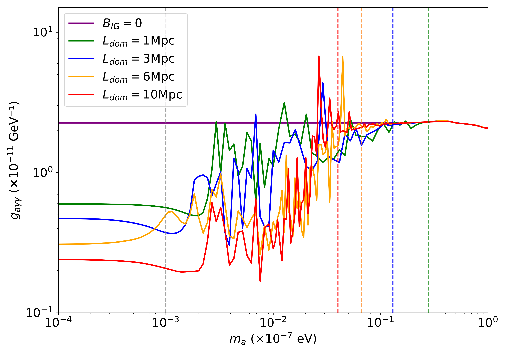
图注：The 95\% C.L. exclusion limits from GRB~221009A without the IGMF ($B_{\rm IG}=0$) and with the IGMF included for different magnetic-domain lengths $L_{\rm dom}$, with filling factor fixed to $f=1$. The region above each curve is excluded. The colored dashed lines indicate the onset of significant IGMF-induced oscillatory behavior for each value of $L_{\rm dom}$, while the gray dashed line marks the approximate low-mass end of the oscillatory region.
对应解读：“建议重点查看的图表”第5项 IGMF 相干长度扫描图；“关键图表逐图导读”图5；模型拟合段落中关于传播 nuisance 参数 \(l_coh/L_dom\) 改变排除轮廓和振荡结构的讨论。
入选理由：这张图直接比较不同磁场域长度 \(L_dom\) 下的 95% C.L. 排除线，并标出 IGMF 诱导振荡显著出现的区域，是支撑“IGMF 相干尺度会重塑 m_a-g_{aγ} 排除区、产生振荡细结构”的核心证据，比基础公式示意图更贴近日报主结论。
来源与置信度：\(arxiv_source\)；high；\(arxiv_source\) / new.tex:figure[7]
Fig06
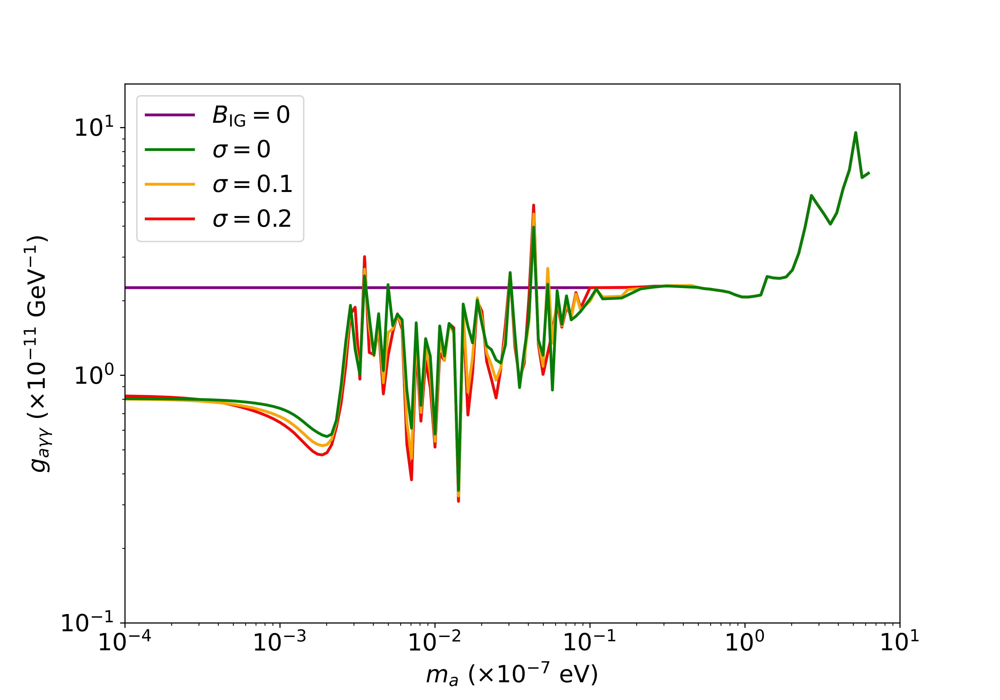
图注：The 95\% C.L. exclusion limits from GRB~221009A, obtained without the IGMF ($B_{\rm IG}=0$) and after including the IGMF modeled with the DLSME prescription for different values of the smoothing parameter $\sigma$. The region above each curve is excluded. The IGMF setup uses a domain length $L_{\rm dom}=1\,\mathrm{Mpc}$ and filling factor $f=1$.
对应解读：“建议重点查看的图表”第4项 IGMF 场强/模型扫描图与第6项随机磁场实现或包络图；“关键图表逐图导读”图5、图6；误差预算段落中关于磁场先验导致排除线移动、变宽或出现细结构的讨论。
入选理由：该图把无 IGMF 与采用 DLSME 随机磁场处方、不同平滑参数 σ 的排除轮廓放在同一 m_a-g_{aγ} 平面比较，最能显示星系际磁场建模会显著改变约束形状和强度，是本文主结论的直接排除图证据。
来源与置信度：\(arxiv_source\)；high；\(arxiv_source\) / new.tex:figure[6]
Fig05
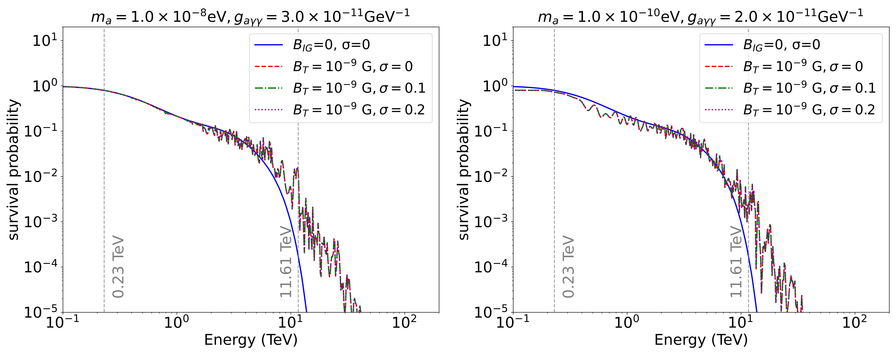
图注：Photon survival probability for GRB~221009A, comparing the conventional EBL attenuated case ($B_{\rm IG}=0$) with the results obtained after including the IGMF modeled with the DLSME prescription for different values of the smoothing parameter $\sigma$. The IGMF has $B_T=10^{-9}\,\mathrm{G}$, $L_{\rm dom}=1\,\mathrm{Mpc}$, and filling factor $f=1$. The left panel uses $m_a=1.0\times10^{-8}\,\mathrm{eV}$ and $g_{a\gamma\gamma}=3.0\times10^{-11}\,\mathrm{GeV}^{-1}$, while the right panel uses $m_a=1.0\times10^{-10}\,\mathrm{eV}$ and $g_{a\gamma\gamma}=2.0\times10^{-11}\,\mathrm{GeV}^{-1}$.
对应解读：“建议重点查看的图表”第1项 光子存活概率 \(P_{γ→γ}(E)\) 对能量的曲线；“关键图表逐图导读”图2；模型拟合段落中关于能量相关残差、ALP 振荡特征与 EBL 吸收基线的讨论。
入选理由：这是候选图中唯一明确给出 GRB 221009A 光子存活概率随能量变化、并比较 EBL-only 与不同 IGMF 平滑参数的图，可直接帮助读者判断高能端振荡、增强或抑制是否来自传播效应。
来源与置信度：\(arxiv_source\)；high；\(arxiv_source\) / new.tex:figure[5]
Fig04
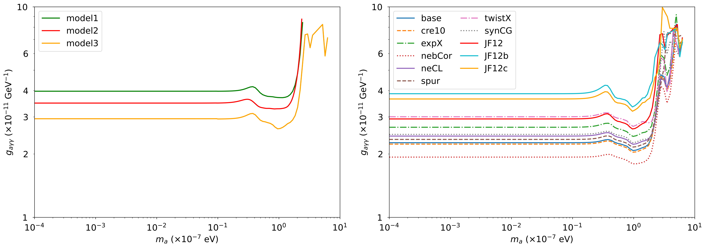
图注：\(\textbf{Top:}\) The 95\% C.L. exclusion limits from GRB~221009A obtained with different HGMF models, with the MWMF model fixed to JF12. \(\textbf{Bottom:}\) The 95\% C.L. exclusion limits obtained with different MWMF models, with the HGMF model fixed to Model~3. In both panels, the region above each curve is excluded.
对应解读：“建议重点查看的图表”第2项宿主星系磁场模型比较图和第3项银河磁场模型比较图；“关键图表逐图导读”图3、图4。
入选理由：这张图同时给出不同宿主星系磁场模型和不同银河磁场模型下的 95% C.L. 排除线，是判断 HGMF 与 MWMF 影响是否次级的关键对照图；它能与 Fig06、Fig07 的 IGMF 敏感性形成清晰比较。
来源与置信度：\(arxiv_source\)；high；\(arxiv_source\) / new.tex:figure[4]
Fig09
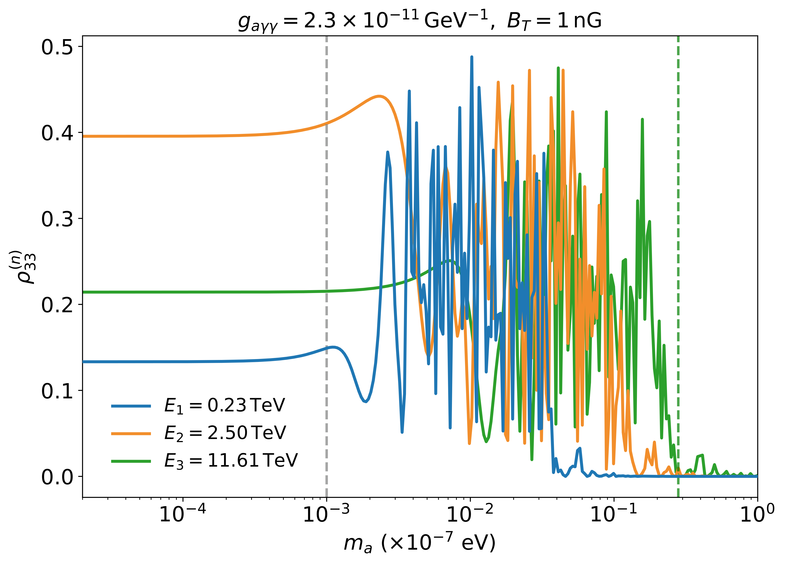
图注：Dependence of the ALP component $\rho_{33}^{(n)}$ on the ALP mass $m_a$ after propagation through the IGMF, for different photon energies $E$. The benchmark parameters are $L_{\rm dom}=1\,\mathrm{Mpc}$, $B_T=1\,\mathrm{nG}$, $g_{a\gamma\gamma}=2.3\times10^{-11}\,\mathrm{GeV}^{-1}$, $n_e\sim10^{-7}\,\mathrm{cm}^{-3}$, and $\rho_0=\mathrm{diag}(1/2,1/2,0)$. The right green vertical dashed line marks the approximate transition from the large-mass region to the intermediate-mass region, while the left gray vertical dashed line marks the approximate transition from the intermediate-mass region to the small-mass region.
对应解读：模型拟合段落中关于 \(m_a\)、能量、相位累积和 IGMF 传播退化的讨论；“建议重点查看的图表”第5项中关于振荡结构来源的物理诊断。
入选理由：该图展示穿过 IGMF 后 ALP 分量 ρ33 随 \(m_a\) 的变化，并按不同能量区分，有助于解释为什么排除轮廓在特定质量区间出现振荡或转折，是连接传播物理与排除线形态的诊断图。
来源与置信度：\(arxiv_source\)；high；\(arxiv_source\) / new.tex:figure[9]
Fig01
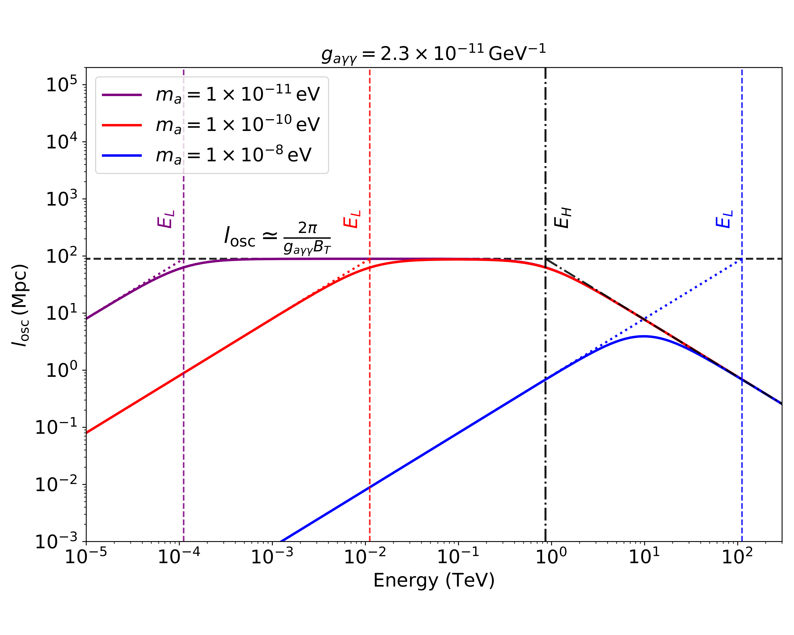
图注：Energy dependence of the single-domain oscillation length $l_{\rm osc}(E)$ for three representative ALP masses, $m_a=1\times10^{-11}\,\mathrm{eV}$, $1\times10^{-10}\,\mathrm{eV}$, and $1\times10^{-8}\,\mathrm{eV}$. The benchmark parameters are $g_{a\gamma\gamma}=2.3\times10^{-11}\,\mathrm{GeV}^{-1}$, $B_T=1\,\mathrm{nG}$, and $n_e\sim10^{-7}\,\mathrm{cm}^{-3}$. The vertical dashed lines mark $E_H$ and the corresponding $E_L$ for each ALP mass, while the horizontal, black oblique, and colored oblique dashed lines indicate the strong-mixing, high-energy weak-mixing, and low-energy weak-mixing approximations, respectively.
对应解读：模型拟合段落中关于强混合、高能弱混合、低能弱混合近似以及 \(m_a\) 与相位差退化的基础说明。
入选理由：虽然不是直接的排除轮廓图，但它给出单域振荡长度 \(l_osc(E)\) 与 \(E_H\)、\(E_L\) 转换尺度，可为理解 Fig05–Fig07 中能量依赖振荡和不同质量区间的约束变化提供必要物理背景。
来源与置信度：\(arxiv_source\)；high；\(arxiv_source\) / new.tex:figure[1]
强相关工作
同一事件背景方面，GRB 221009A 已有大量同事件论文，涉及 prompt emission、余辉、LHAASO 甚高能探测、多波段建模、喷流结构和 EBL/新物理解释。本文属于“同一事件的新物理传播约束再评估”，不是源物理建模论文。建议检索关键词包括 “GRB 221009A LHAASO TeV afterglow”, “GRB 221009A axion-like particles”, “GRB 221009A EBL attenuation”, “BOAT gamma-ray burst multiwavelength”。
同类方法方面，早期光子–ALP 振荡理论来自外磁场混合传播，后续广泛用于 AGN/blazar 透明度异常、星系团磁场中的光谱不规则、银河磁场再转化和 GRB 高能光子。本文与这些工作的一致点是都利用长基线高能光子寻找 ALP；不同点是它把多层视线磁场特别是 IGMF 的不确定性作为主角。建议检索 “photon ALP mixing extragalactic magnetic field”, “ALP gamma-ray transparency”, “axion-like particle constraints gamma-ray bursts”。
相反观点或张力主要来自两类：一类认为 GRB 221009A 的高能光子可给出相当强的新物理限制，另一类强调内禀谱、EBL、仪器响应和磁场不确定性会削弱这种结论。本文站在后者更谨慎的一侧：它并不否认 GRB 221009A 的价值，而是说明如果不对 IGMF 做系统边缘化，排除区可能显得过于确定。
同一事件 / 同类源线索：
- https://arxiv.org/abs/2606.15269
- https://arxiv.org/pdf/2606.15269
- https://gcn.gsfc.nasa.gov/other/221009A.gcn3
相似工作：
基础理论 / 方法工作：
- https://doi.org/10.1103/PhysRevD.37.1237
- https://arxiv.org/abs/1303.7121
- https://doi.org/10.1146/annurev.nucl.57.090506.123020
相反观点 / 张力线索：
（未提供）
6. Short Spike, Long Story: Episode-Dependent Shifts of Long-Duration Type-I GRBs on $E_{\rm p,z}$--$E_{\rm iso}$ Plane
- 来源：arXiv / astro-ph.HE
- 链接：https://arxiv.org/abs/2606.15098v1
- 作者：Ya-Hui Jiang, Run-Chao Chen, Zhen-Yu Yan, Kamil Nadaf, Xiao-Hong Zhao, Bin-Bin Zhang
- 评分：novelty 7/10，importance 7/10，relevance 9/10，final 8.70/10
- 推荐理由：长时标Type-I/并合候选GRB的分段Amati关系分析，直接涉及GRB分类和 prompt emission 物理；样本较小但对避免误分类有实用价值。
中文题目：短尖峰，长故事：长持续时标 I 型伽马暴在 \(E_{\rm p,z}\)–\(E_{\rm iso}\) 平面上的分段偏移
做了什么：这篇文章研究 8 个长持续时标 I 型伽马暴或并合候选体，把 prompt 辐射拆成“初始短硬尖峰”和“后续软的 extended emission”两段，分别放到静止系峰值能量 \(E_{\rm p,z}\) 与各向同性等效能量 \(E_{\rm iso}\) 的 Amati 平面上比较。核心结论是：初始尖峰通常落在或接近经验上的 I 型区域，符合致密星并合的短硬成分；但 extended emission 系统性地向 II 型、即坍缩星长暴常见区域移动。如果只看到或只分析 extended emission，Amati 关系可能把并合起源事件误判成坍缩星起源事件。
为什么重要：传统用 \(T_{90}\) 的 \(2\,\mathrm{s}\) 边界区分短暴和长暴已经不够用，尤其是 GRB 211211A、GRB 230307A 这类“长时间、并合起源”事件出现后，分类问题直接影响我们如何估计并合率、千新星关联率和中心引擎物理。本文的重要性在于它指出：不仅总持续时间会误导，连常用的 \(E_{\rm p,z}\)–\(E_{\rm iso}\) 经验诊断也会随辐射阶段改变而给出不同物理暗示。
理论 / 观测 / 仪器方法价值：对理论而言，本文把长持续 I 型暴的 prompt 辐射分成尖峰和延展辐射两类物理成分，提示中心引擎、喷流重启、磁化程度或后续吸积可能随时间演化。对观测而言，它给出一个实用警告：做 Amati 平面分类时不能只用全时段积分谱，必须做分段和时间分辨谱。对仪器和方法而言，宽能段覆盖、触发前后完整数据和弱短尖峰识别能力会直接决定这类事件的物理归类。
为什么应该关注：如果你关心 GRB 族群、并合电磁对应体、千新星搜寻或用 GRB 经验关系做分类，这篇文章值得看，因为它说明同一个事件的不同时间段可以在经验分类图上“换身份”。这会影响样本清洗、率估计、后随观测触发策略，也会影响对未来 SVOM、Einstein Probe、Fermi、Swift、GECAM 等任务数据的解释。
展开详细解读：文章讲解、背景、理论、重点章节、图表与相关工作
文章详细讲解
科学问题：这篇文章针对的是一个近年来越来越尖锐的问题：长持续时标的 prompt 伽马辐射是否一定意味着大质量恒星坍缩，即传统 II 型或 collapsar 起源？已知一些并合候选事件可以有一个短而硬的初始 spike，随后接上几十秒到上百秒的软 extended emission，因此仅凭 \(T_{90}\) 会把它们放进“长暴”篮子。作者进一步追问：如果不用 \(T_{90}\)，而用常见的 Amati 关系，即静止系谱峰 \(E_{\rm p,z}\) 与各向同性等效能量 \(E_{\rm iso}\) 的位置，是否就能稳定地区分物理起源？
作者怎么做：文章选取 8 个长持续 I 型 GRB 或并合候选体，并把 prompt 光变曲线按物理上可辨认的 episode 拆分为初始短硬尖峰和后续 extended emission。对每一段分别做谱拟合，得到观测系峰值能量、能量通量或 fluence，再利用红移进行静止系修正和能量积分，计算 \(E_{\rm p,z}\) 与 \(E_{\rm iso}\)。随后作者把每个 episode 放到 \(E_{\rm p,z}\)–\(E_{\rm iso}\) 平面上，与经验上的 I 型、II 型分布或边界进行比较，并用时间分辨谱追踪事件在该平面上的轨迹。
关键结果：作者发现，初始短硬 spike 通常位于或接近 I 型 GRB 的经验区域，这与致密星并合产生的短硬 prompt 成分相符；而 extended emission 的点则系统性地偏向 II 型长暴区域。这个结果不是简单的“总能量变大所以更像长暴”，而是 episode-dependent 的位置迁移：同一个物理事件在不同时间段给出不同的经验分类信号。时间分辨谱进一步支持这种迁移，不过不同暴的迁移幅度和路径不完全相同，说明中心引擎或外流性质可能有显著多样性。
局限和下一步：样本只有 8 个，且都属于观测上已经被注意到的特殊长持续 I 型或候选体，因此不能直接代表全部并合 GRB。分段边界、弱 spike 的识别、仪器能段限制、谱模型选择、红移和宽能段外推都会影响 \(E_{\rm p,z}\) 与 \(E_{\rm iso}\) 的估计。下一步需要更系统地用统一管线处理 Fermi、Swift、GECAM、Konus-Wind 等多仪器样本，并把 prompt 诊断与宿主星系、超新星缺失、千新星候选、余辉环境密度和引力波可探测性结合起来。
关键结果是怎么做出来的
本文最重要的证据链从样本定义开始。作者没有讨论一般长暴全集，而是聚焦 8 个已经被认为是长持续 I 型 GRB 或并合候选体的事件。这一点很关键：这些对象的物理起源并非单靠 \(T_{90}\) 判断，而通常还涉及短硬 spike、extended emission、宿主环境、是否缺少明亮超新星、是否有千新星候选等信息。作者的目标不是重新建立全体 GRB 分类，而是检验在这些“已知麻烦样本”中，Amati 平面是否会随 episode 改变分类暗示。
数据处理的关键是分段。每个 burst 至少被拆成初始 spike 与 extended emission 两个时间窗；对每个时间窗分别做谱分析，而不是只用全时段 time-integrated spectrum。这样得到的 \(E_{\rm p,z}\) 与 \(E_{\rm iso}\) 是 episode-level 的量。读者应注意分段不是纯数学操作，而依赖光变曲线的形态、硬度演化和仪器触发窗口；如果 spike 很弱、落在触发前、或峰值能量超出仪器灵敏能段，后续结论会明显受影响。
统计判断主要体现在把分段结果与经验的 I 型和 II 型分布区域比较。文章的核心不是声称某个单点有独立的高显著性发现，而是样本中反复出现同一方向的系统性迁移：spike 点靠近 I 型区域，extended emission 点靠近 II 型区域。支撑这个结论的图应包括 \(E_{\rm p,z}\)–\(E_{\rm iso}\) 平面上的分段点、误差条、经验关系带，以及每个 burst 从 spike 到 extended emission 的连线或轨迹。
模型比较上，读者要看作者是否对谱模型做了统一选择，例如 Band、cutoff power law 或 power law；以及 \(E_{\rm p}\) 是否在仪器能段内被真正约束，而不是由外推给出。若 extended emission 的谱较软、信噪比较低，\(E_{\rm p}\) 与 fluence 的协方差会变大，这会让点在 Amati 平面上的误差椭圆拉长。稳健性检验应关注换谱模型、换时间窗、使用不同能量积分范围后，episode-dependent shift 是否仍存在。
主要系统误差包括仪器响应矩阵、背景拟合、跨仪器归一化、红移不确定性、能段外 bolometric correction，以及样本选择偏差。尤其是“只选到了有明显 extended emission 的并合候选体”会强化这类迁移的可见性。尽管如此，本文的结论对实际观测分类仍很强：如果一个事件的短硬 spike 没被触发系统捕捉到，剩下的 extended emission 在 Amati 平面上可能看起来非常像 II 型长暴，这是一种真实的数据分析风险，而不是纯理论可能性。
展开背景、理论、公式、模型、章节和图表导读
背景知识
GRB 的传统分类源自 BATSE 时代的持续时间分布：短暴通常定义为 \(T_{90}<2\,\mathrm{s}\)，长暴为 \(T_{90}>2\,\mathrm{s}\)。后来人们逐渐认识到，这个边界是观测能段、探测器灵敏度和样本统计共同塑造的经验分界，不是一个严格的物理分界。物理上更有意义的分类是 I 型与 II 型：前者通常对应致密星并合，后者通常对应大质量恒星坍缩。
问题在于，持续时间和起源并不一一对应。短时标事件可以来自坍缩星的短 prompt 阶段，长时标事件也可以来自并合后的长期中心引擎活动。尤其是带 extended emission 的短暴，常表现为一个短硬 spike 后接一个较软、较弱、持续更久的辐射尾。若只用 \(T_{90}\)，它们会被放进长暴样本；若只看初始 spike，又会被归为短暴。
Amati 关系提供了另一类经验诊断。经典长暴在 \(E_{\rm p,z}\)–\(E_{\rm iso}\) 平面上呈现较紧的相关性，而许多短暴偏离该关系，表现为给定 \(E_{\rm iso}\) 下 \(E_{\rm p,z}\) 更高，或给定 \(E_{\rm p,z}\) 下能量较低。因此，Amati 平面常被用作 GRB 物理分类的辅助工具。但这篇文章提醒我们：如果一个 burst 内部有多个辐射 episode，不同 episode 的 Amati 位置可能对应不同的经验族群。
现在重新看这个问题的原因，是近年多个长持续并合候选体改变了大家对 GRB 起源的直觉。GRB 211211A、GRB 230307A 等事件让“长暴等于坍缩星”的说法明显站不住脚。未来更多宽视场高能探测器和快速光学红外随访会发现类似事件，因此需要在 prompt 分类阶段就避免系统性误判。
该领域常见误区包括：把 \(T_{90}\) 当成物理时钟；把 Amati 关系当成起源判据而不是经验相关；忽略探测器能段对 \(E_{\rm p}\) 的选择效应；把全时段积分谱看成一个单一区域或单一引擎状态的平均。本文的核心贡献正是拆开这些平均量，说明一个长持续 I 型 GRB 内部可以同时携带“并合式 spike”和“长暴式 extended emission”的经验特征。
基础理论 / 方法脉络
从物理图像看，GRB prompt 辐射来自相对论外流中的耗散过程。外流可能由黑洞-吸积盘系统或强磁化中子星驱动，辐射机制可能包括内激波、磁重联、光球辐射或多成分叠加。观测上我们并不直接测量喷流能量和洛伦兹因子，而是测量到达探测器的光子计数、谱形、fluence 和时间结构，再通过红移换算到源静止系。
\(E_{\rm p}\) 是观测系 \(\nu F_\nu\) 谱峰能量，\(E_{\rm p,z}\) 是乘以 \((1+z)\) 后的静止系谱峰。\(E_{\rm iso}\) 是假设辐射各向同性时在指定静止系能段内释放的总能量。它不是喷流真实能量，因为没有修正喷流开角；但它便于跨事件比较。Amati 平面就是用这两个量构造的经验图。
本文的关键假设是：一个长持续 I 型 GRB 的初始 spike 和 extended emission 可以作为不同 episode 分别估计谱参数和能量，而不是只能用全时段平均值。这个假设背后的物理意义是，早期短硬 spike 可能对应并合后瞬时喷流启动或主吸积阶段，extended emission 可能来自持续吸积、磁星自转能注入、回落物质或喷流结构变化。因此 episode 分析比全时段积分更接近中心引擎演化。
观测方法上，首先要从计数谱通过仪器响应反演光子谱参数；然后把谱模型积分成能量通量或 fluence；再结合宇宙学距离与 \(k\)-correction 得到 \(E_{\rm iso}\)。每一步都有退化：软 extended emission 的 \(E_{\rm p}\) 可能接近或低于仪器有效能段，导致谱峰与低能谱指数相关；背景选择会影响弱尾部 fluence；跨仪器拼接会引入归一化差异。
分类上的系统误差尤其重要。Amati 关系本身有内禀散布，并且受探测阈值、红移测量偏差和能段覆盖影响。短硬 spike 如果太弱或太硬，可能只在高能仪器中明显；若触发算法被 extended emission 主导，初始 spike 可能在样本构建时被漏掉。本文讨论的 episode-dependent shift 正是这些观测限制与真实物理演化共同作用后，在经验分类平面上的表现。
公式与推导
第一步是把观测到的光子谱写成源模型经过仪器响应后的计数。若第 \(i\) 个探测道的预测计数为 \(\mu_i\)，有
这里 \(t_{\rm exp}\) 是曝光时间，\(R_i(E)\) 是响应矩阵对能量 \(E\) 光子的探测效率和道址映射，\(N(E)\) 是入射光子谱，\(b_i\) 是背景计数。这个式子说明谱参数不是直接测得的，而是通过响应折叠拟合得到的。
第二步，常用 cutoff power-law 谱可写为
其中 \(A\) 是归一化，\(E_0\) 是参考能量，\(\alpha\) 是低能光子指数，\(E_{\rm p}\) 是观测系 \(\nu F_\nu\) 峰值能量。若使用 Band 谱，还需高能指数 \(\beta\)。本文关心的是不同 episode 的 \(E_{\rm p}\) 与能量积分是否系统变化。
第三步，观测系能量通量由光子谱积分得到：
若积分的是一个时间段 \([t_1,t_2]\)，fluence 为
这两个量分别对应瞬时亮度和 episode 总能量的观测输入。对 spike 和 extended emission 分别积分，就得到两个不同的能量点。
第四步，静止系峰值能量由宇宙学红移修正：
这里 \(z\) 是红移。这个关系只修正光子能量的宇宙学红移，不包含喷流多普勒因子和视角效应；后者已经隐含在观测到的谱形与亮度中。
第五步，各向同性等效能量通常写为
其中 \(d_L(z)\) 是光度距离，\(S_{\rm bolo}\) 是换算到指定静止系能段后的 bolometric fluence，分母 \((1+z)\) 修正宇宙学时间膨胀导致的能量计数。\(E_{\rm iso}\) 是“假设各向同性”的能量，不等于喷流真实能量。
第六步，\(S_{\rm bolo}\) 来自 \(k\)-correction：
这里 \([E_{\rm a},E_{\rm b}]\) 是约定的静止系能段，\([E_{\rm min}^{\rm obs},E_{\rm max}^{\rm obs}]\) 是仪器观测能段。若 \(E_{\rm p}\) 落在仪器能段外，这个修正会显著依赖谱模型。
第七步，经验 Amati 关系可写成对数线性形式：
其中 \(a\) 和 \(b\) 是由长暴样本拟合出的截距与斜率，关系本身有内禀散布。本文的诊断就是比较 spike 与 extended emission 在这条经验关系及其散布带附近的位置。
第八步，若要量化某个 episode 相对经验关系的偏离，可定义标准化残差
这里 \(\sigma_{\rm int}\) 是关系的内禀散布，\(\sigma_{\rm meas}\) 是测量误差传播到垂直方向后的不确定度。若 spike 与 extended emission 的 \(\Delta\) 系统不同，就说明分类位置随 episode 改变。
第九步，谱拟合本身常用泊松似然或其等价统计量。对计数数据可写为
其中 \(n_i\) 是观测计数，\(\mu_i\) 是模型预测计数。通过最大化 \(\mathcal{L}\) 或采样后验分布，可以得到 \(E_{\rm p}\)、\(S_{\rm bolo}\) 及其协方差，这些误差再传递到 Amati 平面。
第十步，episode 迁移可以用向量形式表示为
这里上标 \(\rm sp\) 表示初始 spike，\(\rm EE\) 表示 extended emission。若多数事件的 \(\vec{D}\) 指向更高 \(E_{\rm iso}\)、更软或更接近长暴关系的位置，就构成本文所说的 episode-dependent Type-I-to-Type-II shift。
模型拟合 / 应用方法
本文这类分析的第一层拟合是时间分段谱拟合。对每个 episode，需要在给定背景模型和仪器响应下拟合光子谱参数，例如归一化、低能指数、可能的高能指数和 \(E_{\rm p}\)。如果信噪比较高，可以比较 Band 谱和 cutoff power-law；如果 extended emission 较弱，高能指数往往无法约束，使用较简单模型会更稳定，但也可能低估谱外推不确定度。
第二层是把谱拟合结果传播到 \(E_{\rm p,z}\) 和 \(E_{\rm iso}\)。这里的参数误差不是独立的：\(E_{\rm p}\)、谱指数和 fluence 之间通常有协方差。尤其当 \(E_{\rm p}\) 接近探测器能段边界时，\(E_{\rm p}\) 的后验会变宽甚至偏斜，进而让 Amati 平面上的误差条不再是简单对称误差。专业读者应关注作者是否使用谱参数后验进行误差传播，而不是只传播一维最佳拟合误差。
第三层是经验分类或模型比较。严格说，Amati 平面并不是一个物理模型的唯一判据，而是一个带内禀散布的经验分布。更合适的做法是比较某个 episode 属于 I 型经验分布和 II 型经验分布的相对似然，或至少计算其相对长暴 Amati 关系的残差。本文的结论强调系统性方向：初始 spike 与 extended emission 在同一平面上的相对位置不同，而不是依赖单个事件的绝对标签。
主要退化关系包括红移与能量尺度、谱模型与 bolometric correction、分段时间窗与 fluence、背景多项式阶数与弱尾部显著性。对高红移事件，固定静止系积分能段会映射到更低观测能量，增加软端响应不确定性；对低信噪 extended emission，背景微小变化可能显著改变 \(E_{\rm iso}\)。因此残差图、背景区间选择和替代时间窗检验非常重要。
实际应用上，这种拟合框架可用于实时或准实时分类：当探测器捕捉到长持续 GRB 时，先搜索是否存在短硬 spike，再对 spike 和后续 emission 分别计算 \(E_{\rm p,z}\) 与 \(E_{\rm iso}\)。如果 spike 显示 I 型特征而 extended emission 接近 II 型区域，就应优先触发千新星和宿主环境随访，而不是简单按长暴处理。反过来，如果只有 extended emission 被记录，分类结论应标记为“可能受 episode 缺失影响”。
重点章节 / 结果段落怎么读
-
引言部分应重点看作者如何定义 I 型与 II 型，而不是短暴与长暴。这里通常会说明 \(T_{90}\) 分类的局限、长持续并合候选体的观测动机，以及为什么 Amati 关系被选为辅助诊断。读者要留意作者是否把“经验分类”和“物理起源”明确区分开。
-
样本与数据部分是全文可信度的基础。应检查 8 个事件如何入选、是否都有可靠红移、是否都有足够的谱数据来分离 spike 与 extended emission。还要看使用了哪些仪器数据，能段覆盖是否足以约束 \(E_{\rm p}\)，以及背景区间如何选择。
-
谱分析和 episode 分段方法是核心方法段。读者应关注每个 burst 的时间窗定义、谱模型选择、拟合统计量和误差估计方法。特别要看作者是否把全时段、spike、extended emission 三种结果并列给出，因为这直接决定“分段后位置迁移”的说服力。
-
\(E_{\rm p,z}\)–\(E_{\rm iso}\) 结果部分应作为主结果阅读。这里最重要的不是单个点是否落在线上，而是 spike 点与 extended emission 点之间是否呈现一致方向的偏移，以及误差条是否允许这种偏移被解释为统计涨落或谱外推误差。
-
讨论部分应看作者如何解释这种迁移。可能的物理图像包括中心引擎从早期强喷流到后期持续供能的演化、喷流结构和视角效应、磁星平台或回落吸积。读者也应看作者是否承认 Amati 关系不能单独作为物理起源判据，并强调多波段证据的重要性。
建议重点查看的图表
-
光变曲线与分段时间窗图：检查 spike 和 extended emission 的边界是否清楚，是否存在弱前驱或多峰结构会改变分段。
-
时间积分和分段能谱图：看每个 episode 的谱峰是否在仪器有效能段内，残差是否显示 Band 或 cutoff power-law 模型不足。
-
\(E_{\rm p,z}\)–\(E_{\rm iso}\) 总图：重点看 spike、extended emission 和全时段点是否用不同符号表示，以及它们相对 I 型和 II 型经验区域的位置。
-
单个 burst 的迁移轨迹图：看从 spike 到 extended emission 的箭头方向是否一致，误差椭圆是否重叠。
-
时间分辨谱演化图：检查 \(E_{\rm p}\)、fluence 或能量通量随时间变化是否支持“硬到软”和能量累积的解释。
-
参数表：核对红移、\(E_{\rm p,z}\)、\(E_{\rm iso}\)、谱指数和不确定度，尤其注意 upper/lower limits 是否被当作普通测量点。
-
稳健性或替代模型诊断：若论文给出不同谱模型、不同时间窗或不同经验边界的结果，应看 episode-dependent shift 是否仍存在。
关键图表逐图导读
图 1：通常应是样本的 prompt 光变曲线或代表性事件光变曲线。横轴是触发后的时间，纵轴是计数率或能量通量，不同颜色可能表示不同能段。读图时要看初始 spike 是否短而硬，extended emission 是否更软且持续更久。陷阱是低能段中的长尾会显著拉长 \(T_{90}\)，但这不一定表示坍缩星起源。
图 2：应关注分段谱拟合结果。横轴一般是能量，纵轴可能是 unfolded 能谱或 \(\nu F_\nu\)，下方面板给残差。关键是 \(E_{\rm p}\) 是否由数据峰值真正约束，而不是靠模型外推。若 extended emission 的残差在软端系统偏离，\(E_{\rm iso}\) 的 bolometric correction 可能有系统误差。
图 3：主图应是 \(E_{\rm p,z}\)–\(E_{\rm iso}\) 平面。横轴通常为 \(E_{\rm iso}\)，纵轴为 \(E_{\rm p,z}\)，二者常用对数坐标。数据点应区分 spike、extended emission 和可能的全时段积分；模型线或阴影带代表长暴 Amati 关系及散布，另有 I 型经验区域。读者要看同一事件的两个 episode 是否跨越或靠近不同经验区域。
图 4：如果有迁移箭头或时间分辨轨迹图，重点看每个 burst 从 spike 到 extended emission 的方向。主要结论不是所有事件完全重合在同一路径上，而是 extended emission 倾向于更接近 II 型区域。读图陷阱是忽略误差椭圆；若误差高度相关，视觉上看似显著的位移可能需要结合协方差判断。
图 5：时间分辨 \(E_{\rm p}\)、能量通量或硬度比演化图可用来检验物理解释。横轴为时间，纵轴为谱峰、硬度或 flux。若看到从初始高 \(E_{\rm p}\) 到后续较低 \(E_{\rm p}\) 的演化，同时 fluence 逐步积累，就能解释为什么 extended emission 在 Amati 平面上向长暴区域移动。
图 6：表格或附录诊断图应看系统误差。包括不同谱模型下的 \(E_{\rm p,z}\) 与 \(E_{\rm iso}\)、不同分段边界下的结果、以及全时段积分点的位置。若全时段点被 extended emission 主导并落在 II 型区域，这正是本文警告的分类风险。
论文原图 / 可嵌入图片
Fig02
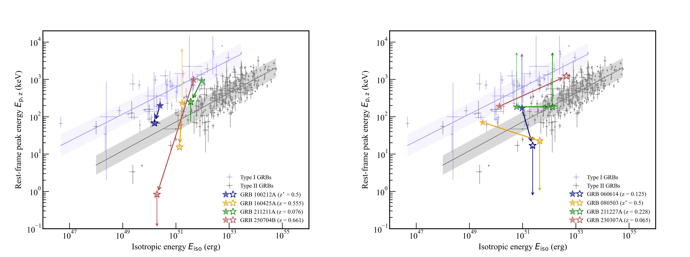
图注：\(\textbf{Amati-relation diagram for the GRB sample.}\) The left panel shows bursts whose transition from Episode~I to Episode~II is accompanied by decreases in both $E_{\mathrm{p,z}}$ and $E_{\mathrm{iso}}$. The right panel shows bursts whose transition toward the Type~II region is accompanied by an increase in $E_{\mathrm{iso}}$. In both panels, filled and open stars denote Episode~I and Episode~II, respectively, and arrows connect the two episodes of the same burst to indicate their episode-dependent transition on the $E_{\rm p,z}$--$E_{\rm iso}$ plane. Vertical arrows denote upper or lower limits on $E_{\mathrm{p,z}}$. For GRB~080503 and GRB~100212A, a reference redshift of $z^{*}=0.5$ is assumed. The blue and gray points, lines, and shaded regions show the empirical Amati-relation distributions for Type~I and Type~II GRBs, respectively.
对应解读：对应“建议重点查看的图表”第3项和第4项，以及“关键图表逐图导读”中图3/图4关于 E_{\
m p,z}–E_{\
m iso} 平面、episode 迁移箭头、I型/II型经验区域的解读。
入选理由：这是支撑论文核心结论的主图：直接展示 Episode I 与 Episode II 在 E_{\
m p,z}–E_{\
m iso} 平面上的相对位置，用实心/空心星号区分两个 episode，并用箭头连接同一 GRB 的迁移方向。图中还包含 Type I 与 Type II GRB 的经验分布、关系线和阴影区域，以及 E_{\
m p,z} 上下限标记，能够检验 extended emission 是否系统性向 Type II 区域移动，是日报详细解读中最需要嵌入的图。
来源与置信度：\(arxiv_source\)；high；\(arxiv_source\) / ms.tex:figure[2]
Fig01
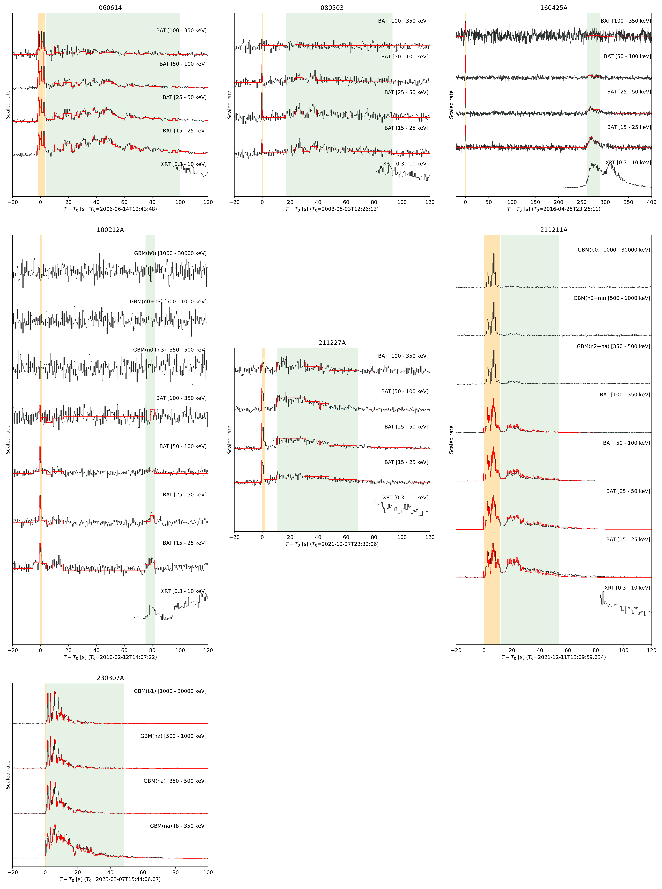
图注：\(\textbf{Light curves of the GRB samples adopted in this work.}\) The black solid lines represent the light curves in different energy bands, while the red solid lines denote the Bayesian Block fittings to BAT data. Notably, GRB 230307A lacks available BAT observations, and its red solid line corresponds to the Bayesian Block results derived from GBM data. The orange shaded regions mark Episode I, and the green shaded regions indicate Episode II. Light curve of 250704B can be found in \(\cite{2026arXiv260114137L}.\)
对应解读：对应“建议重点查看的图表”第1项，以及“关键图表逐图导读”中图1关于 prompt 光变曲线、Episode I/II 分段时间窗、短硬 spike 与 extended emission 边界的解读。
入选理由：这张图展示样本 GRB 的多能段光变曲线、Bayesian Block 拟合以及 Episode I/II 的阴影分段，是理解后续分段谱分析和 Amati 平面迁移的基础。它能帮助读者检查 spike 与 extended emission 的时间边界是否清楚，以及长持续时间是否主要由软 extended emission 贡献，因此在科学链条上仅次于主 Amati 关系图。
来源与置信度：\(arxiv_source\)；high；\(arxiv_source\) / ms.tex:figure[1]
强相关工作
这篇工作与 GRB 分类的两条传统线索直接相连：一条是 BATSE 以来基于 \(T_{90}\) 的短暴/长暴统计分类，另一条是基于物理起源的 I 型/II 型分类框架。它延续了 Zhang 等人提出的多判据分类思想，即持续时间、谱硬度、宿主、超新星或千新星关联、余辉环境和 prompt 经验关系都只能作为证据链的一部分，而不能单独定案。
与 Amati 关系相关的文献是本文的直接背景。经典长暴样本显示 \(E_{\rm p,z}\) 与 \(E_{\rm iso}\) 存在相关，而短暴常被认为偏离该关系；但这种说法一直受到选择效应、探测阈值、谱外推和样本定义影响。本文的新意不是否定 Amati 关系，而是指出在长持续 I 型 GRB 中，Amati 位置本身具有 episode dependence。
同类源背景应检索 GRB 211211A、GRB 230307A、long-duration Type I GRB、short GRB with extended emission、merger-origin long GRB、kilonova-associated GRB 等关键词。相反或张力方向的关键词包括 Amati relation selection effects、short GRB Amati outliers、GRB classification duration hardness、collapsar contamination in short GRBs。由于本文摘要没有列出 8 个样本的完整名称，除公认同类和基础文献外，不应把具体事件链接强行当作同一样本链接。
同一事件 / 同类源线索：
相似工作：
基础理论 / 方法工作：
- https://arxiv.org/abs/astro-ph/0205230
- https://ui.adsabs.harvard.edu/abs/1993ApJ...413L.101K/abstract
相反观点 / 张力线索：
说明
评分由 LLM 给出初评，再由本地阈值策略过滤；IACT、TeV 伽马射线和高能中微子天文学按重点方向处理。